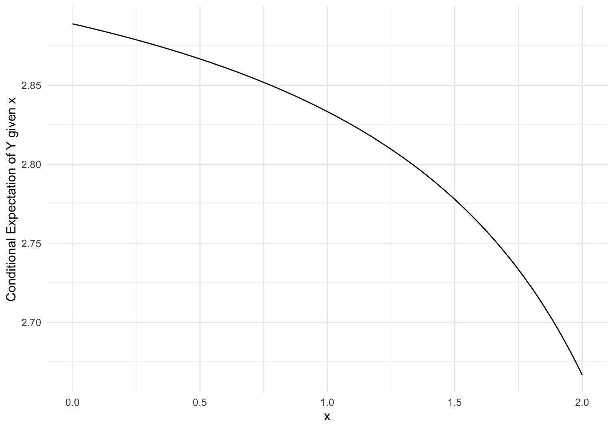
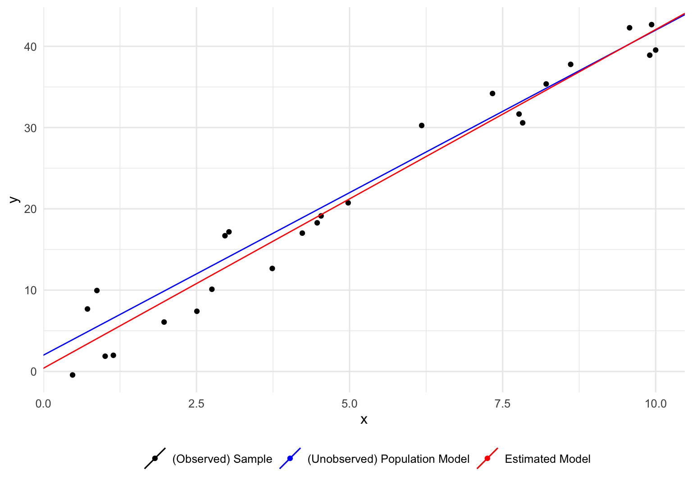
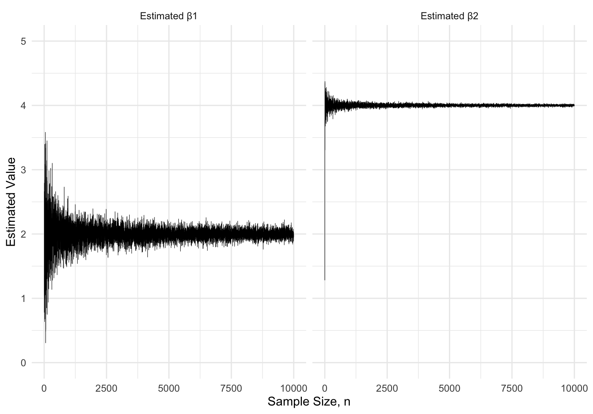

7 The Classical Linear Model
Now that we’re equipped with all the tools necessary to consider our first econometric model – the classic linear model.
7.1 Identification, Estimation, and Inference
Before we cover our first, and arguably most important, model in econometrics, it’s worth reiterating how the problems of identification, estimation, and inference are related. It’s also important to consider whether these problems occur in the context of a model/population, or a sample drawn from the model/population. These slides provide a nice diagram which provides some insight.
When we posit a model \(\mathcal P\) (which is just a collection of probability distributions), the first thing we need to do is parameterize our model. Angrist and Pischke (2008) refer to this as a “population first” approach in which we “define the objects [parameters] of interest before we can use data to study [estimate/make inferences] about them.” We then must address the question of identification – for a parameterization \(\boldsymbol{\theta}\mapsto P_\boldsymbol{\theta}\), does \(\boldsymbol{\theta}\) uniquely determine \(P_\boldsymbol{\theta}\)? If \(\boldsymbol{\theta}= \boldsymbol{\theta}'\), then is it necessarily the case that \(P_\boldsymbol{\theta}= P_{\boldsymbol{\theta}'}\)? For this to be the case, we will usually need to amend our initial model by adding one or more assumptions. Once this is done, we can tackle the problem of estimation/inference given a sample drawn from the population knowing that once we’ve made a decision (whether that be an estimate or rejecting a null hypothesis) regarding the parameter space \(\boldsymbol\Theta\), that it will be equivalent to a decision about the model \(\mathcal P\) via identification.
Another way to think about identification is in terms of some “perfect” estimate of \(\boldsymbol{\theta}\). Imagine that you had an infinite amount of data such that it was guaranteed that \(\hat{\boldsymbol{\theta}} = \boldsymbol{\theta}\). If \(\boldsymbol{\theta}\) is not identified, then our perfect estimate \(\hat{\boldsymbol{\theta}} = \boldsymbol{\theta}\) could correspond to multiple \(P_\boldsymbol{\theta}\in \mathcal P\), so it is impossible to know the which model value \(P_\boldsymbol{\theta}\) generated the infinite amount of data which gave us our estimate. This speaks to how fundamental the problem of identification is. We usually like to focus on all the nice properties an estimator has, but even if that estimator checks all the boxes, it is meaningless if our parameters/model isn’t identified.
The term “identification” can sometimes be the cause of confusion because it appears in a wide array of contexts, and definitions of identification sometimes only apply to a specific model.1 For an excellent survey of identification in econometrics see Lewbel (2019).
7.2 Conditional Expectation and Linear Projection
We will begin with an example owing to Galton (1886).
Example 7.1 Suppose we are interested in how the height of two parents is related to their child’s height. Let \(X\) be a random variable associated with the average height of two parents, and \(Y\) be a random variable associated with the height of a child. Furthermore, assume the joint distribution of \((X,Y)\) is: \[\begin{align*} (X,Y) &\sim N(\boldsymbol \mu, \boldsymbol \Sigma),\\ \boldsymbol \mu & = [68, 68]',\\ \boldsymbol \Sigma & = \begin{bmatrix}8 & 4\\ 4 & 6\end{bmatrix}. \end{align*}\] As a consequence, \(X \sim N(68, 8)\) and \(Y ~ N(68,6)\) have the same marginal density of \(N(68, 8)\). In other words, the average height of individuals is the same across generations. The variance of \(X\) and \(Y\) are given as \(\sigma_X^2=\boldsymbol{\Sigma}_{11}\) and \(\sigma_Y^2 = \boldsymbol{\Sigma}_{22}\).
Show code which generates figure
mu <- c(68, 68)
Sigma <- matrix(c(8, 4, 4, 6), ncol = 2)
p1 <- tibble(x = c(seq(57, 80, length = 1000), seq(57, 80, length = 1000)),
key = c(rep("Parents", 1000), rep("Child", 1000))
) %>%
mutate(y = dnorm(x, 68, sqrt(8))) %>%
ggplot(aes(x, y)) +
geom_line() +
facet_wrap(~key, scales = "free") +
theme_minimal() +
labs(x = "Height (in)",
y = "density")
df <- expand_grid(
x = c(seq(57, 80, length = 1000), 60, 65, 70, 75),
y = seq(57, 80, length = 1000)
)
df$p <- dmvnorm(df, mu, Sigma)
p2 <- ggplot(df, aes(x, y, z = p)) +
geom_contour(bins = 20, color = "black") +
theme_minimal() +
labs(x = "Parents' (Average) Height (in)", y = "Child's Height (in)")
ggarrange(p1, p2, ncol = 1)
If we want to predict a child’s height using parents’ height \(X = x\), we can inspect the conditional expectation \(\text{E}\left[Y\mid X = x\right]\). This expectation is given as
\[\begin{align*} \text{E}\left[Y\mid X = x\right] & = \int_{\mathcal Y} y\cdot f_{Y\mid x}(y\mid x)\ dy\\ & = \int_{\mathcal Y} y\cdot \frac{f_{Y,X}(y \mid x, \boldsymbol \mu, \boldsymbol \Sigma)}{f_{X}(x \mid \mu_1, \sigma_{X})}\ dy\\ & = \int_{\mathcal Y}y\cdot \frac{\exp\left(-\frac{1}{2}([x,y]' - \boldsymbol \mu)'\boldsymbol\Sigma^{-1}([x,y]' - \boldsymbol \mu)\right)/\sqrt{(2\pi)^k\det(\boldsymbol\Sigma)}}{\exp[-(x-\mu_X)^2/2\sigma^2]/\sqrt{2\pi\sigma_X^2}}\ dF_Y\\ &\vdots\\ & = \mu_Y + \frac{\sigma_{Y}}{\sigma_{X}}\rho(x - \mu_X) \end{align*}\] If we substitute in our parameters, and the calculated correlation coefficient of \[ \rho = \frac{\text{Cov}\left(X,Y\right)}{\sigma_{X}\sigma_{Y}} = \frac{1}{4\sqrt 3} \approx 0.577,\] we have \[ \text{E}\left[Y\mid X = x\right] \approx 68 + \frac{\sqrt 6}{\sqrt 8}\cdot\frac{1}{4\sqrt 3}(x - 68) = 34 + \frac{1}{2}x.\]
Show code which generates figure
p1 <- df %>%
filter(x %in% c(60, 65, 70, 75) )%>%
mutate(p_y = p/dnorm(x, 68, sqrt(8))) %>%
ggplot(aes(y, p_y, color = as.factor(x))) +
geom_line() +
theme_minimal() +
labs(color = "Parents's Height",
x = "Childs's Height",
y = "Conditional Density") +
theme(legend.position = "bottom")
rho <- (Sigma[1,2])/(sqrt(Sigma[1,1]) * sqrt(Sigma[2,2]))
s1 <- sqrt(Sigma[1,1])
s2 <- sqrt(Sigma[2,2])
df2 <- data.frame(x = seq(57, 80, length = 1000)) %>%
mutate(E_y = mu[2] + rho*(s2/s1)*(x - mu[1]))
p2 <- df2 %>% ggplot(aes(x,E_y)) +
geom_line() +
theme_minimal() +
labs(x = "Parents' (Average) Height (in)",
y = "Conditional Expectation of Child's Height")
ggarrange(p1, p2, ncol = 1)
The key observation is that the function \(\text{E}\left[Y \mid X = x\right]\) is linear in \(x\)! If we overlay the line associated with \(\text{E}\left[Y\mid X =x\right]\) on the joint density of \((X,Y)\) we end up with a figure emulating one in Galton (1886).
Show code which generates figure
df <- expand_grid(
x = c(seq(57, 80, length = 1000), 60, 65, 70, 75),
y = seq(57, 80, length = 1000)
)
df$p <- dmvnorm(df, mu, Sigma)
ggplot(df, aes(x, y, z = p)) +
geom_hline(yintercept = 68, linetype = "dashed", size = 0.4) +
geom_vline(xintercept = 68, linetype = "dashed", size = 0.4) +
geom_contour(bins = 20, color = "black") +
theme_minimal() +
labs(x = "Parents' (Average) Height (in)", y = "Child's Height (in)") +
geom_abline(intercept = 34, slope = 1/2, color = "red") +
geom_abline(intercept = 0, slope = 1, color = "blue") +
annotate("text", label = "E[Y|X = x]",x = 75.5, y = 34 + 76/2 - 1, size = 4, colour = "red") +
annotate("text", label = "X = x",x = 75, y = 74, size = 5, colour = "blue")Warning: Using `size` aesthetic for lines was deprecated in ggplot2 3.4.0.
ℹ Please use `linewidth` instead.
On average, children with tall parents tend to be shorter than their parents. Conversely, children with short parents tend to be taller than their parents. In other words, as shown by the lines superimposed on \(f_{X,Y}\), \(\text{E}\left[Y\mid X = x\right] < x\) when \(x > \text{E}\left[X\right]\) and \(\text{E}\left[Y\mid X = x\right] > x\) when \(x < \text{E}\left[X\right]\).
This phenomenon is known as regression to the mean, and it lends its name to the practice of relating \(Y\) to \(X\). The ideas from Galton (1886) were extended by one of Galton’s students in Pearson and Lee (1903), who actually uses the term “regression line” in reference to the function \(\text{E}\left[Y\mid X\right]\).
Remark. It behooves one to acknowledge that Francis Galton’s motivation for studying height among parents and children stemmed from his interest in genetics and Darwinism. He was an early proponent of eugenics, and even coined the term “eugenics”. He referred to regression to the mean as “regression to mediocrity”, and believed this should be avoided by selective reproduction. Many of Galton’s beliefs are classic examples of scientific racism.
Let’s abstract from the example of height. Suppose we have \((Y, \mathbf X)\sim F_{Y,\mathbf{X}}\) for some dependent variable \(Y\) (with sample space \(\mathcal Y\)) and a vector of independent variables/explanatory variables/covariates/regressors \(\mathbf{X}\) (with sample sapce \(\mathcal X\)). If we want to explore the relationship between \(Y\) and \(\mathbf{X}\), one measure of interest is the conditional expectation of \(Y\) given \(\mathbf{X}\). If we know \(\mathbf{X}\) takes on the value \(\mathbf{x}\), then on average, what is the value of \(Y\)? \[ \text{E}\left[Y\mid \mathbf{X}= \mathbf{x}\right] = \int_{\mathcal Y}y \ dF_{Y\mid \mathbf{x}} = \int_{\mathcal Y}y\cdot f_{Y\mid \mathbf{x}}(y\mid \mathbf{x}) \ dy = \int_{\mathcal Y}y\cdot\frac{f_{Y, \mathbf{X}}(y,\mathbf{x})}{f_{\mathbf{X}}(\mathbf{x})}\ dy\] This conditional expectation maps values from the sample space of \(\mathbf{X}\) to the sample space for \(Y\). In this sense, \(\text{E}\left[Y\mid \mathbf{X}= \mathbf{x}\right]\) is a function mapping \(\mathcal X \mapsto \mathcal Y\). \(\text{E}\left[Y\mid \mathbf{X}= \mathbf{x}\right]\) is not a function of \(y\), as it is calculated via integrating over all values of \(y\in\mathcal Y\). Following Angrist and Pischke (2008) and Hansen (2022), we name this function.
Definition 7.1 If \((Y, \mathbf X)\sim F_{Y,\mathbf{X}}\), then the conditional expectation function (CEF) \(\hat Y:\mathcal X \to \mathcal Y\) is defined as \[\hat Y(X) = \text{E}\left[Y\mid \mathbf{X}\right]. \] The CEF is an expectation, so observations of \(Y\) are bound to deviate from it. We will define this deviation as the CEF error \(\varepsilon_{c} = Y - \hat Y(X)\).
In the height example, \(\varepsilon_{c}\) captured how much a child’s height differed from the trend given by \(\text{E}\left[Y\mid \mathbf{X}\right]\).
Proposition 7.1 (Properties of CEF Error) The CEF error is:
- Mean independent of \(\mathbf{X}\), \(\text{E}\left[\varepsilon_{c}\mid\mathbf{X}\right] = 0\);
- Uncorrelated with \(\mathbf{X}\), \(\text{E}\left[\varepsilon_{c}\mathbf{X}\right] = \mathbf{0}\);
- Uncorrelated with any function \(h(\mathbf{X})\), \(\text{E}\left[\varepsilon_{c} h(\mathbf{X})\right] = 0\)
Proof. \[\begin{align*} \text{E}\left[\varepsilon_{c}\mid\mathbf{X}\right] &= \text{E}\left[Y - \hat Y(X)\mid \mathbf{X}\right]\\ & = \text{E}\left[Y - \text{E}\left[Y\mid \mathbf{X}\right] \mid \mathbf{X}\right] \\ & = \text{E}\left[Y\mid \mathbf{X}\right] - \text{E}\left[\text{E}\left[Y\mid \mathbf{X}\right] \mid \mathbf{X}\right] & (\text{E}\left[\cdot | \mathbf{X}\right]\text{ linear})\\ & = \text{E}\left[Y\mid \mathbf{X}\right] - \text{E}\left[Y\mid \mathbf{X}\right] & (\text{Law of Iterated Expectations})\\ & = 0. \end{align*}\] \(\mathbf{X}\) and \(\varepsilon_{c}\) being uncorrelated is a consequence of mean independence. For some \(h(\mathbf{X})\), we have \[\begin{align*} \text{E}\left[\varepsilon_{c} h(\mathbf{X})\right] & = \text{E}\left[\varepsilon_{c} h(\mathbf{X}) \text{E}\left[\varepsilon_{c}\mid\mathbf{X}\right]\right] & (\text{Law of Iterated Expectations})\\ & = \text{E}\left[\varepsilon_{c} h(\mathbf{X})\cdot 0\right] & (\text{E}\left[\varepsilon_{c}\mid\mathbf{X}\right] = 0)\\ & = \text{E}\left[0\right]\\ & = 0. \end{align*}\] space
We are not assuming that \(\text{E}\left[\varepsilon_{c}\mid\mathbf{X}\right] = 0\). This equality holds by the definition of the CEF.
So why restrict our attention to the CEF? Perhaps there are other functions \(g:\mathcal X\to\mathcal Y\) which is better at predicted \(Y\) than \(\hat Y(\mathbf{X})\). It turns out that \(\hat Y(\mathbf{X})\) is the function which minimizes the MSE which arises from predicted \(Y\).
Proposition 7.2 (CEF Minimizes MSE) For some arbitrary \(g:\mathcal X\to\mathcal Y\), \[ \hat Y(\mathbf{X}) = \text{E}\left[Y\mid \mathbf{X}\right] = \mathop{\mathrm{argmin}}_{g}\text{E}\left[(Y-g(\mathbf{X}))^2\right].\]
Proof. \[\begin{align*} \text{E}\left[(Y-g(\mathbf{X}))^2\right] & = \text{E}\left[(Y-g(\mathbf{X}) + 0)^2\right]\\ & = \text{E}\left[(Y-g(\mathbf{X}) + (\text{E}\left[Y\mid \mathbf{X}\right] - \text{E}\left[Y\mid \mathbf{X}\right]))^2\right] & (0 = \text{E}\left[Y\mid \mathbf{X}\right] - \text{E}\left[Y\mid \mathbf{X}\right])\\ & = \text{E}\left[(Y - \text{E}\left[Y\mid \mathbf{X}\right]) + (\text{E}\left[Y\mid \mathbf{X}\right] - g(\mathbf{X})))^2\right]\\ & = \text{E}\left[(Y - \text{E}\left[Y\mid \mathbf{X}\right])^2 + 2(Y - \text{E}\left[Y\mid \mathbf{X}\right])(\text{E}\left[Y\mid \mathbf{X}\right] - g(\mathbf{X})) + (\text{E}\left[Y\mid \mathbf{X}\right] - g(\mathbf{X}))^2\right]\\ & = \text{E}\left[(Y - \text{E}\left[Y\mid \mathbf{X}\right])^2\right] + 2\text{E}\left[(Y - \text{E}\left[Y\mid \mathbf{X}\right])(\text{E}\left[Y\mid \mathbf{X}\right] - g(\mathbf{X})) \right] + \text{E}\left[(\text{E}\left[Y\mid \mathbf{X}\right] - h(\mathbf{X}))^2\right]\\ & = E{(Y - \text{E}\left[Y\mid \mathbf{X}\right])^2} + 2\text{E}\left[\varepsilon_{c}(\text{E}\left[Y\mid \mathbf{X}\right] - g(\mathbf{X})) \right] + \text{E}\left[(\text{E}\left[Y\mid \mathbf{X}\right] - g(\mathbf{X}))^2\right] & (\varepsilon_{c} = Y - \text{E}\left[Y\mid \mathbf{X}\right]) \end{align*}\] If we define \(h(\mathbf{X}) = \text{E}\left[Y\mid \mathbf{X}\right] - g(\mathbf{X})\), we can use the fact that \(\varepsilon_{c}\) is uncorrelated with any function of \(\mathbf{X}\). \[\begin{align*} \text{E}\left[(Y-g(\mathbf{X}))^2\right] & = E{(Y - \text{E}\left[Y\mid \mathbf{X}\right])^2} + 2\text{E}\left[\varepsilon_{c} h(\mathbf{X})\right] + \text{E}\left[(\text{E}\left[Y\mid \mathbf{X}\right] - g(\mathbf{X}))^2\right]\\ \text{E}\left[(Y-g(\mathbf{X}))^2\right] & = E{(Y - \text{E}\left[Y\mid \mathbf{X}\right])^2} + 2\cdot 0 + \text{E}\left[(\text{E}\left[Y\mid \mathbf{X}\right] - g(\mathbf{X}))^2\right] & (\text{E}\left[\varepsilon_{c} h(\mathbf{X})\right] = 0)\\ \text{E}\left[(Y-g(\mathbf{X}))^2\right] & = E{(Y - \text{E}\left[Y\mid \mathbf{X}\right])^2} + \text{E}\left[(\text{E}\left[Y\mid \mathbf{X}\right] - g(\mathbf{X}))^2\right] \end{align*}\] Only the second term includes the variable we are minimizing over, so \[ \mathop{\mathrm{argmin}}_{h}\text{E}\left[(Y-g(\mathbf{X}))^2\right] =\mathop{\mathrm{argmin}}_{h}\left\{E{(Y - \text{E}\left[Y\mid \mathbf{X}\right])^2} + \text{E}\left[(\text{E}\left[Y\mid \mathbf{X}\right] - g(\mathbf{X}))^2\right]\right\} = \mathop{\mathrm{argmin}}_h \text{E}\left[(\text{E}\left[Y\mid \mathbf{X}\right] - g(\mathbf{X}))^2\right],\] where \(\text{E}\left[(\text{E}\left[Y\mid \mathbf{X}\right] - g(\mathbf{X}))^2\right] \ge 0\) because we are squaring a quantity. If we take \(g(\mathbf{X}) = \hat Y(X) = \text{E}\left[Y\mid \mathbf{X}\right]\), we have \[ \text{E}\left[(\text{E}\left[Y\mid \mathbf{X}\right] - g(\mathbf{X}))^2\right] = \text{E}\left[(\text{E}\left[Y\mid \mathbf{X}\right] - \text{E}\left[Y\mid \mathbf{X}\right])^2\right] = \text{E}\left[0\right]=0.\] Therefore the CEF does minimize the MSE in question.
This results makes the CEF the optimal candidate for predicting \(Y\) given \(\mathbf{X}= \mathbf{x}\) in a decision theoretic sense (taking the loss function to be quadratic), but in practice we don’t actually know the precise form of the CEF. When \((X,Y) \sim N(\boldsymbol \mu, \boldsymbol{\Sigma})\), we saw the CEF is linear, but this needn’t be the case.
Example 7.2 Define the following density on the sample space \(\mathcal X\times \mathcal Y = [0,2]\times[2,4]\):
\[f_{X,Y}(x,y)=\frac{1}{8}(6-x-y)\] The marginal density of \(X\) is \[ f_X(x) = \int_{\mathcal Y}f_{X,Y}(x,y)\ dy = \int_2^4\frac{1}{8}(6-x-y)\ dy = \frac{1}{8}(6-2x),\] and the conditional density of \(Y\mid X = x\) is \[ f_{Y\mid x}(y\mid x) = \frac{f_{X,Y}(x,y)}{f_{X}(x)} = \frac{\frac{1}{8}(6-x-y)}{\frac{1}{8}(6-2x)} = \frac{6-x-y}{6-2x}\] Using this to calculate the expectation \(\text{E}\left[Y \mid X = x\right]\) gives \[\text{E}\left[Y \mid X = x\right] = \int_{\mathcal Y} y\cdot f_{Y\mid x}(y\mid x)\ dy= \int_2^4 y\frac{6-x-y}{6-2x}\ dy = \frac{26-9x}{9-3x}.\]
Show code which generates figure
tibble(x = seq(0, 2, length = 1000)) %>%
mutate(y = (-9*x + 26)/(-3*x + 9)) %>%
ggplot(aes(x, y)) +
geom_line() +
labs(x = "x", y = "Conditional Expectation of Y given x") +
theme_minimal()

In order to give the CEF some form, we will approximate it with a linear function (which may hold for certain \(f_{\mathbf{X},Y}\)): \[\text{E}\left[Y\mid \mathbf{X}\right] = \mathbf{X}\boldsymbol{\beta}.\] Henceforth, we will assume that \(\mathbf{X}\) includes a column of 1’s such that \(\mathbf{X}\boldsymbol{\beta}\) includes an intercept term. We will take the coefficient \(\boldsymbol{\beta}\) to be that which gives the best linear prediction of \(Y\) given \(\mathbf{X}\). \[ \boldsymbol{\beta}= \mathop{\mathrm{argmin}}_{\mathbf{b}}\text{E}\left[(Y-\mathbf{X}\mathbf b)^2\right]\] The error associated with this projection is the linear projection error, \(\varepsilon_{\ell} = Y-\mathbf{X}\mathbf b\). The linear projection error is not the same as the conditional expectation error. It is only the case that \(\varepsilon_{\ell} = \varepsilon_c\) if the CEF is truly linear.
Taking the definition of \(\boldsymbol{\beta}\) to be a parameterization, we can define our first model. We’ll follow the naming convention of Hansen (2022).
Definition 7.2 The linear projection (CEF) model is defined as \(\mathcal P_\text{LP} = \{P_\boldsymbol{\beta}\mid \boldsymbol{\beta}\in \mathbb R^{k+1}\}\), where \[\begin{align*} P_\boldsymbol{\beta}&= \{F_{\mathbf{X},Y} \mid \text{E}\left[Y\mid \mathbf{X}\right]= \mathbf{X}\boldsymbol{\beta}\},\\ \boldsymbol{\beta}&= \mathop{\mathrm{argmin}}_{\mathbf{b}}\text{E}\left[(Y-\mathbf{X}\mathbf b)^2\right],\\ \mathbf{X}& = (1, X_2, \ldots, X_K). \end{align*}\]
This model is not regular, as each element \(P_\boldsymbol{\beta}\) is itself a collection of distributions. As the following example highlights, it won’t be possible to identify the underlying \(F_{\mathbf{X},Y}\), only \(\text{E}\left[Y\mid \mathbf{X}\right]\). Consequently, each element of \(\mathcal P_\text{LP}\) is a collection of distributions with a common \(\text{E}\left[Y\mid \mathbf{X}\right]\).
Example 7.3 (Exercise in Identification) Suppose \((X,Y)\sim N(\boldsymbol \mu, \boldsymbol{\Sigma})\). In this case, the CEF is actually linear and given as \[\text{E}\left[Y\mid X\right] = \mu_Y + \frac{\sigma_{Y}}{\sigma_{X}}\rho(x - \mu_X).\] We can define many normal distributions with a common CEF. For example, if we have \(\rho = \mu_x = \mu_y = \rho' = \mu_x' = \mu_y' = 1\), \(\sigma_X = 1\), \(\sigma_Y = 2\), \(\sigma_X' = 2\), and \(\sigma_Y' = 4\), then \[\mu_Y + \frac{\sigma_{Y}}{\sigma_{X}}\rho(x - \mu_X) = \mu_Y' + \frac{\sigma_{Y}'}{\sigma_{X}'}\rho'(x - \mu_X') = \frac{1}{2} +x.\] This means that \(\boldsymbol{\beta}= (1/2,1)\) for both distributions. This problem is reminiscent of systems of equations in that we have so many more variables than equations, that there are infinite possibilities (remember this). This is also just the tip of the iceberg when considering how many elements are included in \(P_{(1/2,1)}\). It isn’t just all the Gaussian distributions where the CEF is \(\frac{1}{2} +x\). It isn’t all the distributions with a linear CEF which is \(\frac{1}{2} +x\). It is all the distributions for which the best linear approximation of the CEF is \(\frac{1}{2} +x\) (which happens to include the previous groups). Is this an issue? Well not really. We aren’t concerned with the joint distribution \(F_{\mathbf{X},Y}\), as the only thing with any bearing on prediction here is \(\text{E}\left[Y\mid \mathbf{X}\right]\) (we made no assumptions about \(F_{\mathbf{X},Y}\) when proving that the CEF minimizes MSE). In the event we did want to identify \(F_{\mathbf{X},Y}\), we would need to impose additional assumptions on \(\mathcal P_\text{LP}\). Consider the following assumptions:
- \((X,Y)\sim N(\boldsymbol \mu, \boldsymbol{\Sigma})\)
- \(\mu_X = 0\)
- \(\sigma_X = \sigma_Y = 1\)
In this case, \[\text{E}\left[Y\mid X\right] = \mu_Y + \rho x = \mu_Y + \frac{\text{Cov}\left(X,Y\right)}{\underbrace{\sigma_X \sigma_Y}_{1\cdot 1}}x = \underbrace{\mu_Y}_{\beta_1} +\underbrace{\text{Cov}\left(X,Y\right)}_{\beta_2}x,\] Assuming \((X,Y)\sim N(\boldsymbol \mu, \boldsymbol{\Sigma})\), \(\mu_X = 0\), and \(\sigma_X = \sigma_Y = 1\), it must be the case that
\[\begin{align*} (X,Y) &\sim N(\boldsymbol \mu, \boldsymbol \Sigma),\\ \boldsymbol \mu & = [0, \beta_1]',\\ \boldsymbol \Sigma & = \begin{bmatrix}1 & \beta_2\\ \beta_2 & 1\end{bmatrix}. \end{align*}\]
Now we can turn to the question of identifying \(\boldsymbol{\beta}\).
Proposition 7.3 If \(\text{E}\left[\mathbf{X}\mathbf{X}'\right]\) is invertible, then the parameter \(\boldsymbol{\beta}\) is identified in the linear projection (CEF) model.
Proof. We must show that \(\boldsymbol{\beta}= \boldsymbol{\beta}'\), then is it necessarily the case that \(P_\boldsymbol{\beta}= P_{\boldsymbol{\beta}'}\). By the definition of the linear projection (CEF) model, it suffices to show that \(\mathop{\mathrm{argmin}}_{\mathbf{b}}\text{E}\left[(Y-\mathbf{X}\mathbf b)^2\right]\) has a solution, and that the solution is unique. \[\begin{align*} \boldsymbol{\beta}&= \mathop{\mathrm{argmin}}_{\mathbf{b}}\text{E}\left[(Y-\mathbf{X}\mathbf b)^2\right]\\ & = \mathop{\mathrm{argmin}}_{\mathbf{b}}\text{E}\left[Y^2 + 2\mathbf b(\mathbf{X}'Y) + (\mathbf{X}\mathbf b)'(\mathbf{X}\mathbf b)\right]\\ & = \mathop{\mathrm{argmin}}_{\mathbf{b}} \left\{\text{E}\left[Y^2\right] + 2\mathbf b\text{E}\left[\mathbf{X}'Y\right] + 2\mathbf b'\text{E}\left[\mathbf{X}'\mathbf{X}\right]\mathbf b)\right\} \end{align*}\] The first order condition associated with this problem is \[ 2\text{E}\left[\mathbf{X}'Y\right] + 2\text{E}\left[\mathbf{X}'\mathbf{X}\right] \boldsymbol{\beta}= \mathbf{0}.\] This is equivalent to \[\text{E}\left[\mathbf{X}'Y\right] = \text{E}\left[\mathbf{X}'\mathbf{X}\right] \boldsymbol{\beta}.\] We now use the assumption that \(\text{E}\left[\mathbf{X}'\mathbf{X}\right]\) is invertible to solve for a unique solution for \(\boldsymbol{\beta}\): \[ \boldsymbol{\beta}= \left(\text{E}\left[\mathbf{X}'\mathbf{X}\right]\right)^{-1}\text{E}\left[\mathbf{X}'Y\right].\] Therefore, \(\boldsymbol{\beta}\) is identified.
To illustrate how the assumption that \(\text{E}\left[\mathbf{X}'\mathbf{X}\right]\) is invertible leads to identification, consider what happens when it does not hold. In \(\text{E}\left[\mathbf{X}'\mathbf{X}\right]\) is not invertible, than \(\mathbf{X}'\mathbf{X}\) does not have full rank and has infinite solutions. Suppose we have: \[\begin{align*} \text{E}\left[\mathbf{X}'Y\right] & = \begin{bmatrix} 1 \\ 1 \end{bmatrix}.\\ \text{E}\left[\mathbf{X}'\mathbf{X}\right] & = \begin{bmatrix} 1 & 1\\ 0 & 0 \end{bmatrix}. \end{align*}\] In this case \[\begin{align*} &\text{E}\left[\mathbf{X}'Y\right] = \text{E}\left[\mathbf{X}'\mathbf{X}\right] \boldsymbol{\beta}\\ \implies &\begin{bmatrix} 1 & 1\\ 0 & 0 \end{bmatrix}\begin{bmatrix} \beta_1 \\ \beta_2 \end{bmatrix} = \begin{bmatrix} 1 \\ 1 \end{bmatrix}\\ \implies & \beta_1 + \beta_2 = 1. \end{align*}\] This final equation has an infinite number of solutions. If two of those solutions happen to be \(\boldsymbol{\beta}\) and \(\boldsymbol{\beta}'\), then \(P_{\boldsymbol{\beta},\boldsymbol{\Sigma}} = P_{\boldsymbol{\beta}'}\) despite \(\boldsymbol{\beta}\neq\boldsymbol{\beta}'\).
7.3 Structural Models and The Linear Model
The CEF approach to regression aims to describe a characteristic of the joint density \(f_{Y,\mathbf{X}}\). It captures an association between variables, but not a causal link. Econometricians are often concerned with causal links to inform economic policy, something which differentiates econometrics from statistics. This is why the approach to linear regression seen in standard econometrics sources such as Greene (2018), Wooldridge (2010), Hayashi (2011), Wooldridge (2015), and Stock and Watson (2003) take a structural approach to linear regression. Before giving a heuristic definition of “structural”, let’s consider an example due to Reiss and Wolak (2007) and inspired Cobb and Douglas (1928).
Example 7.4 Assume a firms output \(Y\) is related to labor input \(L\) and capital input \(K\) according to \[Q = AL^{\beta}K^{\alpha}.\] The total factor of productivity is \(A\), while \(L\) and \(K\) are the elasticity of output with respect to labor and capital, respectively. The production function can be written as \[ \log Q = \log A + \beta \log L + \alpha \log K.\] Now consider the linear regression: \[ \log Q = \log A + \beta \log L + \alpha \log K + \varepsilon\] where \(\varepsilon\) is an error addressing the fact that the linear relationship may not hold perfectly. In this case are \((\log A, \alpha, \beta)\) associated with the best linear projection of \(\log Q\) onto \(\log L\) and \(\alpha \log K\), or do they correspond to the factor of productivity, and elasticities of output? If the latter is the case, then what does \(\varepsilon\) represent in the context of the deterministic theoretical relationship \(Q = AL^{\beta}K^{\alpha}\)? It will turn out that for the coefficients of the best linear projection to coincide with the economic interpretation from \(Q = AL^{\beta}K^{\alpha}\), we will need to impose assumptions about \(\varepsilon\), a step that is one of the defining features of econometrics.
The key difference between this example and the height example from Galton (1886)’s is that we are now trying to root our linear regression in structure provided by economic theory/intuition, as to enable us to make economic conclusions. Philip Haile distinguishes these approaches in an excellent set of slides. He would classify Galton (1886)’s work as descriptive as it “estimates relationships between observables”. This is opposed to a structural approach which “estimates features of a data generating process (i.e, a model) that are (assumed to be) invariant to the policy changes or other counterfactuals of interest.” This difference is also linked to the error in the linear regression, \(\varepsilon\). As put by Reiss and Wolak (2007):
Where did the error term in the empirical model come from? The answer to this question is critical because it affects whether… the parameters of the Cobb–Douglas production function [are identified], as opposed to the parameters of the best linear predictor of the logarithm of output given the logarithms of the two inputs [being identified]. In other words, it is the combination of an economic assumption (production is truly Cobb–Douglas) and statistical assumptions (\(\varepsilon\) satisfies certain moment conditions) that distinguishes a structural model from a descriptive one.
In an effort to beat a dead horse, a final definition of a structural model is due to Goldberger (1972), who simply puts “By structural equation models, I refer to stochastic models in which each equation represents a causal link, rather than a mere empirical association.” None of this is to say that descriptive model is not useful. Just like descriptive statistics give insight into data, a descriptive model (such as the linear projection model) is an excellent way to investigate data, and findings may inform the development of a structural model.
Let’s now reintroduce linear regression from a structural perspective. We will do so with no assumptions about our model, and amend our definition as we determine which assumptions are required for identification and desirable properties of estimators. The goal of this approach is to emphasize that the assumptions associated with an econometric model aren’t set in stone from the onset. You begin with little to no assumptions, and then determine which assumptions are necessary as you analyze the model and accompanying estimators.
We have a vector of \(K\) regressors \(\mathbf{X}= [X_1,\ldots,X_K]\) (assuming \(X_1 = 1\) to allow for an intercept), structural parameters \(\boldsymbol{\beta}= [\beta_1,\ldots,\beta_n]'\) , and some structural error term \(\varepsilon\). The density underlying the model is the joint density between regressors and the error \(f_{\mathbf{X},\varepsilon}\). The independent variable \(Y\) is given as \[ Y = \mathbf{X}\boldsymbol{\beta}+ \varepsilon.\] The major difference between this and the linear projection model is the underlying density for the latter is \(f_{\mathbf{X},Y}\) where \(\boldsymbol{\beta}\) and \(\varepsilon\) are defined using this density. Now we’re determining \(Y\) via some structural parameter \(\boldsymbol{\beta}\) and the density \(f_{\mathbf{X},\varepsilon}\). There are many situations in which the realizations of \(\varepsilon\) may not be identically, or independently, distributed, so we need to consider the joint density of \(\boldsymbol{\varepsilon}= (\varepsilon_1, \ldots, \varepsilon_n)\) where our sample is size \(n\). This joint density is \(f_{\boldsymbol{\varepsilon}}\). The underlying density from which we draw regressors and errors is not \(f_{\mathbf{X},\boldsymbol{\varepsilon}}\), as a realization from this distribution would be comprised of \(K\) regressors and \(n\) errors. What we need is the joint density of \(\boldsymbol{\varepsilon}\) and \(n\) observations of \(\mathbf{X}\), so we need to consider the following random matrix: \[\mathbb{X}= \begin{bmatrix}\mathbf{X}_1 \\ \vdots \\ \mathbf{X}_i \\ \vdots\\ \mathbf{X}_n\end{bmatrix}\] A sample of \(n\) observations of \(K\) regressors \(\mathbf{X}\) and errors \(\boldsymbol{\varepsilon}\) is a single realization drawn from the density \(f_{\mathbb{X},\boldsymbol{\varepsilon}}\).
\[ \mathbf{Y}= \mathbb{X}\boldsymbol{\beta}+ \boldsymbol{\varepsilon}= \begin{bmatrix} \mathbf{X}_1\boldsymbol{\beta}+ \varepsilon_1 \\ \vdots \\ \mathbf{X}_i\boldsymbol{\beta}+ \varepsilon_i \\ \vdots \\ \mathbf{X}_n\boldsymbol{\beta}+ \varepsilon_n \end{bmatrix} = \begin{bmatrix} \beta_0 + \beta_1X_{21} + \cdots +\beta_KX_{K1}+ \varepsilon_1 \\ \vdots \\ \beta_0 + \beta_1X_{2i} + \cdots +\beta_KX_{Ki}+ \varepsilon_i \\ \vdots \\ \beta_0 + \beta_1X_{2n} + \cdots +\beta_KX_{Kn}+ \varepsilon_n \end{bmatrix}\] We could also write \(\mathbb{X}\) as \(K\) column vectors of length \(n\), each corresponding to the \(n\) observations of each regressor. \[\mathbb{X}= \begin{bmatrix}\mathbf{X}_1 & \cdots & \mathbf{X}_j & \cdots& \mathbf{X}_K\end{bmatrix}.\] To distinguish between \(\mathbf{X}_i\) (one observation of \(K\) regressors) and \(\mathbf{X}_j\) (\(n\) observations of one regressor), we will use the indices \(i\) and \(j\), respectively.2 We will assume that our data is the result of a random sample of observations of regressors \(\mathbf{X}_i\): \[ f_{\mathbb{X}}=\textstyle\prod_{i=1}^n f_{\mathbf{X}_i}.\] The random sample assumption is essential as it will allow us to apply the LLN and CLT. Finally, we introduce a parameter which dictates the variance of the error \(\boldsymbol{\varepsilon}\). This will be the PSD matrix \(\boldsymbol{\Sigma}= \text{Var}\left(\boldsymbol{\varepsilon}\mid\mathbb{X}\right)\). Now we can define the linear model in the absence of assumptions.
Definition 7.3 The linear model is defined as \(\mathcal P_\text{LM} = \{P_{\boldsymbol{\beta},\boldsymbol{\Sigma}} \mid \boldsymbol{\beta}\in \mathbb R^{K},\ \boldsymbol{\Sigma}\in \mathbb R^{n\times n} \}\), where \[\begin{align*} P_{\boldsymbol{\beta},\boldsymbol{\Sigma}} &= \{F_{\mathbb{X},\boldsymbol{\varepsilon}} \mid \mathbf{Y}= \mathbb{X}\boldsymbol{\beta}+\boldsymbol{\varepsilon},\ \boldsymbol{\Sigma}= \text{Var}\left(\boldsymbol{\varepsilon}\mid\mathbb{X}\right),\ f_{\mathbb{X}}=\textstyle\prod_{i=1}^n f_{\mathbf{X}_i} \},\\ \mathbb{X}& = [\mathbf{X}_1, \cdots, \mathbf{X}_j, \cdots \mathbf{X}_K] = [\mathbf{X}_1, \cdots, \mathbf{X}_i, \cdots \mathbf{X}_n]',\\ \mathbf{Y}& = [Y_1, \ldots, Y_n],\\ \boldsymbol{\varepsilon}& = [\varepsilon_1, \ldots, \varepsilon_n]\\ \end{align*}\]
When discussing a model \(P_{\boldsymbol{\beta},\boldsymbol{\Sigma}}\in\mathcal P_\text{LM}\), we are implicitly assuming that the specification of the model is correct, and regressors are IID. If the model were not linear than \(P_{\boldsymbol{\beta},\boldsymbol{\Sigma}}\notin\mathcal P_\text{LM}\), which is not our focus at the moment, but is a legitimate concern.
In the context of a structural linear model, \(\boldsymbol{\varepsilon}\) is not simply an approximation error. In introduces a stochastic element to a deterministic economic model. Reiss and Wolak (2007) enumerate four ways that this randomness can be introduced. We will explore these in the context of the Cobb-Douglas production model where \(\log Q_i = \log A + \beta \log L_i + \alpha \log K_i + \varepsilon\) for an observation from firm \(i\).
- We may be uncertain about the economic environment at hand.
- Agent uncertainty about the economic environment;
- Optimization errors on the part of economic agents;
- Measurement errors in observed variables.
Example 7.5 Suppose an agent is deciding between purchasing two cars (\(j=1,2\)) has a linear utility function \(u_{ij} = \mathbf{X}_{ij}\boldsymbol{\beta}\). The vector \(\mathbf{x}_{ij}\) are attributes of car \(j\) (size, mpg, make, model, etc.). We do observe their choice of vehicle \(y_i\), but cannot observe their utility from the respective vehicles. Assuming agents maximize their utility, then their choice can be defined as \[y_i = \begin{cases}\text{car }1& u_{i1} \ge u_{i2}\\ \text{car }2& u_{i2} > u_{i1} \end{cases}.\] How would we incorporate \(\varepsilon\) into our model? In the linear model the error directly affects the dependent variable, but in this case the (presumable) dependent variable \(y_i\) is an indicator. It doesn’t make sense to add a stochastic element to it, as we observe a customer’s choice with no uncertainty.
- People are inherently heterogeneous in the utility they receive from any product. One agent may live in a city with access to public transit and would not gain much utility from a car, while another agent may live in a rural area and rely on a car to commute to work and run errands. The error term \(\varepsilon_i\) could correct for these differences. It also could be the case that the error is specific to a consumer and a particular vehicle \(j\). Maybe consumer \(i\)’s is particularly loyal to the manufacturer of car \(j\) and they receive more utility as a result. This could be captured with an error \(\varepsilon_{ij}\).
- An agent may be not have the opportunity to test drive each car before purchasing, so their is some uncertainty as to how much utility they would receive from purchasing it. This uncertainty could be incorporated via \(\varepsilon_{ij}\).
- An agent may not be perfectly rational and could make a mistake while attempting to maximize their utility. They could purchase car \(j=2\) despite the fact that \(u_{i1} \ge u_{i2}\). To correct for this miscalculation, we could include an error \(\varepsilon_{ij}\) such that \(u_{i1} + \varepsilon_{i1} \le u_{i2} + \varepsilon_{i2}\)
- We may not be able to perfectly measure all the variables in the model. If one of the attributes in the vector \(\mathbf{x}_{ij}\) is price, but we only observe MSRP, then we aren’t accounting for the fact that some customers may have purchased their car for a lower price (it could be used, or on sale). This measurement error can be accounted for with \(\varepsilon_{ij}\)
It’s important to notice how the error term is indexed in each example. Sometimes the error arises because of the agent \(i\) (\(\varepsilon_i\)), or the agent and the specific car (\(\varepsilon_{ij}\)). There could also be ways to incorporate an error that is specific to each car, but not agents (\(\varepsilon_j\)). Later on in Section @ref(binary-choice) we will talk about how to estimate models like one.
The precise interpretation of \(\boldsymbol{\varepsilon}\) is key if we want to justify the statistical assumptions about \(\boldsymbol{\varepsilon}\) which Reiss and Wolak (2007) cite as a key player in identification.
Remark. Another classical assumption of linear regression that we have explicitly violated is that \(\mathbb{X}\) is a matrix of constants. In certain settings researchers are able to determine the values before collecting data. For instance, in a laboratory setting you may have enough control over the (observed/sampled) regressors as to be able to record the value of \(\mathbf{Y}\) at predetermined realizations of \(\mathbb{X}\). This is rarely the case in social sciences, the realm in which econometrics exists. For this reason, we treat \(\mathbb{X}\) as random, and the case of fixed regressors as a special case. In practice, this means we need to condition on \(\mathbb{X}\) when considering expectations and variances of quantities related to \(\mathbb{X}\).
Is it still the case that \(\boldsymbol{\beta}\) is identified when \(\text{E}\left[\mathbf{X}'\mathbf{X}\right]\) is invertible? It turns out that we will need an additional assumption that we got “for free” with the CEF model via Proposition @ref(prp:ceferr), that being that \(\boldsymbol{\varepsilon}\) and \(\mathbf{X}\) are uncorrelated.
Definition 7.4 The covariates \(\mathbf{X}\) satisfy the orthogonality condition if \(\text{E}\left[X_i\varepsilon_i\right] = 0\). In matrix form this is \[\text{E}\left[\mathbf{X}'\boldsymbol{\varepsilon}\right] = \mathbf{0}.\] Equivalently,3 \(\mathbf{X}\) is orthogonal to \(\boldsymbol{\varepsilon}\) if: \[\begin{align*} \text{E}\left[\boldsymbol{\varepsilon}\right] &= \mathbf{0}\\ \text{Cov}\left(\mathbf{X},\varepsilon_i\right)&=0 & (i=1,\ldots,n). \end{align*}\] If this assumption fails, we say \(\mathbf{X}\) is endogenous.
This is the precise type of assumption that Reiss and Wolak (2007) referred to when talking about the role \(\varepsilon\) plays in structural models. If \(\mathbf{X}_1\) is the column of 1s associated with the intercept \(\beta_1\), then \(\text{E}\left[\mathbf{X}_1\boldsymbol{\varepsilon}\right] = 0\).
Example 7.6 (Endogeneity) A classic example in econometrics due to labor economists is estimating the impact that education has on earnings. An early paper to consider this was Griliches and Mason (1972), Card (1995) is perhaps the most famous attempt at estimating this effect (Card (1999) and Card (2001) reviews similar studies and survey approaches to this problem). Economic intuition tells us that the more schooling someone receives, the higher their earnings/salary will be. Professions that are associated with high salaries often require (or are associated with) graduates degrees: doctors need an MD, lawyers need a JD, and business executives often have MBAs. On the opposite side of the spectrum, many white collar jobs require a college diploma, so only having a high school diploma limits a prospective employee’s ability to qualify for certain jobs which traditionally have higher pay. This observation leads us to posit the deterministic relationship: \[\log(income_i) = \beta_1 + \beta_2\cdot educ_i,\] where \(income_i\) is an agent \(i\)’s annual income and \(educ_i\) is years of post-secondary education (we will operate under the assumption that every agent has a high school diploma). There are, of course, other factors impacting earnings (work experience, profession, location of residence, etc.) that are readily observable, but for the purpose of the example we will ignore those. There are of course exceptions to this deterministic relationship. Bill Gates and Mark Zuckerberg both only have high school diplomas,4 but have higher incomes than virtually everyone in the world. To account for this, we introduce the stochastic element \(\varepsilon_i\) to our model. \[\log(income_i) = \beta_1 + \beta_2\cdot educ_i + \varepsilon_i\] In this case, \(\varepsilon_i\) corresponds to all the other unobservable determinants of earnings. A major unobservable determinant is innate ability. Bill Gates and Mark Zuckerberg make a great deal of money because of their ambition, business acumen, and ability to innovate despite not having a college degree. It’s not really possible to measure something abstract like someone’s ambition, so the best we can do is incorporate it with \(\varepsilon_i\). Is it the case that \(\text{E}\left[\mathbb{X}'\boldsymbol{\varepsilon}\right] = \mathbf{0}\) in this case? Most likely not. In all likelihood \(\text{E}\left[educ_i\cdot\varepsilon_i\right]\neq 0\), because people who are ambitious and have an innate ability to innovate tend to pursue higher education to further their abilities. If this hypothesis is true, then \(educ_i\) is endogenous.
We also can give a name to the assumption that \(\text{E}\left[\mathbf{X}'\mathbf{X}\right]\) is invertible.
Definition 7.5 The covariates \(\mathbf{X}\) exhibit (perfect) multicollinearity if \[\text{rank}\left(\text{E}\left[\mathbf{X}'\mathbf{X}\right]\right) = K,\] which is equivalent to \(\text{E}\left[\mathbf{X}'\mathbf{X}\right]\) failing to be invertible.
In the event that \(\text{E}\left[\mathbf{X}'\mathbf{X}\right]\) is not invertible, then there exists some linear dependence between the set of covariates \((1,X_1,\ldots,X_k)\), i.e one regressor is a linear function of another. These two assumptions insure that \(\boldsymbol{\beta}\) is identified for \(\mathcal P_\text{LM}\).
Theorem 7.1 (Identification of the Linear Model) If \(\mathbf{X}\) is orthogonal to \(\boldsymbol{\varepsilon}\) and does not exhibit multicollinearity, then \((\boldsymbol{\beta}, \boldsymbol{\Sigma})\) are identified for the linear model \(\mathcal P_\text{LM},\) and \(\beta\) given as \[\boldsymbol{\beta}= \left(\text{E}\left[\mathbf{X}'\mathbf{X}\right]\right)^{-1}\text{E}\left[\mathbf{X}'Y\right].\]
Proof. Orthogonality gives
\[\begin{align*}
&\text{E}\left[\mathbf{X}'\boldsymbol{\varepsilon}\right] = \mathbf{0}\\
\implies & \text{E}\left[\mathbf{X}'(Y-\mathbf{X}\boldsymbol{\beta})\right] = \mathbf{0}& (\boldsymbol{\varepsilon}= (Y-\mathbf{X}\boldsymbol{\beta}))\\
\implies & \text{E}\left[\mathbf{X}'Y\right]-\boldsymbol{\beta}\text{E}\left[\mathbf{X}'\mathbf{X}\right]= \mathbf{0}\\
\implies & \text{E}\left[\mathbf{X}'Y\right] = \boldsymbol{\beta}\text{E}\left[\mathbf{X}'\mathbf{X}\right].
\end{align*}\] We have also assumed that \(\mathbf{X}\) does not exhibit multicollinearity, so \(\text{E}\left[\mathbf{X}'\mathbf{X}\right]\) is invertible. This means \(\text{E}\left[\mathbf{X}'Y\right] = \boldsymbol{\beta}\text{E}\left[\mathbf{X}'\mathbf{X}\right]\) has a unique solution in the form of \(\boldsymbol{\beta}= \left(\text{E}\left[\mathbf{X}'\mathbf{X}\right]\right)^{-1}\text{E}\left[\mathbf{X}'Y\right].\) If \(\boldsymbol{\beta}\) is unique, then \(\boldsymbol{\Sigma}\) is unique and written as \[ \boldsymbol{\Sigma}= \text{Var}\left(\boldsymbol{\varepsilon}\mid\mathbb{X}\right) = \text{Var}\left(Y - \mathbf{X}\boldsymbol{\beta}\mid \mathbb{X}\right) = \text{Var}\left(Y - \mathbf{X}\left[\left(\text{E}\left[\mathbf{X}'\mathbf{X}\right]\right)^{-1}\text{E}\left[\mathbf{X}'Y\right]\right]\mid \mathbb{X}\right).\] Therefore, if \((\boldsymbol{\beta},\boldsymbol{\Sigma})\neq(\boldsymbol{\beta}',\boldsymbol{\Sigma}')\), then \(\mathbf{X}\boldsymbol{\beta}+ \boldsymbol{\varepsilon}\neq \mathbf{X}\boldsymbol{\beta}' + \boldsymbol{\varepsilon}\) and \(\boldsymbol{\Sigma}\neq \boldsymbol{\Sigma}\), so \(P_{\boldsymbol{\beta},\boldsymbol{\Sigma}}\neq P_{\boldsymbol{\beta}',\boldsymbol{\Sigma}'}\), meaning our parameters are identified.
The parameter \(\boldsymbol{\beta}\) takes the same analytic form as that of the linear projection (CEF) model, but it’s important to remember that they arise from different approaches. We arrived at this form using the relationship between \(\mathbf{X}\) and \(\boldsymbol{\varepsilon}\) in a structural model, not from defining \(\boldsymbol{\beta}\) to be the solution to an optimization problem.
Example 7.7 (Multicollinearity) Suppose \(Y = 1 + 5 X_1 + 2 X_2 + \varepsilon\) where \(X_1 = 3X_2\) (suppressing the indices \(i\) which are not relevant at the moment). This model corresponds to the parameters \(\boldsymbol{\beta}= (1,5,2)\) We can rewrite our model as \[ Y = 1 + 5 X_1 + 2 X_2 + \varepsilon = 1 + 5(3X_2) + 2 X_2 + \varepsilon = 1 + 0X_1 + 17X_2 + \varepsilon,\] so the model also corresponds to parameters \(\boldsymbol{\beta}'=(1,0,17)\), and our model is not identified.
Example 7.8 (Non-Zero Mean Errors) Suppose \(Y = 1 + 5 X_1 + 2 X_2 + \varepsilon\) where \(\text{E}\left[\varepsilon\right] = 3\) and \(\text{Var}\left(\varepsilon\mid \mathbf{X}\right) = \sigma^2\). In this case \(\text{E}\left[\mathbf{X}'\boldsymbol{\varepsilon}\right]\neq 0\), so we shouldn’t expect that \(\boldsymbol{\beta}\) is identified. In particular, we won’t be able to identify \(\beta_0\). We can write \(\varepsilon = 3 + \nu\) for \(\text{Var}\left(\nu\mid \mathbf{X}\right) = \sigma^2\), giving \[ Y = 1 + 5 X_1 + 2 X_2 + (3 + \nu) = Y = 4 + 5 X_1 + 2 X_2 + \nu.\] So the model can be written with parameters \(([1,5,2]', \sigma^2)\) or with parameters \(([4,5,2]', \sigma^2)\). Therefore the model, in particular \(\beta_0\), is not identified.
We will consider what happens when \(\text{E}\left[\mathbf{X}'\boldsymbol{\varepsilon}\right]=0\), how this situation arises, and what can be done about it in Section @ref(endogeniety-i-iv-and-2sls). For now, let’s update our model with our identifying assumptions
Definition 7.6 The (identified) linear model is defined as \(\mathcal P_\text{LM} = \{P_{\boldsymbol{\beta},\boldsymbol{\Sigma}} \mid \boldsymbol{\beta}\in \mathbb R^{K}, \boldsymbol{\Sigma}\in\mathbb R^n\times\mathbb R^n\}\),5 where \[\begin{align*} P_{\boldsymbol{\beta},\boldsymbol{\Sigma}} &= \{F_{\mathbb{X},\boldsymbol{\varepsilon}} \mid \mathbf{Y}= \mathbb{X}\boldsymbol{\beta}+\boldsymbol{\varepsilon}, \ \ \boldsymbol{\Sigma}= \text{Var}\left(\boldsymbol{\varepsilon}\mid\mathbb{X}\right),\ \ f_{\mathbb{X}}=\textstyle\prod_{i=1}^n f_{\mathbf{X}_i}, \ \text{rank}\left(\text{E}\left[\mathbf{X}'\mathbf{X}\right]\right) = K,\ \text{E}\left[\mathbf{X}'\boldsymbol{\varepsilon}\right] = \mathbf{0}\},\\ \mathbb{X}& = [\mathbf{X}_1, \cdots, \mathbf{X}_j, \cdots \mathbf{X}_K] = [\mathbf{X}_1, \cdots, \mathbf{X}_i, \cdots \mathbf{X}_n]',\\ \mathbf{Y}& = [Y_1, \ldots, Y_n]. \end{align*}\]
7.4 Ordinary Least Squares
Now that we have identified our model, we can finally estimate \(\boldsymbol{\beta}\) using our favorite estimator – ordinary least squares! There are a handful of ways to derive the ordinary least squares estimator, but for now we will focus on two constructions.
We want to estimate \(\boldsymbol{\beta}\) using observations of \((\mathbf{Y}, \mathbb{X})\), which is the same as saying \(n\) observations of \((Y, \mathbf{X})\). By definition, we do not observe realizations of \(\boldsymbol{\varepsilon}\). We know that \(\boldsymbol{\beta}=\left(\text{E}\left[\mathbf{X}'\mathbf{X}\right]\right)^{-1}\text{E}\left[\mathbf{X}'Y\right]\), so perhaps we can simply estimate \(\boldsymbol{\beta}\) using the sample analog of \(\left(\text{E}\left[\mathbb{X}'\mathbb{X}\right]\right)^{-1}\text{E}\left[\mathbb{X}'\mathbf{Y}\right]\). This approach is sometimes referred to as the analogy principle (see Goldberger (1991)), and will come up again. Denote the sample moments as \(\widehat{\text{E}\left[\mathbf{X}'\mathbf{X}\right]}\) and \(\widehat{\text{E}\left[\mathbf{X}'Y\right]}\). If we have a sample of size \(n\), then \[\begin{align*} \widehat{\text{E}\left[\mathbf{X}'\mathbf{X}\right]} & = \frac{1}{n}\sum_{i=1}^n\mathbf{X}_i'\mathbf{X}\\ \widehat{\text{E}\left[\mathbf{X}'Y\right]} & = \frac{1}{n}\sum_{i=1}^n\mathbf{X}_iY_i \end{align*}\] Therefore, our estimator is \[\hat {\boldsymbol{\beta}}(\mathbb{X}, \mathbf{Y}) = \left(\frac{1}{n}\sum_{i=1}^n\mathbf{X}_i'\mathbf{X}_i\right)^{-1}\left(\frac{1}{n}\sum_{i=1}^n\mathbf{X}_iY_i\right).\]
We can also write this in the form of matrices. First we need to expand \(\mathbf{X}'\mathbf{X}\): \[\begin{align*} \mathbf{X}'\mathbf{X}&= \begin{bmatrix} \mathbf{X}_1 \\ \vdots \\ \mathbf{X}_K\end{bmatrix}\begin{bmatrix} \mathbf{X}_1 & \cdots & \mathbf{X}_K\end{bmatrix} = \begin{bmatrix}\mathbf{X}_1\cdot\mathbf{X}_1 & \mathbf{X}_1\cdot\mathbf{X}_2 & \cdots & \mathbf{X}_1\mathbf{X}_K\\ \vdots & \vdots & \ddots & \vdots\\ \mathbf{X}_K\cdot\mathbf{X}_1 & \mathbf{X}_K\cdot\mathbf{X}_2 & \cdots & \mathbf{X}_K\cdot \mathbf{X}_k\end{bmatrix} = \begin{bmatrix}\sum_{i=1}^n X_{1,i}^2 & \sum_{i=1}^n X_{1,i}X_{2,i} & \cdots & \sum_{i=1}^n X_{1,i}X_{K,i}\\ \vdots & \vdots & \ddots & \vdots\\ \sum_{i=1}^n X_{K,i}X_{1,i} & \sum_{i=1}^n X_{K,i}X_{2,i} & \cdots & \sum_{i=1}^n X_{K,i}^2\end{bmatrix}\\ \end{align*}\] The expectation is taken element-wise where
\[ \text{E}\left[\sum_{i=1}^n X_{j,i}X_{\ell,i}\right] = \sum_{i=1}^n \text{E}\left[X_{j,i}X_{\ell,i}\right] = n \text{E}\left[X_{j,i}X_{\ell,i}\right],\] so applying this to each entry and factoring out the common scalar \(n\) gives:
\[ \text{E}\left[\mathbf{X}'\mathbf{X}\right] = n\begin{bmatrix}\text{E}\left[X_1^2\right] & \text{E}\left[X_1X_2\right] & \cdots & \text{E}\left[X_1X_K\right]\\ \vdots & \vdots & \ddots & \vdots\\ \text{E}\left[X_KX_1\right] & \text{E}\left[X_KX_2\right] & \cdots & \text{E}\left[X_K^2\right]\end{bmatrix}.\]
The sample analog (as a function of random variables, not realizations) is \[\begin{align*} \widehat{\text{E}\left[\mathbf{X}'\mathbf{X}\right]} &= n\begin{bmatrix}n^{-1}\sum_{i=1}^n X_{1,i}^2 & n^{-1}\sum_{i=1}^n X_{1,i}X_{2,i} & \cdots & n^{-1}\sum_{i=1}^n X_{1,i}X_{K,i}\\ \vdots & \vdots & \ddots & \vdots\\ n^{-1}\sum_{i=1}^n X_{K,i}X_{1,i} & n^{-1}\sum_{i=1}^n X_{K,i}X_{2,i} & \cdots & n^{-1}\sum_{i=1}^n X_{K,i}^2\end{bmatrix}\\&=\begin{bmatrix}\sum_{i=1}^n X_{1,i}^2 & \sum_{i=1}^n X_{1,i}X_{2,i} & \cdots & \sum_{i=1}^n X_{1,i}X_{K,i}\\ \vdots & \vdots & \ddots & \vdots\\ \sum_{i=1}^n X_{K,i}X_{1,i} & \sum_{i=1}^n X_{K,i}X_{2,i} & \cdots & \sum_{i=1}^n X_{K,i}^2\end{bmatrix}\\ & = \begin{bmatrix} \mathbf{X}_1 \\ \vdots \\ \mathbf{X}_K\end{bmatrix}\begin{bmatrix} \mathbf{X}_1 & \cdots & \mathbf{X}_K\end{bmatrix}\\ & = \mathbb{X}'\mathbb{X} \end{align*}\] We can perform the analogous inspection on \(\text{E}\left[\mathbf{X}'Y\right]\) and conclude that \(\widehat{\text{E}\left[\mathbf{X}'Y\right]} = \mathbb{X}\mathbf{Y}\). Therefore, in matrix form, our estimator is \[\hat {\boldsymbol{\beta}} =(\mathbb{X}'\mathbb{X})^{-1}\mathbb{X}\mathbf{Y}\]
Example 7.9 (The Simple Linear Model) In the event \(K = 2\), we have \(Y = \beta_1 + \beta_2 X + \varepsilon\) for a single non trivial regressor \(X\). The random vector of regressors is \(\mathbf{X}= [\mathbf 1, X]\). Let’s calculate the population parameters \(\boldsymbol{\beta}\) in this setting. \[\begin{align*} \text{E}\left[\mathbf{X}'\mathbf{X}\right] & = \begin{bmatrix}1 & \text{E}\left[X\right]\\\text{E}\left[X\right] & \text{E}\left[X^2\right] \end{bmatrix}\\ \text{E}\left[\mathbf{X}'\mathbf{X}\right]^{-1} & =\frac{1}{\underbrace{\text{E}\left[X^2\right] - \text{E}\left[X\right]^2}_{\text{Var}\left(X\right)}} \begin{bmatrix}\text{E}\left[X^2\right] & -\text{E}\left[X\right]\\-\text{E}\left[X\right] & 1 \end{bmatrix} = \begin{bmatrix}\text{E}\left[X^2\right]/\text{Var}\left(X\right) & -\text{E}\left[X\right]/\text{Var}\left(X\right)\\-\text{E}\left[X\right]/\text{Var}\left(X\right) & 1/\text{Var}\left(X\right) \end{bmatrix}\\ \text{E}\left[\mathbf{X}'Y\right] & = \begin{bmatrix} \text{E}\left[Y\right] \\ \text{E}\left[XY\right] \end{bmatrix}\\ \boldsymbol{\beta}& = \text{E}\left[\mathbf{X}'\mathbf{X}\right]^{-1}\text{E}\left[\mathbf{X}'Y\right] = \frac{1}{\text{Var}\left(X\right)} \begin{bmatrix} \text{E}\left[X^2\right]\text{E}\left[Y\right] -\text{E}\left[X\right]\text{E}\left[XY\right] & -\text{E}\left[X\right]\text{E}\left[Y\right] + \text{E}\left[XY\right] \end{bmatrix}\\ \beta_2 &= \frac{\text{E}\left[XY\right] -\text{E}\left[X\right]\text{E}\left[Y\right]}{\text{Var}\left(X\right)} \\ &= \frac{\text{Cov}\left(X,Y\right)}{\text{Var}\left(X\right)}\\ \beta_1 & = \frac{\text{E}\left[X^2\right]\text{E}\left[Y\right] -\text{E}\left[X\right]\text{E}\left[XY\right] }{\text{Var}\left(X\right)} \\ & = \frac{(\text{E}\left[X^2\right] - \text{E}\left[X\right]^2 + \text{E}\left[X\right]^2)\text{E}\left[Y\right] -\text{E}\left[X\right]\text{E}\left[XY\right] }{\text{Var}\left(X\right)}\\ & = \frac{(\text{Var}\left(X\right)+ \text{E}\left[X\right]^2)\text{E}\left[Y\right] -\text{E}\left[X\right]\text{E}\left[XY\right] }{\text{Var}\left(X\right)}\\ & = \text{E}\left[Y\right] - \text{E}\left[X\right]\cdot \frac{\text{Cov}\left(X,Y\right)}{\text{Var}\left(X\right)}\\ & = \text{E}\left[Y\right] - \beta_2\text{E}\left[X\right] \end{align*}\] The estimator calculated using the analogous moments is the familiar OLS estimator for the simple linear model: \[\begin{align*} \hat\beta_2 & = \frac{\widehat{\text{Cov}}(X,Y) }{\widehat{\text{Var}}(X)} = \frac{(1/n)\sum_{i=1}^n(X_i - \bar X)(Y_i - \bar Y)}{(1/n)\sum_{i=1}^n(X_i - \bar X)^2} = \frac{\sum_{i=1}^n(X_i - \bar X)(Y_i - \bar Y)}{\sum_{i=1}^n(X_i - \bar X)^2}\\ \hat\beta_1 & = \bar Y - \hat\beta_2 \bar X \end{align*}\]
An alternate way of arriving at this estimator is possible by solving the least squares problem that we encountered with the linear projection model.
\[\begin{align*} \hat{\boldsymbol{\beta}} &= \mathop{\mathrm{argmin}}_{\mathbf b} \sum_{i=1}^n (Y_i - \mathbf{X}_i\mathbf b)^2\\ & = \mathop{\mathrm{argmin}}_{\mathbf b} \left\{(\mathbf{Y}- \mathbb{X}\mathbf b)'(\mathbf{Y}- \mathbb{X}\mathbf b)\right\} \\ & = \mathop{\mathrm{argmin}}_{\mathbf b} \left\{ \mathbf{Y}' \mathbf{Y}- 2\mathbf{Y}\mathbb{X}\mathbf b +\mathbf b' \mathbb{X}' \mathbb{X}\mathbf b \right\} \end{align*}\] The first order condition is \[\begin{align*} &-2\mathbb{X}'\mathbf{Y}+ 2\mathbb{X}'\mathbb{X}\hat{\boldsymbol{\beta}} = \mathbf{0}\\ \implies &\hat{\boldsymbol{\beta}} = (\mathbb{X}'\mathbb{X})^{-1}(\mathbb{X}\mathbf{Y}) \end{align*}\] This is the same estimator we derived with the analogy principle. In order to reference estimates given by our estimator, we’ll need to introduce notation for realizations of \((\mathbb{X}, \mathbf{Y}, \boldsymbol{\varepsilon})\), which makes notation even more complicated. The following table presents how we will write realizations of random quantities, along with recapping the notation for \(\mathcal P_{LM}\).
| Random Quantity | Type | Dimension | Definition | Realization/Observation |
|---|---|---|---|---|
| \(\mathbf{X}\) | vector | \(1\times K\) | dependent variables | \(\mathbf{x}\) |
| \(Y\) | variable | \(1\times 1\) | independent variable | \(y\) |
| \(\boldsymbol{\varepsilon}\) | vector | \(n\times 1\) | vector of errors | \(\mathbf{e}\) |
| \(\mathbf{Y}\) | vector | \(n\times 1\) | vector of independent variables | \(\mathbf{y}\) |
| \(\mathbb{X}\) | matrix | \(n\times K\) | matrix of dependent variables | \(\mathbf X\) |
| \(\mathbf{X}_i\) | vector | \(1\times K\) | \(i\)th row of \(\mathbb{X}\) | \(\mathbf{x}_i\) |
| \(\mathbf{X}_j\) | vector | \(n \times 1\) | \(j\)th row of \(\mathbb{X}\) | \(\mathbf{x}_j\) |
This notation is by no means standard, an notation unfortunately varies widely across sources. The only piece of notation which conflicts is the random vector of regressors \(\mathbf{X}\) and the realization of \(\mathbb{X}= \mathbf{X}\). Whenever it is unclear which is being referenced, I will try to be specific.
Definition 7.7 The ordinary least squares (OLS) estimator is defined as \[\begin{align*} \hat{\boldsymbol{\beta}}_\text{OLS}(\mathbb{X},\mathbf{Y}) &= (\mathbb{X}'\mathbb{X})^{-1}(\mathbb{X}\mathbf{Y}) = \left(\frac{1}{n}\sum_{i=1}^n\mathbf{X}_i'\mathbf{X}_i\right)^{-1}\left(\frac{1}{n}\sum_{i=1}^n\mathbf{X}_iY_i\right) \end{align*}\] An realization of this estimator (an estimate) is \[\begin{align*} \hat{\mathbf b}_\text{OLS} = \hat{\boldsymbol{\beta}}_\text{OLS}(\mathbf{X},\mathbf{y}) &= (\mathbf{X}'\mathbf{X})^{-1}(\mathbf{X}\mathbf{y}) = \left(\frac{1}{n}\sum_{i=1}^n\mathbf{x}_i'\mathbf{x}_i\right)^{-1}\left(\frac{1}{n}\sum_{i=1}^n\mathbf{x}_iy_i\right) \end{align*}\] and will exist when the inverse \((\mathbf{X}'\mathbf{X})^{-1}\) exists.
Example 7.10 We can easily write a function which calculates an OLS estimate given a random sample.6
OLS <- function(y, X){
#if X is just one column vector, format it as a matrix
if(is.null(ncol(X))){
X <- matrix(X)
}
K <- ncol(X)
if(det(t(X) %*% X) == 0) {stop("rank(X'X) < K")}
output <- tibble(
parameter = paste("β", 1:K, " estimate", sep = ""),
estimate = as.numeric(solve(t(X) %*% X) %*% t(X) %*% y)
)
return(output)
}Let’s randomly generate a sample to test our function. Suppose we have a sample of size \(n=1000\) from a linear model where \(X_1 \overset{iid}{\sim}\text{Uni}(0,10)\), \(\varepsilon \overset{iid}{\sim}\text{Uni}(-5,5)\), \(X_1 \perp \varepsilon\), and \(Y = 2 + 4X_1 + \varepsilon\). Because \(\varepsilon\) and \(X\) are independent, we’ve specified their respective marginal densities instead of joint density.
sim_linear_model <- function(beta, n, dist_vec, dist_params_list){
K <- length(beta)
# store model details
args <- dist_params_list %>%
map(\(x) unlist(append(n, x))) %>%
paste() %>%
str_remove(., "c")
funcs <- paste(substitute(dist_vec))[-1]
model <- list(
"beta" = beta,
"distribution" = paste0(funcs, args)
)
# Draw (X, e) where e is the final vector given by provided distributions
drawn <- map2(dist_vec, dist_params_list, \(x, y) do.call(x, append(n, y))) %>%
bind_cols(.name_repair = ~ vctrs::vec_as_names(..., repair = "unique", quiet = TRUE)) %>%
# name first k - 1 columns x2,...,xk
rename_with(\(col) paste0("x", as.numeric(str_remove(col, "...")) + 1), ) %>%
# add x1 = 1 for intercept
add_column("x1" = 1, .before = 1) %>%
# name last column e, for structural error
rename("e" = K + 1)
# Define table of the observed data (y,X)
observed <- drawn %>%
mutate(y = as.numeric(as.matrix(across(1:K)) %*% beta + e)) %>%
select(-e)
# Define design matrix
X <- observed %>%
select(-y) %>%
as.matrix()
output <- list(
"sim_draws" = drawn,
"observed_data" = observed,
"e" = drawn$e,
"X" = X,
"y" = observed$y,
"model" = model
)
}
results <- sim_linear_model(
beta = c(2,4),
n = 100,
dist_vec = c(runif, runif),
dist_params_list = list(list(0,10), list(-5, 5))
)Warning: There was 1 warning in `mutate()`.
ℹ In argument: `y = as.numeric(as.matrix(across(1:K)) %*% beta + e)`.
Caused by warning:
! Using an external vector in selections was deprecated in tidyselect 1.1.0.
ℹ Please use `all_of()` or `any_of()` instead.
# Was:
data %>% select(K)
# Now:
data %>% select(all_of(K))
See <https://tidyselect.r-lib.org/reference/faq-external-vector.html>.results$model$beta
[1] 2 4
$distribution
[1] "runif(100, 0, 10)" "runif(100, -5, 5)"Before we estimate our model, we should think about whether our model satisfies the assumptions that \(\text{E}\left[\mathbf{X}'\mathbf{X}\right]\) is invertible and \(\text{E}\left[\mathbf{X}'\boldsymbol{\varepsilon}\right] = \mathbf{0}\). The first assumption holds because we only have one non-trivial independent variable (the trivial one is constant 1 which gives the intercept), and it is not a constant (so it cannot be a linear function of the constant 1). We have \(\text{E}\left[\varepsilon\right] = 0\), so by independence we have
\[\text{E}\left[\mathbf{X}'\boldsymbol{\varepsilon}\right] = \text{E}\left[X_1\varepsilon\right] = \text{E}\left[X_1\right]\text{E}\left[\varepsilon\right] =\text{E}\left[X_1\right]\cdot0 = 0\] We can actually use the LLN to consistently estimate \(\text{E}\left[\mathbf{X}'\mathbf{X}\right]\) and \(\text{E}\left[X_1'\varepsilon\right]\), and see if our estimates satisfy our assumptions. For a sufficiently large \(n\), we should see that \[\begin{align*} \text{rank}\left(\frac{1}{n}\sum_{i=1}^n \mathbf{x}_i'\mathbf{x}_i\right) &\approx K\\ \left(\frac{1}{n}\sum_{i=1}^n x_{1i}'e_i\right) &\approx 0 \end{align*}\] The sample size \(n=25\) may be a bit too modest, so let’s generate a new sample of size \(n'=100,000\).
results_prime <- sim_linear_model(
c(2,4),
1e5,
c(runif, runif),
list(list(0,10), list(-5, 5))
)
# Sample rank of X'X
rankMatrix((t(results_prime$X) %*% results_prime$X)/nrow(results_prime$X))[1][1] 2# Sample mean of X'ε
colMeans(results_prime$X * results_prime$e) x1 x2
-1.343712e-05 -1.896880e-02 It appears our assumptions are met, so we can go ahead with estimation. It is important to recognize that in practice we don’t observe the realizations \(\boldsymbol{\varepsilon}\), so calculating the sample analog of \(\text{E}\left[\mathbf{X}'\boldsymbol{\varepsilon}\right]\) is not possible with real data, but it is a good gut check when conducting simulations.
beta_hat <- OLS(results$y, results$X)
beta_hat# A tibble: 2 × 2
parameter estimate
<chr> <dbl>
1 β1 estimate 2.04
2 β2 estimate 3.99Show code which generates figure
results$observed_data %>%
ggplot(aes(x2, y)) +
geom_point(aes(color = "(Observed) Sample")) +
geom_abline(aes(intercept = 2, slope = 4, color = "(Unobserved) Population Model")) +
geom_abline(aes(intercept = beta_hat$estimate[1], slope = beta_hat$estimate[2], color = "Estimated Model")) +
theme_minimal() +
labs(colour="") +
scale_colour_manual(values=c("black", "blue", "red")) +
theme(legend.position = "bottom")

Example 7.11 (Linear Projection Model, OLS) OLS can be used in the context of \(\mathcal P_\text{LM}\) to estimate the best linear projection between two random variables \((Y,\mathbf{X})\). OLS was the method used by Pearson and Lee (1903) to estimate the relationship between height and genetics. We can replicate this work with an data set based on the original data collected by Pearson and Lee (1903).
height_df <- read_csv("data/height_data.csv")
X <- as.matrix(height_df$Father)
y <- height_df$Son
OLS(y,X)# A tibble: 1 × 2
parameter estimate
<chr> <dbl>
1 β1 estimate 1.01Example 7.12 (OLS Estimate Does not Exist) It is possible that \(\text{E}\left[\mathbf{X}'\mathbf{X}\right]\) is invertible while realized value \(\mathbb{X}'\mathbb{X}= \mathbf{X}'\mathbf{X}\) is not invertible. For example, if our model is \(Y = \beta_1 X_1 + \epsilon\) where \(X \sim \text{Binom}(4, 0.5)\),7 we have \[\text{E}\left[\mathbf{X}'\mathbf{X}\right] = \text{E}\left[X_1^2\right] = 5.\] If we observe an independent sample of size \(n=2\) generated from this model, we may observe something like \(\mathbf{x}_1 = [2,2]\). In this case \[\mathbf{x}'\mathbf{x}= \begin{bmatrix} 4 &4 \\ 4 & 4\end{bmatrix},\] which is certainly not invertible. Furthermore, the probability we draw this sample is \[\Pr(\mathbf{x}= [2,2]) = [\Pr(X = 2)]^2 = (0.375)^2 = 0.140625,\] so the chances this happen are not trivial. However, \(n\) is usually much greater than \(2\), and as \(n\to\infty\) the probability that \(\mathbf{X}'\mathbf{X}\) is not invertible will go to zero. This is a direct consequence of the LLN:
\[\mathbf{X}'\mathbf{X}= \left(\frac{1}{n}\sum_{i=1}^n\mathbf{x}_i'\mathbf{x}_i\right) \overset{p}{\to}\text{E}\left[\mathbf{X}'\mathbf{X}\right] \]
Remark. Whether it is easier to write our terms related to \(\hat{\boldsymbol\beta}_\text{OLS} \) in terms of matrices or sums of vectors will depend on the result we are building to or trying to prove. This can be a bit confusing, so here is a list of various equalities (many of which imply others), that we will use: \[\begin{align*} \mathbb{X}'\mathbb{X}& = \sum_{i=1}^n \mathbf{X}_i'\mathbf{X}_i\\ \mathbb{X}'\mathbf{Y}& = \sum_{i=1}^n \mathbf{X}_i'Y_i\\ \mathbb{X}'\boldsymbol{\varepsilon}& = \sum_{i=1}^n \mathbf{X}_i'\varepsilon_i\\ \boldsymbol{\varepsilon}'\boldsymbol{\varepsilon}& = \sum_{i=1}^n \varepsilon_i^2 \end{align*}\] An important result which follows from the first equality is \(\text{E}\left[\mathbb{X}'\mathbb{X}\right] = n \text{E}\left[\mathbf{X}'\mathbf{X}\right]\) in the event that \(\mathbf{X}_i\) are independent.
7.5 Properties of OLS
As likely anticipated, the OLS estimator has a number of desirable properties under certain assumptions, some of which we will make in addition to orthagonality and lack of multicollinearity. The first property we establish is consistency.
Proposition 7.4 (Consistency) Suppose \(P_{\boldsymbol{\beta},\boldsymbol{\Sigma}} \in \mathcal P_\text{LM}\) where \(\text{rank}\left(\text{E}\left[\mathbf{X}'\mathbf{X}\right]\right) = K\) and \(\text{E}\left[\mathbf{X}'\boldsymbol{\varepsilon}\right] = \mathbf{0}\), then \(\hat{\boldsymbol{\beta}}_\text{OLS} \overset{p}{\to}\boldsymbol{\beta}\).
Proof. We have \(\boldsymbol{\beta}= \left(\text{E}\left[\mathbf{X}'\mathbf{X}\right]\right)^{-1}\text{E}\left[\mathbf{X}'Y\right]\), where \(\boldsymbol{\beta}\) is guaranteed to exist and be unique using our assumptions. As \(n\to\infty\), \(\mathbf{X}'\mathbf{X}\) will be invertible with probability one, so \(\hat{\boldsymbol{\beta}}_\text{OLS}\) will exist (with probability one). We can write our estimator as \[\begin{align*} \hat{\boldsymbol{\beta}}_\text{OLS} &= \left(\frac{1}{n}\sum_{i=1}^n\mathbf{X}_i'\mathbf{X}_i\right)^{-1}\left(\frac{1}{n}\sum_{i=1}^n\mathbf{X}_i'Y_i\right)\\ &= \left(\frac{1}{n}\sum_{i=1}^n\mathbf{X}_i'\mathbf{X}_i\right)^{-1}\left(\frac{1}{n}\sum_{i=1}^n\mathbf{X}_i'(\mathbf{X}_i\boldsymbol{\beta}+ \varepsilon_i)\right) & (Y_i = \mathbf{X}_i\boldsymbol{\beta}+ \varepsilon_i)\\ & = \left(\frac{1}{n}\sum_{i=1}^n\mathbf{X}_i'\mathbf{X}_i\right)^{-1}\left(\frac{1}{n}\sum_{i=1}^n\mathbf{X}_i'\mathbf{X}_i\boldsymbol{\beta}\right) + \left(\frac{1}{n}\sum_{i=1}^n\mathbf{X}_i'\mathbf{X}_i\right)^{-1}\left(\frac{1}{n}\sum_{i=1}^n\mathbf{X}_i'\varepsilon_i\right)\\ & = \boldsymbol{\beta}\underbrace{\left(\frac{1}{n}\sum_{i=1}^n\mathbf{X}_i'\mathbf{X}_i\right)^{-1}\left(\frac{1}{n}\sum_{i=1}^n\mathbf{X}_i'\mathbf{X}_i\right)}_{\mathbf I} + \left(\frac{1}{n}\sum_{i=1}^n\mathbf{X}_i'\mathbf{X}_i\right)^{-1}\left(\frac{1}{n}\sum_{i=1}^n\mathbf{X}_i'\varepsilon_i\right)\\ & = \boldsymbol{\beta}+ \left(\frac{1}{n}\sum_{i=1}^n\mathbf{X}_i'\mathbf{X}_i\right)^{-1}\left(\frac{1}{n}\sum_{i=1}^n\mathbf{X}_i'\varepsilon_i\right) \end{align*}\] We can apply the LLN along with the continuous mapping theorem (applied to the inverse term) and Slutky’s theorem (applied to the product of convergent sequences) to conclude, \[ \hat{\boldsymbol{\beta}}_\text{OLS} = \boldsymbol{\beta}+ \underbrace{\left(\frac{1}{n}\sum_{i=1}^n\mathbf{X}_i'\mathbf{X}_i\right)^{-1}}_{\overset{p}{\to}\text{E}\left[\mathbf{X}'\mathbf{X}\right]}\underbrace{\left(\frac{1}{n}\sum_{i=1}^n\mathbf{X}_i'\varepsilon_i\right)}_{\overset{p}{\to}\text{E}\left[\mathbf{X}'\boldsymbol{\varepsilon}\right]} \overset{p}{\to}\boldsymbol{\beta}+ \text{E}\left[\mathbf{X}'\mathbf{X}\right]^{-1}\underbrace{\text{E}\left[\mathbf{X}'\boldsymbol{\varepsilon}\right]}_\mathbf{0}= \boldsymbol{\beta}.\] Therefore \(\hat{\boldsymbol{\beta}}_\text{OLS} \overset{p}{\to}\boldsymbol{\beta}\), where the limit \(\boldsymbol{\beta}\) is unique by identification.
Example 7.13 Return to the model \(X_1 \overset{iid}{\sim}\text{Uni}(0,10)\), \(\varepsilon \overset{iid}{\sim}\text{Uni}(-5,5)\), \(X_1 \perp \varepsilon\) (implying \(\text{E}\left[\mathbf{X}'\boldsymbol{\varepsilon}\right] = \mathbf{0}\)), and \(Y = 2 + 4X_1 + \varepsilon\). If we estimate this model for samples of increasing size, we should see that our estimates converge to the true values.
iter <- function(sim_model, k){
output <- OLS(sim_model$y[1:k], sim_model$X[1:k,]) %>%
mutate(
sample_size = k,
true_value = sim_model$model$beta,
norm = sqrt(sum((estimate - true_value)^2))
)
return(output)
}
sim <- function(beta, k_vals, max_n, dist_vec, dist_params_list, s){
sim_model <- sim_linear_model(beta, max_n, dist_vec, dist_params_list)
output <- k_vals %>%
map(iter, sim_model = sim_model) %>%
bind_rows() %>%
mutate(iter_num = s)
return(output)
}
outer_sim <- function(N, beta, k_vals, max_n, dist_vec, dist_params_list){
output <- 1:N %>%
map(sim, beta = beta, k_vals = k_vals, max_n = max_n, dist_vec = dist_vec, dist_params_list = dist_params_list) %>%
bind_rows()
return(output)
}
results <- outer_sim(
1e4,
c(2,4),
seq(10, 5e3, length = 100),
5e3,
c(runif, runif),
list(list(0,10), list(-5, 5))
)It does appear that as \(n\to\infty\) we have \(\hat{\beta}_\text{1,OLS} \overset{p}{\to}2\) and \(\hat{\beta}_\text{2,OLS} \overset{p}{\to}4\)
Show code which generates figure
p1 <- results %>%
ggplot(aes(sample_size, estimate)) +
geom_line(aes(group = iter_num), size = 0.1, alpha = 0.1) +
facet_wrap(~parameter) +
theme_minimal() +
ylim(0, 5) +
labs(x = "", y = "OLS Estimates for β")
p2 <- results %>%
select(
sample_size,
norm,
iter_num
) %>%
unique() %>%
expand_grid(e = (1:5)/10) %>%
group_by(sample_size, e) %>%
summarize(prob = sum(norm > e) / n()) %>%
ggplot(aes(sample_size, prob, color = as.factor(e))) +
geom_line() +
labs(color = "ε", y = "Pr(Norm > ε)", x = "Sample Size, n") +
theme_minimal() +
theme(legend.position = "bottom")
ggarrange(p1, p2, ncol = 1)

Now let’s consider whether if (and under what conditions) \(\hat{\boldsymbol{\beta}}_\text{OLS}\) unbiased.
\[\begin{align*} \text{E}\left[\hat{\boldsymbol{\beta}}_\text{OLS}\right] & = \text{E}\left[\text{E}\left[\hat{\boldsymbol{\beta}}_\text{OLS}\right]\mid \mathbb{X}\right] & (\text{iterated expectations})\\ & = \text{E}\left[\text{E}\left[(\mathbb{X}'\mathbb{X})^{-1}\mathbb{X}'\mathbf{Y}\right]\mid \mathbb{X}\right]\\ & = \text{E}\left[\text{E}\left[(\mathbb{X}'\mathbb{X})^{-1}\mathbb{X}'(\mathbb{X}\boldsymbol{\beta}+ \boldsymbol{\varepsilon})\right]\mid \mathbb{X}\right] & (\mathbf{Y}& = \mathbb{X}\boldsymbol{\beta}+ \boldsymbol{\varepsilon})\\ & = \text{E}\left[\text{E}\left[((\mathbb{X}'\mathbb{X})^{-1}\mathbb{X}'\mathbb{X})\boldsymbol{\beta}+ (\mathbb{X}'\mathbb{X})^{-1}\mathbb{X}'\boldsymbol{\varepsilon})\right]\mid \mathbb{X}\right]\\ & = \text{E}\left[\text{E}\left[\boldsymbol{\beta}\right]\mid \mathbb{X}\right] +\text{E}\left[(\mathbb{X}'\mathbb{X})^{-1}\mathbb{X}'\text{E}\left[\boldsymbol{\varepsilon}\mid \mathbb{X}\right]\right]\\ & = \boldsymbol{\beta}+ \text{E}\left[(\mathbb{X}'\mathbb{X})^{-1}\mathbb{X}'\text{E}\left[\boldsymbol{\varepsilon}\mid \mathbb{X}\right]\right] & (\boldsymbol{\beta}\text{ is a constant})\\ & \neq \boldsymbol{\beta} \end{align*}\] Under our current assumption, OLS is has a bias of \(\text{E}\left[(\mathbb{X}'\mathbb{X})^{-1}\mathbf{X}'\text{E}\left[\boldsymbol{\varepsilon}\mid \mathbb{X}\right]\right]\). While we are operating under the assumption that \(\text{E}\left[ \mathbf{X}'\boldsymbol{\varepsilon}\right] = \mathbf{0}\), this does not imply that \(\boldsymbol{\varepsilon}\perp\mathbb{X}\) (which would mean \(\text{E}\left[\boldsymbol{\varepsilon}\mid \mathbb{X}\right] = \text{E}\left[\boldsymbol{\varepsilon}\right]=\mathbf{0}\)) For this to happen, we need to impose our third assumption on the linear model.
Definition 7.8 The random regressors \(\mathbf{X}\) are exogenous if
\[\begin{align*}
\text{E}\left[\varepsilon_i\mid \mathbf{X}\right] & = 0 &(i=1,\ldots,n)
\end{align*}\] which is written compactly as \(\text{E}\left[\boldsymbol{\varepsilon}\mid \mathbb{X}\right] = \mathbf{0}\).
By properties of independence and conditional expectation, exogeneity implies orthogonality. Technically speaking, we aren’t adding a third assumption, as much as we are strengthening one of our current assumptions.
Proposition 7.5 (OLS is Unbiased) Suppose \(P_{\boldsymbol{\beta},\boldsymbol{\Sigma}} \in \mathcal P_\text{LM}\) where \(\text{rank}\left(\text{E}\left[\mathbf{X}'\mathbf{X}\right]\right) = K\) and \(\text{E}\left[\boldsymbol{\varepsilon}\mid \mathbb{X}\right] = \mathbf{0}\), then \(\hat{\boldsymbol\beta}_\text{OLS} \) is an unbiased estimator for \(\boldsymbol{\beta}\).
Proof. \[\text{E}\left[\hat{\boldsymbol{\beta}}_\text{OLS}\right] = \boldsymbol{\beta}+ \text{E}\left[(\mathbb{X}'\mathbb{X})^{-1}\mathbb{X}'\text{E}\left[\boldsymbol{\varepsilon}\mid \mathbb{X}\right]\right] =\boldsymbol{\beta}+ \text{E}\left[(\mathbb{X}'\mathbb{X})^{-1}\mathbb{X}'\mathbf{0}\right] = \boldsymbol{\beta}\] Therefore, \(\hat{\boldsymbol{\beta}}_\text{OLS}\) is an unbiased estimator for \(\boldsymbol{\beta}\).
Definition 7.9 The (unbiased) linear model is defined as \(\mathcal P_\text{LM} = \{P_{\boldsymbol{\beta},\boldsymbol{\Sigma}} \mid \boldsymbol{\beta}\in \mathbb R^{K}, \boldsymbol{\Sigma}\in\mathbb R^n\times\mathbb R^n\}\), where \[\begin{align*} P_{\boldsymbol{\beta}, \boldsymbol{\Sigma}} &= \{F_{\mathbb{X},\boldsymbol{\varepsilon}} \mid \mathbf{Y}= \mathbb{X}\boldsymbol{\beta}+\boldsymbol{\varepsilon}, \ \ \boldsymbol{\Sigma}= \text{Var}\left(\boldsymbol{\varepsilon}\mid\mathbb{X}\right),\ f_{\mathbb{X}}=\textstyle\prod_{i=1}^n f_{\mathbf{X}_i}, \ \text{rank}\left(\text{E}\left[\mathbf{X}'\mathbf{X}\right]\right) = K,\ \text{E}\left[\boldsymbol{\varepsilon}\mid \mathbb{X}\right] = \mathbf{0}\},\\ \mathbb{X}& = [\mathbf{X}_1, \cdots, \mathbf{X}_j, \cdots \mathbf{X}_K] = [\mathbf{X}_1, \cdots, \mathbf{X}_i, \cdots \mathbf{X}_n]',\\ \mathbf{Y}& = [Y_1, \ldots, Y_n]. \end{align*}\]
Example 7.14 If we go back to our simulated estimates where \(X_1 \overset{iid}{\sim}\text{Uni}(0,10)\), \(\varepsilon \overset{iid}{\sim}\text{Uni}(-5,5)\), \(X_1 \perp \varepsilon\), and \(Y = 2 + 4X_1 + \varepsilon\), we should see that the sample mean of our simulated estimates are approximately equal to the true values \(\boldsymbol{\beta}= (2,4)\). This holds regardless of the sample size \(n\).
Show code which generates figure
results %>%
group_by(sample_size, parameter) %>%
summarize(avg = mean(estimate)) %>%
ungroup() %>%
ggplot(aes(sample_size, avg, color = parameter)) +
geom_line() +
theme_minimal() +
labs(color = "", y = "Expected Value") +
theme(legend.position = "bottom")
The assumption of this stronger form of exogeneity also gives several nice properties beyond unbiasedness.
Proposition 7.6 (Consequences of Exogeneity) Suppose \(P_{\boldsymbol{\beta},\boldsymbol{\Sigma}} \in \mathcal P_\text{LM}\) where \(\text{rank}\left(\text{E}\left[\mathbf{X}'\mathbf{X}\right]\right) = K\), \(\text{E}\left[\boldsymbol{\varepsilon}\mid \mathbb{X}\right] = \mathbf{0}\), and \(\boldsymbol{\Sigma}= \text{Var}\left(\boldsymbol{\varepsilon}\mid \mathbb{X}\right)\). Then
- \(\text{E}\left[\mathbf{Y}\mid \mathbb{X}\right] = \mathbb{X}\boldsymbol{\beta}\);
- \(\text{E}\left[\boldsymbol{\varepsilon}\right] = \mathbf{0}\) (even if \(\beta_1 = 0\))
- \(\boldsymbol{\Sigma}= \text{E}\left[\boldsymbol{\varepsilon}\boldsymbol{\varepsilon}'\mid \mathbb{X}\right] = \text{Var}\left(\boldsymbol{\varepsilon}\right)\)
Proof. space
- \(\text{E}\left[\mathbf{Y}\mid \mathbb{X}\right] = \text{E}\left[\mathbb{X}\boldsymbol{\beta}+ \boldsymbol{\varepsilon}\mid \mathbb{X}\right] = \text{E}\left[\mathbb{X}\boldsymbol{\beta}\mid \mathbb{X}\right] + \text{E}\left[\boldsymbol{\varepsilon}\mid \mathbb{X}\right]= \mathbb{X}\boldsymbol{\beta}+ \mathbf{0}= \mathbb{X}\boldsymbol{\beta}\)
- \(\text{E}\left[\boldsymbol{\varepsilon}\right] = \text{E}\left[\text{E}\left[\boldsymbol{\varepsilon}\mid \mathbb{X}\right]\right] = \text{E}\left[\mathbf{0}\right] = \mathbf{0}\)
- The first portion is a consequence of the definition of variance. \[\boldsymbol{\Sigma}= \text{Var}\left(\boldsymbol{\varepsilon}\mid \mathbb{X}\right) = \text{E}\left[[\boldsymbol{\varepsilon}- \text{E}\left[\boldsymbol{\varepsilon}\mid \mathbb{X}\right]][\boldsymbol{\varepsilon}- \text{E}\left[\boldsymbol{\varepsilon}\mid \mathbb{X}\right]]'\mid \mathbb{X}\right] = \text{E}\left[[\boldsymbol{\varepsilon}- \mathbf{0}][\boldsymbol{\varepsilon}- \mathbf{0}]'\mid \mathbb{X}\right] = \text{E}\left[\boldsymbol{\varepsilon}\boldsymbol{\varepsilon}'\mid \mathbb{X}\right]\] The second portion follows from the law of total variance. \[ \text{Var}\left(\boldsymbol{\varepsilon}\right) = \text{E}\left[\text{Var}\left(\boldsymbol{\varepsilon}\mid \mathbb{X}\right)\right] + \text{Var}\left(\text{E}\left[\boldsymbol{\varepsilon}\mid \mathbb{X}\right]\right) = \text{E}\left[\boldsymbol{\Sigma}\right] + \text{Var}\left(0\right) = \boldsymbol{\Sigma}\]
space
Finally let’s consider the variance of our OLS estimator. Due to the stochastic nature of \(\mathbb{X}\), our interest is actually in the conditional variance of \(\hat{\boldsymbol{\beta}}_\text{OLS}\) given \(\mathbb{X}\). Until now, we haven’t paid much attention to the parameter \(\boldsymbol{\Sigma}\), but it will come into play here.
\[\begin{align*} \text{Var}\left(\hat{\boldsymbol{\beta}}_\text{OLS}\mid \mathbb{X}\right) & = \text{E}\left[ \left(\hat{\boldsymbol{\beta}}_\text{OLS} - \text{E}\left[ \hat{\boldsymbol{\beta}}_\text{OLS} \right]\right) \left(\hat{\boldsymbol{\beta}}_\text{OLS} - \text{E}\left[\hat{\boldsymbol{\beta}}_\text{OLS}\right]\right)'\mid \mathbb{X}\right]\\ & = \text{E}\left[ \left(\hat{\boldsymbol{\beta}}_\text{OLS} - \boldsymbol{\beta}\right) \left(\hat{\boldsymbol{\beta}}_\text{OLS} - \boldsymbol{\beta}\right)'\mid \mathbb{X}\right] & (\hat{\boldsymbol{\beta}}_\text{OLS} \text{ unbiased})\\ & = \text{E}\left[ \left[(\boldsymbol{\beta}+ (\mathbb{X}'\mathbb{X})^{-1}\mathbb{X}'\boldsymbol{\varepsilon}) - \boldsymbol{\beta}\right] \left[(\boldsymbol{\beta}+ (\mathbb{X}'\mathbb{X})^{-1}\mathbb{X}'\boldsymbol{\varepsilon}) - \boldsymbol{\beta}\right]'\mid \mathbb{X}\right] & (\hat{\boldsymbol{\beta}}_\text{OLS} = \boldsymbol{\beta}+ (\mathbb{X}'\mathbb{X})^{-1}\mathbb{X}\boldsymbol{\varepsilon})\\ & = \text{E}\left[ \left[(\mathbb{X}'\mathbb{X})^{-1}\mathbb{X}'\boldsymbol{\varepsilon}\right] \left[(\mathbb{X}'\mathbb{X})^{-1}\mathbb{X}'\boldsymbol{\varepsilon}\right]'\mid \mathbb{X}\right]\\ & = \text{E}\left[ (\mathbb{X}'\mathbb{X})^{-1}\mathbb{X}'\boldsymbol{\varepsilon}\boldsymbol{\varepsilon}'\mathbb{X}(\mathbb{X}'\mathbb{X})^{-1}\mid \mathbb{X}\right]\\ & = (\mathbb{X}'\mathbb{X})^{-1}\mathbb{X}'\text{E}\left[\boldsymbol{\varepsilon}\boldsymbol{\varepsilon}'\mid \mathbb{X}\right]\mathbb{X}(\mathbb{X}'\mathbb{X})^{-1}\\ & = (\mathbb{X}'\mathbb{X})^{-1}\mathbb{X}'\boldsymbol{\Sigma}\mathbb{X}(\mathbb{X}'\mathbb{X})^{-1} & (\boldsymbol{\Sigma}= \text{E}\left[\boldsymbol{\varepsilon}\boldsymbol{\varepsilon}'\mid \mathbb{X}\right]) \end{align*}\]
Proposition 7.7 (OLS Variance I) Suppose \(P_{\boldsymbol{\beta},\boldsymbol{\Sigma}} \in \mathcal P_\text{LM}\) where \(\text{rank}\left(\text{E}\left[\mathbf{X}'\mathbf{X}\right]\right) = K\), \(\text{E}\left[\boldsymbol{\varepsilon}\mid \mathbb{X}\right] = \mathbf{0}\), and \(\boldsymbol{\Sigma}= \text{Var}\left(\boldsymbol{\varepsilon}\mid \mathbb{X}\right)\). Then \[ \text{Var}\left(\hat{\boldsymbol{\beta}}_\text{OLS}\mid \mathbb{X}\right) = (\mathbb{X}'\mathbb{X})^{-1}\mathbb{X}'\boldsymbol{\Sigma}\mathbb{X}(\mathbb{X}'\mathbb{X})^{-1}\]
Suppose the our model is given as \[\begin{align*} Y & = 2 + 4X_1 + \varepsilon\\ X_i &\overset{iid}{\sim}\text{Uni}(0,10)\\ \boldsymbol{\varepsilon}&\sim N(\mathbf{0}, \boldsymbol{\Sigma})\\ \boldsymbol{\Sigma}_{ii} & = \begin{cases}1 & i \text{ even}\\ 2 & i \text{ odd}\end{cases}\\ \boldsymbol{\Sigma}_{i\ell} & = \left\lvert i-\ell\right\rvert^{-1} \end{align*}\] Let’s perform a simulation to verify the formula for \(\text{Var}\left(\hat{\boldsymbol{\beta}}_\text{OLS}\mid \mathbb{X}\right)\) The variance of the error is defined such that if our observation has an even index, \(\text{Var}\left(\varepsilon_i\right) = 1\), otherwise \(\text{Var}\left(\varepsilon_i\right) = 2\). Errors are also correlated across observations. We have \(\text{Cov}\left(\varepsilon_i,\varepsilon_\ell\right) = \left\lvert i-\ell\right\rvert^{-1}\). The closer two observations are index-wise, the stronger their correlation. We will simulate estimates for sample sizes of \(n=100\).
sigma_il <- function(i, l){
if(i == l){
return(2^((i %% 2) == 1))*(1^((i %% 2) == 0))
} else {
return(1/abs(i-l))
}
}
Sigma_n <- function(n){
output <- expand_grid(i = 1:n, l = 1:n) %>%
mutate(sigma_il = map2_dbl(i, l, sigma_il)) %>%
pivot_wider(names_from = l, values_from = sigma_il) %>%
select(-i) %>%
as.matrix()
return(output)
}
draw_e <- function(n, mu){
output <- t(rmvnorm(1, mu, Sigma_n(n)))
return(output)
}We are calculating the variance conditional on \(\mathbb{X}\), so this means we will use the same realization \(\mathbb{X}= \mathbf{X}\) for each simulation.
# for a fixed X, draw e and estimate model
iter <- function(X, beta, mu,s){
e <- draw_e(nrow(X), mu)
y <- X %*% beta + e
output <- OLS(y, X) %>%
mutate(iter_num = s)
return(output)
}
sim <- function(N, n, beta, dist_X, dist_X_params, mu){
# draw a single X which will be fixed across iterations
x <- do.call(dist_X, append(n, dist_X_params))
X <- cbind(1, x)
# perform N iterations with N different draws from draw_e
estimates <- 1:N %>%
map(iter, X = X, beta = beta, mu = mu) %>%
bind_rows()
output <- list(
"X" = X,
"Sigma" = Sigma_n(n),
"estimates" = estimates
)
return(output)
}
results <- sim(1e4, 100, c(2,4), runif, list(0, 10), rep(0,100))
# actual var(β | X) = (X'X)⁻¹X'ΣX(X'X)⁻¹
solve(t(results$X) %*% results$X) %*% t(results$X) %*% results$Sigma %*% results$X %*% solve(t(results$X) %*% results$X) x
0.13911049 -0.008236510
x -0.00823651 0.001664758# calculate sample covariance matrix of estimates
results$estimates %>%
pivot_wider(values_from = estimate, names_from = parameter) %>%
select(-iter_num) %>%
as.matrix() %>%
cov() β1 estimate β2 estimate
β1 estimate 0.13798271 -0.008235960
β2 estimate -0.00823596 0.001678401Our simulated variance is quite close to the true conditional variance!
We can simplify the formulas for the OLS estimator’s variance greatly if we impose one final assumption on our model.8
Definition 7.10 We the errors of a model are homoskedastic if \[\begin{align*} \text{Var}\left(\varepsilon_i \mid \mathbf{X}\right) &= \sigma^2 & (i=1,\ldots,n) \end{align*}\] (where \(\mathbf{X}\) is the random vector of regressors), otherwise they are heteroskedastic. If \[\text{Cov}\left(\varepsilon_i,\varepsilon_\ell\right) = 0\] for all \(i,\ell = 1,\ldots,n\) where \(i\neq \ell\) we say errors are nonautocorrelated, otherwise they are autocorrelated/serially correlated. If errors are both homoskedastic and nonautocorrelated, then we have spherical errors and can write \[\text{E}\left[\boldsymbol{\varepsilon}'\boldsymbol{\varepsilon}\mid \mathbb{X}\right] = \text{Var}\left(\boldsymbol{\varepsilon}\mid \mathbb{X}\right) = \sigma^2\mathbf I.\]
With the addition of this assumption, we have the classical linear model that you are likely familiar with.
Definition 7.11 The (Gauss-Markov/classical) linear model is defined as \(\mathcal P_\text{LM} = \{P_{\boldsymbol{\beta},\sigma^2} \mid \boldsymbol{\beta}\in \mathbb R^{K}, \sigma^2\in\mathbb R\}\), where \[\begin{align*} P_{\boldsymbol{\beta},\sigma^2} &= \{F_{\mathbb{X},\boldsymbol{\varepsilon}} \mid \mathbf{Y}= \mathbb{X}\boldsymbol{\beta}+\boldsymbol{\varepsilon}, \ \text{E}\left[\boldsymbol{\varepsilon}'\boldsymbol{\varepsilon}\mid \mathbf{X}\right]=\sigma^2\mathbf I, \ f_{\mathbb{X}}=\textstyle\prod_{i=1}^n f_{\mathbf{X}_i}, \ \text{rank}\left(\text{E}\left[\mathbf{X}'\mathbf{X}\right]\right) = K,\ \text{E}\left[\boldsymbol{\varepsilon}\mid \mathbb{X}\right] = \mathbf{0}\},\\ \mathbb{X}& = [\mathbf{X}_1, \cdots, \mathbf{X}_j, \cdots \mathbf{X}_K] = [\mathbf{X}_1, \cdots, \mathbf{X}_i, \cdots \mathbf{X}_n]',\\ \mathbf{Y}& = [Y_1, \ldots, Y_n]. \end{align*}\]
When people talk about “the linear (regression) model”, this is usually the model they are discussing. The collective assumptions are sometimes known as the “Gauss-Markov assumptions”, as they are the sufficient conditions for the Gauss-Markov theorem (which will be presented shortly) to hold.
Corollary 7.1 (OLS Variance II) Suppose \(P_{\boldsymbol{\beta},\sigma^2} \in \mathcal P_\text{LM}\) where \(\text{rank}\left(\text{E}\left[\mathbf{X}'\mathbf{X}\right]\right) = K\), \(\text{E}\left[\boldsymbol{\varepsilon}\mid \mathbb{X}\right] = \mathbf{0}\), and \(\text{E}\left[\boldsymbol{\varepsilon}\boldsymbol{\varepsilon}'\mid\mathbb{X}\right] = \sigma^2\mathbf I\). Then \[\begin{align*} \text{Var}\left(\hat{\boldsymbol{\beta}}_\text{OLS}\mid \mathbb{X}\right) &= \sigma^2(\mathbb{X}'\mathbb{X})^{-1} = {\sigma^2}\left(\sum_{i=1}^n\mathbf{X}_i'\mathbf{X}_i\right)^{-1} \end{align*}\]
Proof. \((\mathbb{X}'\mathbb{X})^{-1}\mathbb{X}'\text{E}\left[\boldsymbol{\varepsilon}\boldsymbol{\varepsilon}'\mid \mathbb{X}\right]\mathbb{X}(\mathbb{X}'\mathbb{X})^{-1} = (\mathbb{X}'\mathbb{X})^{-1}\mathbb{X}\sigma^2\mathbf I\mathbb{X}(\mathbb{X}'\mathbb{X})^{-1} = \sigma^2\underbrace{[(\mathbb{X}'\mathbb{X})^{-1}(\mathbb{X}'\mathbb{X})]}_{\mathbf I}(\mathbb{X}'\mathbb{X})^{-1} = \sigma^2(\mathbb{X}'\mathbb{X})^{-1}\)
Example 7.15 (Comparative Statics and Variance) Suppose the linear model satisfies the Gauss-Markov assumptions and \(K = 2\). This simple setting allows us to gain a great deal of insight into the variance of the OLS estimator. In this case \(\mathbf{X}\) has two columns: a column one 1s, and \(\mathbf{x}\). \[\begin{align*} \mathbb{X}& = [\mathbf 1, \mathbf{X}_1]\\ \mathbb{X}'\mathbb{X}& = \begin{bmatrix}n & \sum_{i=1}^nX_i\\ \sum_{i=1}^nX_i & \sum_{i=1}^nX_i^2 \end{bmatrix}\\ \sigma^2(\mathbb{X}'\mathbb{X})^{-1} &= \frac{\sigma^2}{n\sum_{i=1}^n X_i^2 - \left(\sum_{i=1}^n X_i\right)^2} \begin{bmatrix} \sum_{i=1}^n X_i^2 & -\sum_{i=1}^n X_i \\ -\sum_{i=1}^n X_i & n \end{bmatrix} \\ \\ & = \frac{\sigma^2}{n[n(\bar{X})^2] - (n\bar{X^2})} \begin{bmatrix} \sum_{i=1}^n X_i^2 & -\sum_{i=1}^n X_i \\ -\sum_{i=1}^n X_i & n \end{bmatrix}\\ & = \frac{\sigma^2}{n^2(\bar{X}^2 - \bar{X^2})} \begin{bmatrix} \sum_{i=1}^n X_i^2 & -\sum_{i=1}^n X_i \\ -\sum_{i=1}^n X_i & n \end{bmatrix}\\ & = \frac{\sigma^2}{(n^2 - n)\widehat{\text{Var}}(X)} \begin{bmatrix} \sum_{i=1}^n X_i^2 & -\sum_{i=1}^n X_i \\ -\sum_{i=1}^n X_i & n \end{bmatrix}\\ & = \begin{bmatrix} \frac{\sigma^2\sum_{i=1}^n X_i^2}{(n^2 - n)\widehat{\text{Var}}(X)} & -\frac{\sigma^2\sum_{i=1}^n X_i}{(n^2 - n)\widehat{\text{Var}}(X)} \\ -\frac{\sigma^2\sum_{i=1}^n X_i}{(n^2 - n)\widehat{\text{Var}}(X)} & \frac{\sigma^2n}{(n^2 - n)\widehat{\text{Var}}(X)} \end{bmatrix}\\ \text{Var}\left(\hat{\beta}_{1,OLS}\mid \mathbb{X}\right) & = \frac{\sigma^2\sum_{i=1}^n X_i^2}{(n^2 - n)\widehat{\text{Var}}(X)}\\ \text{Var}\left(\hat{\beta}_{2,OLS}\mid \mathbb{X}\right) & =\frac{\sigma^2n}{(n^2 - n)\widehat{\text{Var}}(X)} \end{align*}\] What happens to these variances as we change the variance of the error \(\sigma^2\), and the values of \(x_i\) change? Instead of finding the signs of various taking partial derivatives, let’s graph some examples. First let’s see what happens when we hold \(\mathbf{X}\) constant but increase \(\sigma^2\).
Show code which generates figure
df1 <- data.frame(x = -4:5, e = rnorm(10, 0, 1)) %>%
mutate(y = 2*x + e, group = "Low σ^2")
df2 <- data.frame(x = -4:5, e = rnorm(10, 0, 5)) %>%
mutate(y = 2*x + e, group = "High σ^2")
bind_rows(df1, df2) %>%
ggplot(aes(x,y)) +
geom_smooth(method = "lm", col = "blue", size = 0.5) +
geom_point() +
geom_vline(xintercept = 0, color = "red", linetype = "dashed") +
facet_wrap(~group) +
theme_minimal()
Each graph contains the estimates linear model, with variance illustrated by the gray envelope around the lines. The width of this envelope at the red line \(x=0\) corresponds to the variance \(\hat{\beta}_{1,OLS}\), while the degree to which the width of the envelope varies along the \(x\)-axis corresponds to the variance of \(\hat{\beta}_{1,OLS}\). We can see that the variance of both estimators decreases when \(\sigma^2\) decreases. As the uncertainty about the stochastic element of the model \(\varepsilon_i\) decreases, we become more confident in our estimates. Now consider what happens when we change the variance of \(x\).
Show code which generates figure
df1 <- tibble(
x = runif(10, 4,6),
e = rnorm(10, 0, 1)
) %>%
mutate(
y = 2*x + e,
group = "Low Variance of X"
)
df2 <- tibble(
x = runif(10, -5,15),
e = rnorm(10, 0, 1)
) %>%
mutate(
y = 2*x + e,
group = "High Variance of X"
)
bind_rows(df1, df2) %>%
ggplot(aes(x,y)) +
geom_smooth(method = "lm", col = "blue", size = 0.5, fullrange=TRUE) +
geom_point() +
facet_wrap(~group) +
geom_vline(xintercept = 0, color = "red", linetype = "dashed") +
theme_minimal()
The more variance we have in our regressors, the less variance our estimator exhibits. Essentially, the variance in observations provides more information about the relationship between the dependent and independent variables, so we get better estimates. Finally consider how the variance changes as the location of our data change relative to the y-axis
Show code which generates figure
df1 <- tibble(
x = runif(10, -1,1),
e = rnorm(10, 0, 1)
) %>%
mutate(
y = 2*x + e,
group = "X Near Origin"
)
df2 <- data.frame(
x = runif(10, 10,12),
e = rnorm(10, 0, 1)
) %>%
mutate(
y = 2*x + e,
group = "X Far from Origin"
)
bind_rows(df1, df2) %>%
ggplot(aes(x,y)) +
geom_smooth(method = "lm", col = "blue", size = 0.5, fullrange=TRUE) +
geom_point() +
geom_vline(xintercept = 0, color = "red", linetype = "dashed") +
facet_wrap(~group) +
theme_minimal()
The closer our observations are to the y-axis the better out estimates of the intercept are.
If we forget the intercept term for a moment, then we can think \(\text{E}\left[\mathbf{X}'\mathbf{X}\right]\) roughly as the amount of variance in our regressors. The variance in regressors amounts to information about \(\boldsymbol{\beta}\). The more variance/information we have about \(\mathbf{X}\), the better our estimates will be.
7.6 Gauss-Markov Theorem
How do we know that there aren’t any other estimators that may be better than OLS? Recall from Section @ref(finite-sample-properties-of-estimators) we discussed the concept of a MVUE – an unbiased estimator which is more efficient (has lower variance) than all other unbiased estimators. Finding a MVUE is difficult without additional assumptions about the unbiased estimators. With one such assumption, we do have that OLS is a MVUE among all unbiased estimators satisfying this assumption. This result is known as the Gauss-Markov theorem, and tells us that the OLS estimator has the minimum variance among all linear unbiased estimators. For the remainder of our discussion of the Gauss-Markov theorem, we will assume that our linear model satisfies: \(\text{rank}\left(\text{E}\left[\mathbf{X}'\mathbf{X}\right]\right) = K\) , \(\text{E}\left[\boldsymbol{\varepsilon}\mid\mathbb{X}\right]=\mathbf{0}\),and \(\text{E}\left[\boldsymbol{\varepsilon}\boldsymbol{\varepsilon}'\mid\mathbb{X}\right] = \sigma^2\mathbf I\).9
In the context of the linear model, a linear estimator \(\hat{\boldsymbol{\beta}}\) will take the form \(\hat{\boldsymbol{\beta}} = \mathbf C\mathbf{Y}+\mathbf{D}\) for some matrix \(\mathbf C\) (which may be a function of \(\mathbb{X}\)). In the case of \(\hat{\boldsymbol{\beta}}_\text{OLS}\), \(\mathbf C = (\mathbb{X}'\mathbb{X})^{-1}\mathbb{X}'\). We will denote a general linear unbiased estimator for \(\boldsymbol{\beta}\) as \(\tilde{\boldsymbol{\beta}}\). For now, let’s condition on the random matrix \(\mathbb{X}\). To restrict our attention to unbiased linear estimators, \(\tilde{\boldsymbol{\beta}}\) must satisfy: \[\begin{align*} &\text{E}\left[\tilde{\boldsymbol{\beta}} \mid \mathbb{X}\right] = \boldsymbol{\beta}\\ \implies & \text{E}\left[\mathbf C\mathbf{Y}\mid \mathbb{X}\right] = \boldsymbol{\beta}\\ \implies & \text{E}\left[\mathbf C\mathbb{X}\boldsymbol{\beta}+ \mathbf C\boldsymbol{\varepsilon}\mid \mathbb{X}\right] = \boldsymbol{\beta}& (\mathbf{Y}= \mathbb{X}\boldsymbol{\beta}+ \boldsymbol{\varepsilon})\\ \implies & \mathbf C\mathbb{X}\underbrace{\text{E}\left[\boldsymbol{\beta}\mid \mathbb{X}\right]}_{\boldsymbol{\beta}} + \mathbf C\underbrace{\text{E}\left[\boldsymbol{\varepsilon}\mid \mathbb{X}\right]}_{\mathbf{0}} = \boldsymbol{\beta}\\ \implies & \mathbf C\mathbb{X}\boldsymbol{\beta}= \boldsymbol{\beta}\\ \implies & \mathbf C\mathbb{X}= \mathbf I \end{align*}\] The variance of \(\tilde{\boldsymbol{\beta}}\) can be calculated using the same exact steps we took to calculate the variance of \(\hat{\boldsymbol{\beta}}_\text{OLS}\): \[\begin{align*} \text{Var}\left(\tilde{\boldsymbol{\beta}}\mid \mathbb{X}\right) & = \text{E}\left[ \left(\tilde{\boldsymbol{\beta}} - \text{E}\left[ \tilde{\boldsymbol{\beta}} \right]\right) \left(\tilde{\boldsymbol{\beta}} - \text{E}\left[\tilde{\boldsymbol{\beta}}\right]\right)'\mid \mathbb{X}\right]\\ & = \text{E}\left[ \left(\tilde{\boldsymbol{\beta}} - \boldsymbol{\beta}\right) \left(\tilde{\boldsymbol{\beta}} - \boldsymbol{\beta}\right)'\mid \mathbb{X}\right] & (\tilde{\boldsymbol{\beta}} \text{ unbiased})\\ & = \text{E}\left[ \left[(\mathbf C\mathbb{X}\boldsymbol{\beta}+ \mathbf C\boldsymbol{\varepsilon}) - \boldsymbol{\beta}\right] \left[(\mathbf C\mathbb{X}\boldsymbol{\beta}+ \mathbf C\boldsymbol{\varepsilon}) - \boldsymbol{\beta}\right]'\mid \mathbb{X}\right] & (\tilde{\boldsymbol{\beta}} = \mathbf C\mathbb{X}\boldsymbol{\beta}+ \mathbf C\boldsymbol{\varepsilon})\\ & = \text{E}\left[ \left[(\boldsymbol{\beta}+ \mathbf C\boldsymbol{\varepsilon}) - \boldsymbol{\beta}\right] \left[(\boldsymbol{\beta}+ \mathbf C\boldsymbol{\varepsilon}) - \boldsymbol{\beta}\right]'\mid \mathbb{X}\right] & (\mathbf{C}\mathbf{X}= \mathbf I)\\ & = \text{E}\left[ \left[\mathbf C\boldsymbol{\varepsilon}\right] \left[\mathbf C\boldsymbol{\varepsilon}\right]'\mid \mathbb{X}\right] \\ & = \text{E}\left[\mathbf C\boldsymbol{\varepsilon}\boldsymbol{\varepsilon}'\mathbf C'\mid \mathbb{X}\right]\\ & = \mathbf C\text{E}\left[\boldsymbol{\varepsilon}\boldsymbol{\varepsilon}'\mid \mathbb{X}\right]\mathbf C'\\ & = \sigma^2\mathbf C\mathbf C' & (\text{E}\left[\boldsymbol{\varepsilon}\boldsymbol{\varepsilon}'\right] = \sigma^2\mathbf I) \end{align*}\]
Our goal is to show that: \[\hat{\boldsymbol\beta}_\text{OLS} = \mathop{\mathrm{argmin}}_{\tilde{\boldsymbol{\beta}}} \text{Var}\left(\tilde{\boldsymbol{\beta}} \mid \mathbb{X}\right).\] Write \(\mathbf{C}= (\mathbb{X}'\mathbb{X})^{-1}\mathbb{X}+ \mathbf{D}\) for some non-zero matrix \(\mathbf{D}\). The requirement that \(\mathbf{C}\mathbb{X}= \mathbf I\) implies that: \[ [(\mathbb{X}'\mathbb{X})^{-1}\mathbb{X}+ \mathbf{D}]\mathbb{X}= \mathbf I \implies\underbrace{(\mathbb{X}'\mathbb{X})^{-1}\mathbb{X}'\mathbb{X}}_{\mathbf I} + \mathbf{D}\mathbf{X}= \mathbf I \implies \mathbf{D}\mathbb{X}= \mathbf{0}\] Note that \[ \tilde{\boldsymbol{\beta}} = \mathbf{C}\mathbf{Y}= [(\mathbb{X}'\mathbb{X})^{-1}\mathbb{X}+ \mathbf{D}]\mathbf{y}= (\mathbb{X}'\mathbb{X})^{-1}\mathbb{X}\mathbf{Y}+ \mathbf{D}\mathbf{y}= \hat{\boldsymbol\beta}_\text{OLS} + \mathbf{D}\mathbf{Y},\] so \(\tilde{\boldsymbol{\beta}} = \hat{\boldsymbol\beta}_\text{OLS} \) when \(\mathbf{D}= \mathbf{0}\). Our optimization problem becomes \[\begin{align*} \mathop{\mathrm{argmin}}_{\mathbf{D}} \text{Var}\left(\tilde{\boldsymbol{\beta}} \mid \mathbb{X}\right) & = \mathop{\mathrm{argmin}}_{\mathbf{D}} \sigma^2\mathbf C\mathbf C'\\ & = \mathop{\mathrm{argmin}}_{\mathbf{D}} \sigma^2[(\mathbb{X}'\mathbb{X})^{-1}\mathbb{X}+ \mathbf{D}][(\mathbb{X}'\mathbb{X})^{-1}\mathbb{X}+ \mathbf{D}]'\\ & = \mathop{\mathrm{argmin}}_{\mathbf{D}} \sigma^2[(\mathbb{X}'\mathbb{X})^{-1}\mathbb{X}+ \mathbf{D}][\mathbb{X}'(\mathbb{X}'\mathbb{X})^{-1} + \mathbf{D}']\\ & = \mathop{\mathrm{argmin}}_{\mathbf{D}} \sigma^2[\underbrace{(\mathbb{X}'\mathbb{X})^{-1}\mathbb{X}\mathbb{X}'}_{\mathbf I}(\mathbb{X}'\mathbb{X})^{-1} + (\mathbb{X}'\mathbb{X})^{-1}\mathbb{X}'\mathbf{D}' + \underbrace{\mathbf{D}\mathbb{X}}_\mathbf{0}(\mathbb{X}'\mathbb{X})^{-1} + \mathbf{D}\mathbf{D}']\\ & = \mathop{\mathrm{argmin}}_{\mathbf{D}} \sigma^2[(\mathbb{X}'\mathbb{X})^{-1} + (\mathbb{X}'\mathbb{X})^{-1}\underbrace{(\mathbb{X}\mathbf{D})}_\mathbf{0}' + \mathbf{D}\mathbf{D}'] & (\mathbb{X}'\mathbf{D}' = (\mathbf{X}\mathbf{D})')\\ & = \sigma^2(\mathbb{X}'\mathbb{X})^{-1} + \sigma\mathbf{D}\mathbf{D}'. \end{align*}\] This variance is minimized when \(\mathbf{D}= \mathbf{0}\),10 so \(\hat{\boldsymbol\beta}_\text{OLS} \) is the most efficient unbiased linear estimator for any fixed \(\mathbb{X}=\mathbf{X}\). This holds for all realizations \(\mathbb{X}=\mathbf{X}\), so it will hold unconditionally as well.
Theorem 7.2 (Gauss-Markov Theorem) Suppose \(P_{\boldsymbol{\beta},\sigma^2} \in \mathcal P_\text{LM}\) where \(\text{rank}\left(\text{E}\left[\mathbf{X}'\mathbf{X}\right]\right) = K\), \(\text{E}\left[\boldsymbol{\varepsilon}\mid \mathbb{X}\right] = \mathbf{0}\), and \(\text{E}\left[\boldsymbol{\varepsilon}\boldsymbol{\varepsilon}'\mid\mathbb{X}\right] = \sigma^2\mathbf I\). Then \(\hat{\boldsymbol\beta}_\text{OLS} \) is the best linear unbiased estimator (BLUE)/minimum variance linear unbiased estimator (MVLUE).
The Gauss-Markov theorem is one of the major justifications for estimating linear models with \(\hat{\boldsymbol\beta}_\text{OLS} \). With estimation thoroughly treated, we can now consider making inferences about \((\boldsymbol{\beta},\sigma^2)\) for \(P_{\boldsymbol{\beta},\sigma^2}\in\mathcal P_\text{LM}\).
7.7 Asymptotic Distribution of the OLS Estimator
We know that our estimator is consistent and the BLUE, but how does its distribution behave? It turns out that \(\hat{\boldsymbol\beta}_\text{OLS} \) is root-n CAN under weaker assumptions than those required for the Gauss-Markov theorem. Before showing this in earnest, let’s look at a special case of the linear model.
Example 7.16 (Gaussian Linear Model) Suppose \(P_\text{LM}\) satisfies the Gauss-Markov assumptions, in addition to the assumption that \(\boldsymbol{\varepsilon}\mid\mathbb{X}\sim N(\mathbf{0},\sigma^2\mathbf I)\) (which is equivalent to \(\varepsilon_i\overset{iid}{\sim}N(0,\sigma^2)\) because we have assumed spherical errors). This model is sometimes referred to as the Gaussian linear model. A common way of writing this model is \(\mathbf{Y}\mid\mathbb{X}\sim N(\mathbb{X}\boldsymbol{\beta},\sigma^2\mathbf I)\), which emphasizes the fact that \(\text{E}\left[\mathbf{Y}\mid\mathbb{X}\right] = \mathbb{X}\boldsymbol{\beta}\). It’s quite easy to derive the distribution of \(\hat{\boldsymbol\beta}_\text{OLS} \) for this model. We won’t even need to approximate the distribution via asymptotics! Using the properties of the multivariate distribution, we have: \[\begin{align*} &\hat{\boldsymbol\beta}_\text{OLS} - \boldsymbol{\beta}= [\boldsymbol{\beta}+ (\mathbb{X}'\mathbb{X})^{-1}\mathbb{X}\boldsymbol{\varepsilon}] - \boldsymbol{\beta}\\ \implies & \hat{\boldsymbol\beta}_\text{OLS} - \boldsymbol{\beta}= (\mathbb{X}'\mathbb{X})^{-1}\mathbb{X}\boldsymbol{\varepsilon}\\ \implies & \hat{\boldsymbol\beta}_\text{OLS} - \boldsymbol{\beta}\sim N(\mathbf{0}, (\mathbb{X}'\mathbb{X})^{-1}\mathbb{X}\sigma^2\mathbf I[(\mathbb{X}'\mathbb{X})^{-1}\mathbb{X}]' ) & (\mathbf A \boldsymbol{\varepsilon}\sim N(\mathbf{0}, \mathbf A \sigma^2 \mathbf I \mathbf A'))\\ \implies & \hat{\boldsymbol\beta}_\text{OLS} \sim N(\boldsymbol{\beta}, \sigma^2\underbrace{(\mathbb{X}'\mathbb{X})^{-1}\mathbb{X}\mathbb{X}'}_{\mathbf I}(\mathbb{X}'\mathbb{X})^{-1})\\ \implies & \hat{\boldsymbol\beta}_\text{OLS} \mid \mathbb{X}\sim N(\boldsymbol{\beta}, \sigma^2(\mathbb{X}'\mathbb{X})^{-1}) \end{align*}\]
To verify this, we can simulate 50,000 estimates for the model Gaussian linear model where \(\beta = [2,4]'\), and \(\sigma^2 = 1\). We’ll pick a modest sample size of \(n=5\) to emphasize that this is the precise distribution of \(\hat{\boldsymbol\beta}_\text{OLS} \), not just the asymptotic distribution. Because this distribution is conditional on \(\mathbb{X}\), we’ll fix the realization \(\mathbb{X}=\mathbf{X}\) over the simulations.
iter <- function(beta, X, e_sigma, s){
e <- rnorm(nrow(X), 0, e_sigma)
y <- X %*% beta + e
output <- OLS(y, X) %>%
mutate(
iter_num = s,
true_value = beta
)
return(output)
}
sim <- function(N, n, beta, dist_X, dist_X_params, e_sigma){
# draw a single X which will be fixed across iterations
x <- do.call(dist_X, append(n, dist_X_params))
X <- cbind(1, x)
estimates <- 1:N %>%
map(iter, beta = beta, X = X, e_sigma = e_sigma) %>%
bind_rows()
output <- list(
"estimates" = estimates,
"X" = X,
"e_sigma" = e_sigma
)
return(output)
}
results <- sim(5e4, 5, c(2,4), runif, list(0,10), 1)Show code which generates figure
Var <- results$e_sigma * solve(t(results$X) %*% results$X)
beta_true <- results$estimates %>%
select(true_value) %>%
distinct() %>%
unlist() %>%
as.numeric()
norm_overlay <- results$estimates %>%
group_by(parameter, true_value) %>%
summarize(
inf = min(estimate),
sup = max(estimate)
) %>%
ungroup() %>%
mutate(domain = map2(inf, sup, \(x, y) seq(x, y, length = 1000))) %>%
unnest(domain) %>%
mutate(
parameter_num = extract_numeric(parameter),
norm_val = pmap_dbl(
list(domain, true_value, parameter_num),
\(x, y, z) dnorm(x, mean = y, sd = sqrt(Var[z,z]))
)
)
p1 <- results$estimates %>%
ggplot(aes(estimate)) +
geom_histogram(aes(y = ..density..), color = "black", fill = "white", bins = 50) +
geom_line(data = norm_overlay, aes(domain, norm_val), color = "red") +
facet_wrap(~parameter, scales = "free") +
theme_minimal()
norm_overlay <- results$estimates %>%
group_by(parameter, true_value) %>%
summarize(
inf = min(estimate),
sup = max(estimate)
) %>%
ungroup() %>%
mutate(domain = map2(inf, sup, \(x, y) seq(x, y, length = 1000))) %>%
unnest(domain) %>%
select(parameter, domain) %>%
mutate(parameter = case_match(parameter, "β1 estimate" ~ "x", "β2 estimate" ~ "y")) %>%
pivot_wider(names_from = parameter, values_from = domain) %>%
unnest()
norm_overlay <- expand_grid(x = norm_overlay$x, y = norm_overlay$y) %>%
mutate(norm_val = map2_dbl(x, y, \(x, y) dmvnorm(c(x,y), beta_true, Var)))
p2 <- results$estimates %>%
select(parameter, estimate) %>%
mutate(parameter = case_match(parameter, "β1 estimate" ~ "x", "β2 estimate" ~ "y")) %>%
pivot_wider(names_from = parameter, values_from = estimate) %>%
unnest() %>%
ggplot(aes(x, y)) +
geom_point(size = 0.1) +
geom_contour(data = norm_overlay, aes(x,y, z= norm_val), bins = 20, color = "red", size = .3) +
theme_minimal() +
labs(x = "β1 estimate", y = "β2 estimate")
ggarrange(p1, p2, ncol = 1)
If we abandon the assumption that \(\boldsymbol{\varepsilon}\mid\mathbf{X}\sim N(\mathbf{0},\sigma^2\mathbf I)\) we are back to the standard (Gauss-Markov) linear model. All the assumptions about or model take the form of moment conditions, and not specific distributions, so we will not be able to calculate the exact distribution of \(\hat{\boldsymbol\beta}_\text{OLS} \) in general. Fortunately we can use our asymptotic toolkit to find the limiting distribution of \(\hat{\boldsymbol\beta}_\text{OLS} \).
The overwhelming majority of the time, estimators will be root-n consistent, so the best starting point of finding the asymptotic distribution of an estimator is by first calculating \(\sqrt{n}(\hat{\boldsymbol{\theta}} - \boldsymbol{\theta})\). In the case of the OLS estimator: \[\begin{align*} \sqrt{n}(\hat{\boldsymbol\beta}_\text{OLS} - \boldsymbol{\beta}) & = \sqrt{n}[\boldsymbol{\beta}+ (\mathbb{X}'\mathbb{X})^{-1}\mathbb{X}\boldsymbol{\varepsilon}] - \boldsymbol{\beta}\\ & = \sqrt{n}(\mathbb{X}'\mathbb{X})^{-1}\mathbb{X}\boldsymbol{\varepsilon}\\ & = \sqrt{n}\left(\frac{\mathbb{X}'\mathbb{X}}{n}\right)^{-1}\left(\frac{\mathbb{X}'\boldsymbol{\varepsilon}}{n}\right)\\ & = \left(\frac{\mathbb{X}'\mathbb{X}}{n}\right)^{-1}\left(\frac{\mathbb{X}'\boldsymbol{\varepsilon}}{\sqrt{n}}\right)\\ & = \left(\frac{1}{n}\sum_{i=1}^n\mathbf{X}_i'\mathbf{X}_i\right)^{-1}\left(\frac{1}{\sqrt n}\sum_{i=1}^n\mathbf{X}_i'\varepsilon_i\right) \end{align*}\] Whether you want to show the result using the matrix form of \(\hat{\boldsymbol\beta}_\text{OLS} \) or the form which is sums of vector is a matter of preference. Regardless, the first term will converge to its population counterpart \(\text{E}\left[\mathbf{X}'\mathbf{X}\right]\). The second term is a bit more interesting. We have \[\left(\frac{1}{\sqrt n}\sum_{i=1}^n\mathbf{X}_i'\varepsilon_i\right) = \sqrt n \left(\frac{1}{ n}\sum_{i=1}^n\mathbf{X}_i'\varepsilon_i - \mathbf{0}\right) = \sqrt n \left(\frac{1}{ n}\sum_{i=1}^n\mathbf{X}_i'\varepsilon_i - \text{E}\left[\mathbf{X}_i'\varepsilon_i\right]\right),\] but this is the precise expression which the CLT applies to, so we have: \[\begin{align*} \left(\frac{1}{\sqrt n}\sum_{i=1}^n\mathbf{X}_i'\varepsilon_i\right) &\overset{d}{\to}N(\text{E}\left[\mathbf{X}_i'\varepsilon_i\right], \text{Var}\left(\textstyle \sum_{i=1}^n\mathbf{X}_i'\varepsilon_i\right)/n)\\ & \overset{d}{\to}N(\mathbf{0}, \textstyle \sum_{i=1}^n\sigma^2\text{E}\left[\mathbf{X}'\mathbf{X}\right]/n)\\ & \overset{d}{\to}N(\mathbf{0}, \sigma^2\text{E}\left[\mathbf{X}'\mathbf{X}\right]) \end{align*}\] because \(\mathbf{X}_i'\varepsilon_i\) is an iid sample. Using this fact along with Slutsky’s theorem and the LLN gives us the distribution of \(\hat{\boldsymbol\beta}_\text{OLS} \). \[\begin{align*} \sqrt{n}(\hat{\boldsymbol\beta}_\text{OLS} - \boldsymbol{\beta}) & =\underbrace{\left(\frac{1}{n}\sum_{i=1}^n\mathbf{X}_i'\mathbf{X}_i\right)^{-1}}_{\overset{p}{\to}\text{E}\left[\mathbf{X}'\mathbf{X}\right]^{-1}}\underbrace{\left(\frac{1}{\sqrt n}\sum_{i=1}^n\mathbf{X}_i'\varepsilon_i\right)}_{\overset{d}{\to}N(\mathbf{0}, \sigma^2\text{E}\left[\mathbf{X}'\mathbf{X}\right])}\\ & \overset{d}{\to}\text{E}\left[\mathbf{X}'\mathbf{X}\right]^{-1}N(\mathbf{0}, \sigma^2\text{E}\left[\mathbf{X}'\mathbf{X}\right])\\ & = N(\mathbf{0}, \text{E}\left[\mathbf{X}'\mathbf{X}\right]^{-1}\sigma^2\text{E}\left[\mathbf{X}'\mathbf{X}\right][\text{E}\left[\mathbf{X}'\mathbf{X}\right]^{-1}]')\\ & = N(\mathbf{0}, \text{E}\left[\mathbf{X}'\mathbf{X}\right]^{-1}\sigma^2\text{E}\left[\mathbf{X}'\mathbf{X}\right]\text{E}\left[\mathbf{X}'\mathbf{X}\right]^{-1})\\ & = N(\mathbf{0}, \sigma^2\text{E}\left[\mathbf{X}'\mathbf{X}\right]^{-1}) \end{align*}\]
If we express the variance in terms of the random matrix \(\mathbb{X}\) instead of the random vector of covariates using the equality \(\text{E}\left[\mathbf{X}'\mathbf{X}\right] = \text{E}\left[\mathbb{X}'\mathbb{X}\right]/n\), we have
\[\sqrt{n}(\hat{\boldsymbol\beta}_\text{OLS} - \boldsymbol{\beta}) \overset{d}{\to}N(\mathbf{0}, \sigma^2(\text{E}\left[\mathbb{X}'\mathbb{X}\right]/n)^{-1})= N(\mathbf{0}, \sigma^2n\text{E}\left[\mathbb{X}'\mathbb{X}\right]^{-1}) \]
Theorem 7.3 (Asymptotic Distribution of OLS) Suppose \(P_{\boldsymbol{\beta},\sigma^2}\in \mathcal P_\text{LM}\) where \(\text{E}\left[\mathbf{X}'\boldsymbol{\varepsilon}\right] = \mathbf{0}\), \(\text{rank}\left(\text{E}\left[\mathbf{X}'\mathbf{X}\right]\right) = K\), \(\text{E}\left[\boldsymbol{\varepsilon}\boldsymbol{\varepsilon}'\right] = \sigma^2\mathbf I\). Then \[ \hat{\boldsymbol\beta}_\text{OLS} \overset{a}{\sim}N\left(\boldsymbol{\beta},\sigma^2\text{E}\left[\mathbb{X}'\mathbb{X}\right]^{-1}\right) = N\left(\boldsymbol{\beta}, \frac{\sigma^2}{n}\text{E}\left[\mathbf{X}'\mathbf{X}\right]^{-1}\right). \]
We have stated the asymptotic distribution without conditioning on \(\mathbb{X}\), so \(\text{Avar}\left(\hat{\boldsymbol\beta}_\text{OLS} \right)\) will be in terms of the expectation of \(\mathbb{X}\) opposed to some fixed \(\mathbb{X}\). We only appealed to the assumption \(\text{E}\left[\boldsymbol{\varepsilon}\boldsymbol{\varepsilon}'\right] = \sigma^2\mathbf I\) to simplify the asymptotic variance, so in the event \(\text{E}\left[\boldsymbol{\varepsilon}\boldsymbol{\varepsilon}'\right] \neq \sigma^2\mathbf I\), our estimator will still be root-n CAN, albeit with a different asymptotic variance (we will show this in Section @ref(generalized-least-squares)). Depending on the level of technical rigor the assumptions which give this result may differ. I followed the derivation provided by Wooldridge (2010), but others will delineate regularity conditions on \(\mathbb{X}\) so it is “well-behaved”, or impose assumptions about the behavior of errors as a martingale. These assumptions tend to be rather weak and will hold in many practical applications. We also could extend this result to data which are not independent using the Lindeberg-Feller CLT.
Example 7.17 Consider the case where \(\beta = 2\), \(\varepsilon_i \overset{iid}{\sim}\text{Uni}(-1,1)\), \(X \sim \text{Uni}(-5,5)\), \(\varepsilon\perp X\), and \(Y= 2X + \varepsilon\). By properties of the uniform distribution,11 \[\begin{align*} \sigma^2 &= \frac{1}{3},\\ \text{E}\left[X^2\right] & = \frac{25}{3}. \end{align*}\] If simulate realizations of \(\hat\beta\) for a sufficiently large \(n\), we should expect it to approximately follow a normal distribution with mean \(2\) and variance: \[\frac{\sigma^2}{n}\text{E}\left[\mathbf{X}'\mathbf{X}\right]^{-1} = \frac{1/3}{n} \text{E}\left[X^2\right]^{-1} = \frac{1}{3n}(25/3)^{-1} = \frac{1}{25n}.\] Let’s perform 10,000 simulations for sample sizes \(n\in\{3,5,8,10\}\).
iter <- function(slope, n, dist_vec, dist_params_list, s){
df <- sim_linear_model(
# set true intercept to be 0, and pass single "slope" parameter
beta = c(0,slope),
n = n,
dist_vec = dist_vec,
dist_params_list = dist_params_list
)
# exclude column of 1s from regressors
output <- OLS(df$y, df$X[,-1]) %>%
mutate(
iter_num = s,
sample_size = n
)
return(output)
}
sim <- function(N, slope, n, dist_vec, dist_params_list){
output <- 1:N %>%
map(iter, slope = slope, n = n, dist_vec = dist_vec, dist_params_list = dist_params_list) %>%
bind_rows()
return(output)
}
outer_sim <- function(n_vals, N, slope, dist_vec, dist_params_list){
output <- n_vals %>%
map(sim, N = N, slope = slope, dist_vec = dist_vec, dist_params_list = dist_params_list) %>%
bind_rows()
return(output)
}
results <- outer_sim(
n_vals = c(3, 5, 8, 10),
N = 1e4,
slope = 2,
dist_vec = c(runif, runif),
dist_params_list = list(list(-5,5), list(-1, 1))
)As \(n\) increases we should see the bias of our estimator shrink, and the simulated variance approach \(1/25n\).
| sample_size | Bias | Simulated Variance | Limiting Variance |
|---|---|---|---|
| 3 | -0.0004002 | 0.0234600 | 0.0133333 |
| 5 | -0.0006070 | 0.0106228 | 0.0080000 |
| 8 | -0.0001173 | 0.0057403 | 0.0050000 |
| 10 | -0.0000653 | 0.0043737 | 0.0040000 |
More importantly (because we knew how to calculate the bias and asymptotic variance of \(\hat{\boldsymbol\beta}_\text{OLS} \) prior to deriving its limiting distribution), if we use our estimates to make a Q-Q plot, we see that as \(n\) increases our estimates fit a normal distribution increasingly well.
Show code which generates figure
results %>%
ggplot(aes(sample = estimate)) +
facet_wrap(~sample_size) +
stat_qq_line(color = "red") +
stat_qq(size = 0.2) +
theme_minimal() +
ylim(0,3)
Even for modest sample sizes such as \(n=10\), it’s clear that our estimates are approximately normally distributed.
7.8 Estimating \(\text{Avar}\left(\hat{\boldsymbol\beta}_\text{OLS} \right)\)
We’ve spent so much time considering the estimation of \(\boldsymbol{\beta}\), and completely ignored the other parameter of our model – \(\boldsymbol{\Sigma}\). In the case of the Gauss-Markov assumptions, \(\Sigma = \sigma^2\mathbf I\), so estimating \(\boldsymbol{\Sigma}\) simplifies to estimating \(\sigma^2\).
A natural suggestion for the estimator would be
\[\frac{1}{n-1}\sum_{i=1}^n(e_i - \underbrace{\text{E}\left[e_i\right]}_0)^2 = \frac{1}{n-1}\sum_{i=1}^ne_i^2 =\mathbf{e}'\mathbf{e}\] for realizations \(\mathbf{e}\) of the random variable \(\boldsymbol{\varepsilon}\). This was our approach to calculating the standard error associated with the mean when we didn’t know the population variance, but it is a nonstarter in this case because we don’t observe \(\boldsymbol{\varepsilon}\). So right from the start, we need to think of a way to estimate \(\mathbf{e}\). The immediate candidate are the observed errors associated with the estimator \(\hat{\boldsymbol\beta}_\text{OLS} \). This estimator for \(\mathbf{e}\) can be defined as
\[\begin{align*} \hat{\mathbf{e}} & = \mathbf{Y}- \mathbb{X}\hat{\boldsymbol\beta}_\text{OLS} ,\\ & = \mathbf{Y}- \mathbb{X}(\mathbb{X}'\mathbb{X})^{-1}\mathbf{X}'\mathbf{Y},\\ & = (\mathbf I - \mathbb{X}(\mathbb{X}'\mathbb{X})^{-1}\mathbb{X}')\mathbf{Y}. \end{align*}\]
Definition 7.12 The (least squares) residuals associated with the estimator \(\hat{\boldsymbol\beta}_\text{OLS} \) are defined as \[ \hat{\mathbf{e}}(\mathbf{Y},\mathbb{X}) = \mathbf{Y}- \mathbb{X}\hat{\boldsymbol\beta}_\text{OLS} = \mathbb M\mathbf{Y},\] where \(\mathbb M = \mathbf I - \mathbb{X}(\mathbb{X}'\mathbb{X})^{-1}\mathbb{X}'\). The estimated residuals associated with observations \((\mathbf{y}, \mathbf{X})\) is \[ \hat{\mathbf{e}}(\mathbf{y},\mathbf{X}) =\mathbf{y}- \mathbf{X}\hat{\mathbf{b}}_\text{OLS}= \mathbf M\mathbf{y}.\]
To estimate \(\text{Var}\left(\boldsymbol{\varepsilon}\mid \mathbb{X}\right) = \text{E}\left[\boldsymbol{\varepsilon}\boldsymbol{\varepsilon}'\mid \mathbb{X}\right]\), let’s appeal to the analogy principle and inspect its sample counterpart, only do so using the residuals \(\hat{\mathbf{e}}\). To do this, we’ll need a few quick results, the proofs of which are applications of linear algebra and can be found in Greene (2018).
Lemma 7.1 (Properties of Residuals) Let the estimator \(\hat{\mathbf{e}}\) be the least squared residuals. Then:
- \(\mathbb M\) is symmetric (\(\mathbb M'=\mathbb M\)) and idempotent (\(\mathbb M^2=\mathbb M\)). Together these imply that \(\mathbb M'\mathbb M= \mathbb M\).
- \(\text{tr}(\boldsymbol{\varepsilon}'\mathbb M\boldsymbol{\varepsilon}) =\text{tr}(\mathbb M\boldsymbol{\varepsilon}'\boldsymbol{\varepsilon})\) where \(\text{tr}(\mathbf A)= \sum_{i=1}^n \text{diag}(\mathbf A)\)
The matrix \(\mathbb M\) satisfies \(\mathbb M\mathbb{X}=\mathbf{0}\): \[\mathbb M\mathbb{X}=(\mathbf I - \mathbb{X}(\mathbb{X}'\mathbb{X})^{-1}\mathbb{X}')\mathbb{X}=\mathbb{X}- \mathbb{X}\underbrace{(\mathbb{X}'\mathbb{X})^{-1}\mathbb{X}'\mathbb{X}}_{\mathbf I} = \mathbf{0}.\]
The sample analog of \(\boldsymbol{\varepsilon}'\boldsymbol{\varepsilon}\), using residuals as estimates for \(\mathbf{e}\), is:
\[\begin{align*} \hat{\mathbf{e}}'\hat{\mathbf{e}} &= \mathbf{Y}\mathbb M'\mathbb M\mathbf{Y}\\ & = [\mathbb{X}\hat{\boldsymbol\beta}_\text{OLS} + \boldsymbol{\varepsilon}]\mathbb M[\mathbb{X}\hat{\boldsymbol\beta}_\text{OLS} + \boldsymbol{\varepsilon}] & (\mathbf{Y}= \mathbb{X}\hat{\boldsymbol\beta}_\text{OLS} + \boldsymbol{\varepsilon},\ \mathbb M'\mathbb M =\mathbb M)\\ & = \boldsymbol{\varepsilon}' \mathbb M\boldsymbol{\varepsilon}& (\mathbb M\mathbb{X}=\mathbf{0})\\ \end{align*}\]
The expectation of this estimator is \[\begin{align*} \text{E}\left[\hat{\mathbf{e}}'\hat{\mathbf{e}}\right] &= \text{E}\left[\text{E}\left[\hat{\mathbf{e}}'\hat{\mathbf{e}} \mid \mathbb{X}\right]\right] \\ & = \text{E}\left[\text{E}\left[\boldsymbol{\varepsilon}' \mathbb M\boldsymbol{\varepsilon}\mid \mathbb{X}\right]\right]\\ & = \text{E}\left[\text{E}\left[\text{tr}(\boldsymbol{\varepsilon}' \mathbb M\boldsymbol{\varepsilon}) \mid \mathbb{X}\right]\right] & (\boldsymbol{\varepsilon}' \mathbb M\boldsymbol{\varepsilon}\text{ is a scalar})\\ & = \text{E}\left[\text{E}\left[\text{tr}( \mathbb M\boldsymbol{\varepsilon}'\boldsymbol{\varepsilon}) \mid \mathbb{X}\right]\right] & (\text{tr}(\boldsymbol{\varepsilon}'\mathbb M\boldsymbol{\varepsilon}) =\text{tr}(\mathbb M\boldsymbol{\varepsilon}'\boldsymbol{\varepsilon}))\\ & = \text{E}\left[\mathbb M(\text{tr}\text{E}\left[\boldsymbol{\varepsilon}'\boldsymbol{\varepsilon}\mid \mathbb{X}\right])\right] & (\mathbb M\text{ is a function of }\mathbb{X})\\ & = \text{tr}(\mathbb M \sigma^2 \mathbf I) \\ & = \sigma^2 \text{tr}(\mathbb M) \\ & = \sigma^2 \text{tr}(\mathbf I - \mathbb{X}(\mathbb{X}'\mathbb{X})^{-1}\mathbb{X}')\\ & = \sigma^2 \text{tr}(\mathbf I) - \text{tr}((\mathbb{X}'\mathbb{X})^{-1}\mathbb{X}\mathbb{X}')\\ & = \sigma^2(n-K) \end{align*}\]
Much like the estimator \(n^{-1}\sum_{i=1}^n(X_i - \bar X)^2\) for some \(\text{Var}\left(X\right)\), our estimator for the variance of our residuals is biased. If we correct for this bias, we have \[ S^2 = \frac{\hat{\mathbf{e}}'\hat{\mathbf{e}}}{n-K}.\] This correction follows from the same intuition behind Bessel’s correction. Bessel’s correction accounted for the estimation of population variance have two steps: first we estimate \(\bar X\) because we do not know \(\mu = \text{E}\left[X\right]\), and then we use this intermediate estimate to calculate the sample variance. We’re doing precisely the same thing when estimating the variance of our errors. It requires an intermediate step where we estimate \(\hat{\boldsymbol\beta}_\text{OLS} \), and then we use our estimated value to calculate \(\hat{\mathbf{e}}'\hat{\mathbf{e}}/(n-K)\). The estimator \(\hat{\boldsymbol\beta}_\text{OLS} \) is a \(K-\)vector, so we need to correct for each dimension.
Proposition 7.8 (Estimation of OLS Variance) Define the estimator \[S^2 = \frac{\hat{\mathbf{e}}'\hat{\mathbf{e}}}{n-K}\] in the context of the classic linear model. Then:
- \(S^2\) is an unbiased for \(\text{Var}\left(\boldsymbol{\varepsilon}\mid\mathbf{X}\right) = \sigma^2\).
- \(S^2\) is a consistent estimator \(\text{Var}\left(\boldsymbol{\varepsilon}\mid\mathbf{X}\right) = \sigma^2\).
- The estimator \(\widehat{\text{Avar}}(\hat{\boldsymbol\beta}_\text{OLS} ) = S^2(\mathbb{X}'\mathbb{X})^{-1}\) is a consistent estimator for \({\text{Avar}}(\hat{\boldsymbol\beta}_\text{OLS} ) = \sigma^2\text{E}\left[\mathbb{X}'\mathbb{X}\right]^{-1}\)
Proof. space
This follows from our derivation of the estimator: \[\text{E}\left[S^2\right] = \text{E}\left[\hat{\mathbf{e}}'\hat{\mathbf{e}}\right]/(n-K) = [\sigma^2/(n-K)]/(n-K) = \sigma^2.\]
We have: \[\begin{align*} S^2 & = \text{E}\left[\hat{\mathbf{e}}'\hat{\mathbf{e}}\right]/(n-K)\\ & = \frac{1}{n-K}\text{E}\left[\boldsymbol{\varepsilon}'\mathbb M\boldsymbol{\varepsilon}\right]\\ & = \frac{1}{n-k}[\boldsymbol{\varepsilon}'(\mathbf I - \mathbb{X}(\mathbb{X}'\mathbb{X})^{-1}\mathbb{X}')\boldsymbol{\varepsilon}]\\ & = \frac{1}{n-k}[\boldsymbol{\varepsilon}'\boldsymbol{\varepsilon}- \boldsymbol{\varepsilon}' \mathbb{X}(\mathbb{X}'\mathbb{X})^{-1}\mathbb{X}'\boldsymbol{\varepsilon}]\\ & = \frac{n}{n-k}\left[\frac{\boldsymbol{\varepsilon}'\boldsymbol{\varepsilon}}{n} - \frac{\boldsymbol{\varepsilon}' \mathbb{X}}{n}\frac{(\mathbb{X}'\mathbb{X})^{-1}}{n}\frac{\mathbb{X}'\boldsymbol{\varepsilon}}{n}\right]\\ & = \underbrace{\frac{n}{n-k}}_{\to 1}\Bigg[\underbrace{\frac{1}{n}\sum_{i=1}^n \varepsilon_i^2}_{\overset{p}{\to}\sigma^2} - \underbrace{\left(\frac{1}{n}\sum_{i=1}^n\varepsilon_i\mathbf{X}_i\right)}_{\overset{p}{\to}\mathbf{0}}\underbrace{\left(\frac{1}{n}\sum_{i=1}^n\mathbf{X}_i'\mathbf{X}_i\right)^{-1}}_{\overset{p}{\to}\text{E}\left[\mathbf{X}'\mathbf{X}\right]^{-1}}\underbrace{\left(\frac{1}{n}\sum_{i=1}^n\mathbf{X}_i'\varepsilon_i\right)}_{\overset{p}{\to}\mathbf{0}} \Bigg] & (\text{LLN})\\ & \overset{p}{\to}1(\sigma^2 - \mathbf{0}\text{E}\left[\mathbf{X}'\mathbf{X}\right]^{-1}\mathbf{0}) & (\text{Slutsky's theorem})\\ & = \sigma^2 \end{align*}\]
We can now use the fact that \(S^2\overset{p}{\to}\sigma^2\) along with Slutsky’s theorem:
\[ \widehat{\text{Avar}}(\hat{\boldsymbol\beta}_\text{OLS} ) = \underbrace{S^2}_{\overset{p}{\to}\sigma^2}[\underbrace{(\mathbb{X}'\mathbb{X})}_{\overset{p}{\to}n\text{E}\left[\mathbf{X}'\mathbf{X}\right]}]^{-1} \overset{p}{\to}\sigma^2[n\text{E}\left[\mathbf{X}'\mathbf{X}\right]]^{-1}=\frac{\sigma^2}{n}\text{E}\left[\mathbf{X}'\mathbf{X}\right]^{-1}={\text{Avar}}(\hat{\boldsymbol\beta}_\text{OLS} ). \]
7.9 Basic Model Selection and Inference
We’ve been operating under the assumption that we know the true model \(\mathcal P_\text{LM}\), but in reality knowing this is impossible. In fact, a common aphorism in statistics is that “all models are wrong”, because the world is too complex to systematically describe any phenomenon. This is especially true of the social sciences. Fortunately, the full aphorism is “all models are wrong…but some are useful.” Even if models are approximations of reality, they offer insights into the world. So how do we pick the right one?
In the context of \(\mathcal P_\text{LM}\), this question amounts to considering the random vector of regressors \(\mathbf{X}\). Even if our model is founded in rigorous economic theory, it still may be unclear which independent variables are pertinent. In Example @ref(exm:car), we considered a model where an agent \(i\) got utility \(u_{ij}\) from purchasing a car \(j\), assuming that their utility function took the form \(u_{ij}=\mathbf{X}_{ij}\boldsymbol{\beta}+ \varepsilon_i\) for a vector of vehicle and consumer attributes \(\mathbf{X}_{ij}\) where \(\varepsilon_i\) corresponds to heterogeneity. It is up to us to determine which variables to include in \(\mathbf{X}_{ij}\). Attributes likes vehicle price, consumer location, whether a car is new or used, and model year of the car likely affect a consumers utility. But what about things like car color, technical specifications like a vehicles torque? There is no cut and dry answer to this, hence the black hole that is literature regrading model select. For now, we will take a basic approach to model selection rooted in methods introduced in @ref(hypothesis-testing).
Consider two models \(\mathcal P_\text{LM}\) and \(\mathcal P_\text{LM}'\):
\[\begin{align*} \mathcal P_\text{LM}&: Y = \beta_0 + \beta_1 X_1 + \varepsilon\\ \mathcal P_\text{LM}'&: Y = \beta_0 + \beta_1 X_1 + \beta_2 X_2 + \varepsilon \end{align*}\]
These models are referred to as nested models, because the parameter space corresponding to \(\mathcal P_\text{LM}\) is a subset of the parameter space corresponding to \(\mathcal P_\text{LM}'\). If we are tasked with choosing between these two models, we can estimate \(\mathcal P_\text{LM}'\) and test the hypothesis \(H_0:\beta_2 = 0\). If we find sufficient evidence to reject this null hypothesis, than \(\beta_2\) is likely nontrivial and should be included in the model, prompting us to favor \(\mathcal P_\text{LM}'\).
In general, suppose you want to test \(H_0:\beta_j = \beta_{0}\). We established that \(\hat{\boldsymbol\beta}_\text{OLS} \) is root-n CAN so we can use the \(t-\)test discussed in sec-tsting to test this hypothesis. The statistic would be \[ t = \frac{\hat\beta_{\text{OLS},j} - \beta_0}{\widehat{\text{se}}(\hat\beta_{\text{OLS},j})}.\] This statistic relies on a consistent estimator \(\widehat{\text{se}}(\hat\beta_{\text{OLS},j})\), but this is given immediately by our consistent estimator \(\widehat{\text{Avar}}(\hat{\boldsymbol\beta}_\text{OLS} ) = S^2(\mathbb{X}'\mathbb{X})^{-1}\).
\[\widehat{\text{se}}(\hat{\boldsymbol\beta}_\text{OLS} ) = \left[\text{diag}(S^2(\mathbb{X}'\mathbb{X})^{-1})\right]^{1/2}.\] In the context of model selection, our default hypothesis is \(H_0:\beta_j = \beta_0\) – is the addition of \(\beta_j\) in our specification nontrivial? This is why if you run a regression using almost any statistical software, it will automatically report the results associated with the hypotheses \(H_0:\beta_j = 0\) for each separate \(\beta_j\).
Example 7.18 (Coding Exercise) Now that we know how to estimate and draw inferences about \(\boldsymbol{\beta}\), let’s return to our OLS() function which we first defined in Example @ref(exm:funref). Along with calculating \(\hat{\boldsymbol\beta}_\text{OLS} \), let’s calculate \(\widehat{\text{se}}(\hat{\boldsymbol\beta}_\text{OLS} )\), the \(t\)-statistic associated with testing \(K\) null hypotheses \(\beta_j = 0\) (separately) at a significance level of \(\alpha = 0.05\), a 95% confidence interval for \(\boldsymbol{\beta}\), and the associated \(p-\)value.
OLS <- function(y, X){
#if X is just one column vector, format it as a matrix
if(is.null(ncol(X))){
X <- matrix(X)
}
#determine dimensions, confirm estimate exists, perform OLS
n <- length(y)
K <- coalesce(ncol(X), 1)
if(det(t(X) %*% X) == 0) {stop("rank(X'X) < K")}
hat_beta <- as.numeric(solve(t(X) %*% X) %*% t(X) %*% y)
#use OLS estimates to calculate residuals and estimate SEs
res <- (y-X %*% hat_beta)
S2 <- ((t(res) %*% res)/(n - K)) %>% as.numeric()
var_hat <- (S2) * solve( t(X) %*% X )
se_hat <- sqrt(diag(var_hat))
#t-stat, confidence intervals, p values
t <- hat_beta/se_hat
lower_CI <- hat_beta - qnorm(0.975)*se_hat
upper_CI <- hat_beta + qnorm(0.975)*se_hat
p_val <- 2*(1 - pt(t, n-K))
#combine everything into a table to return
output <- tibble(
parameter = paste0("β", 1:K),
estimate = hat_beta,
std_error = se_hat,
t_stat = t,
lower_95_CI = lower_CI,
upper_95_CI = upper_CI,
p_value = p_val
)
return(output)
}We’ll estimate the model given by \(\boldsymbol{\beta}= [2,5,4,3,6]'\), \(\mathbf{X}\sim N(\mathbf{0}, \mathbf I)\), \(n = 15\), and \(\varepsilon\overset{iid}{\sim}\text{Uni}(-1,1)\). Before we use our OLS() function, let’s see what R’s base function lm() (which stands for “linear model”) give us.
results <- sim_linear_model(
c(2,5,4,3,6),
15,
dist_vec = c(rmvnorm, runif),
dist_params_list = list(list(rep(0,4), diag(1,4)), list(-1, 1))
)
#base R function, -1 to omit intercept which we added a column for
lm(y ~ x1 + x2 + x3 + x4 + x5 - 1, results$observed_data) %>%
tidy()# A tibble: 5 × 5
term estimate std.error statistic p.value
<chr> <dbl> <dbl> <dbl> <dbl>
1 x1 2.26 0.158 14.3 5.51e- 8
2 x2 5.21 0.185 28.1 7.53e-11
3 x3 4.26 0.165 25.9 1.70e-10
4 x4 3.21 0.264 12.2 2.59e- 7
5 x5 6.10 0.161 37.8 4.03e-12Now for our function.
OLS(results$y, results$X)# A tibble: 5 × 7
parameter estimate std_error t_stat lower_95_CI upper_95_CI p_value
<chr> <dbl> <dbl> <dbl> <dbl> <dbl> <dbl>
1 β1 2.26 0.158 14.3 1.95 2.57 5.51e- 8
2 β2 5.21 0.185 28.1 4.85 5.57 7.53e-11
3 β3 4.26 0.165 25.9 3.94 4.58 1.70e-10
4 β4 3.21 0.264 12.2 2.69 3.73 2.59e- 7
5 β5 6.10 0.161 37.8 5.78 6.41 4.03e-12The outputs are virtually identical, so our function works perfectly!
If we want to test hypotheses jointly, we need to use the Wald test instead of the \(t\)-test. For some hypothesis \(H_0:\mathbf h(\boldsymbol{\beta}) = \mathbf{0}\) given by \(\mathbf h:\mathbb R^K\to\mathbb R^q\), our statistic is \[W = \mathbf h(\hat{\boldsymbol\beta}_\text{OLS} )' \left[\frac{\partial \mathbf h}{\partial\boldsymbol{\beta}}(\hat{\boldsymbol\beta}_\text{OLS} ) \widehat{\text{Avar}}(\hat{\boldsymbol\beta}_\text{OLS} )\frac{\partial \mathbf h}{\partial\boldsymbol{\beta}}(\hat{\boldsymbol\beta}_\text{OLS} )'\right]^{-1}\mathbf h(\hat{\boldsymbol\beta}_\text{OLS} ),\] where \(W \overset{a}{\sim}\chi_q^2\) under \(H_0\).
Example 7.19 (Linear Restrictions and theF-Test) Consider the Gaussian linear model where all Gauss-Markov assumptions are met and \(\boldsymbol{\varepsilon}\sim N(\mathbf{0}, \sigma^2\mathbf I)\), along with the linear hypothesis that \(\mathbf H\boldsymbol{\beta}= \boldsymbol{\beta}_0\) for a \(q\times K\) matrix \(\mathbf H.\) In this case the Wald statistic is \[\begin{align*} W & = [\mathbf H\hat{\boldsymbol\beta}_\text{OLS} - \boldsymbol{\beta}_0]'\left[\widehat{\text{Avar}}({\mathbf H\hat{\boldsymbol\beta}_\text{OLS} \mid \mathbb{X}})\right]^{-1}[\mathbf H\hat{\boldsymbol\beta}_\text{OLS} - \boldsymbol{\beta}_0]\\ & = [\mathbf H\hat{\boldsymbol\beta}_\text{OLS} - \boldsymbol{\beta}_0]'[\mathbf H\widehat{\text{Avar}}({\hat{\boldsymbol\beta}_\text{OLS} \mid \mathbb{X}})\mathbf H']^{-1}[\mathbf H\hat{\boldsymbol\beta}_\text{OLS} - \boldsymbol{\beta}_0]\\ & = [\mathbf H\hat{\boldsymbol\beta}_\text{OLS} - \boldsymbol{\beta}_0]'[S^2\mathbf H(\mathbb{X}'\mathbb{X})^{-1}\mathbf H']^{-1}[\mathbf H\hat{\boldsymbol\beta}_\text{OLS} - \boldsymbol{\beta}_0] & \left(\widehat{\text{Avar}}({\hat{\boldsymbol\beta}_\text{OLS} \mid \mathbb{X}}) = S^2 (\mathbb{X}'\mathbb{X})^{-1}\right)\\ & = \frac{[\mathbf H\hat{\boldsymbol\beta}_\text{OLS} - \boldsymbol{\beta}_0]'[\mathbf H(\mathbb{X}'\mathbb{X})^{-1}\mathbf H']^{-1}[\mathbf H\hat{\boldsymbol\beta}_\text{OLS} - \boldsymbol{\beta}_0]}{S^2} \end{align*}\]
Theorem 3.3 establishes that this statistic satisfies \(W\overset{a}{\sim}\chi_q^2\), so if our sample size is too small we may not be able to use the Wald statistic. Could we instead leverage the fact that \(\boldsymbol{\varepsilon}\sim N(\mathbf{0}, \sigma^2\mathbf I)\) to find the exact distribution of a similar statistic? We’ll define a new statistic \(F\) to be \(W\) scaled by \(1/q\). \[\begin{align*} F &= \frac{W}{q}\\ & = \frac{[\mathbf H\hat{\boldsymbol\beta}_\text{OLS} - \boldsymbol{\beta}_0]'[\mathbf H(\mathbb{X}'\mathbb{X})^{-1}\mathbf H']^{-1}[\mathbf H\hat{\boldsymbol\beta}_\text{OLS} - \boldsymbol{\beta}_0]}{S^2} \cdot \frac{1}{q} \cdot 1 \cdot 1\\ & = \frac{[\mathbf H\hat{\boldsymbol\beta}_\text{OLS} - \boldsymbol{\beta}_0]'[\mathbf H(\mathbb{X}'\mathbb{X})^{-1}\mathbf H']^{-1}[\mathbf H\hat{\boldsymbol\beta}_\text{OLS} - \boldsymbol{\beta}_0]}{S^2} \cdot \frac{1}{q} \cdot \frac{n-K}{n-K} \cdot \frac{\sigma^2}{\sigma^2}\\ & = \frac{[\mathbf H\hat{\boldsymbol\beta}_\text{OLS} - \boldsymbol{\beta}_0]'[\mathbf H(\mathbb{X}'\mathbb{X})^{-1}\mathbf H']^{-1}[\mathbf H\hat{\boldsymbol\beta}_\text{OLS} - \boldsymbol{\beta}_0]}{q\sigma^2} \left[\frac{\sigma^2(n-K)}{S^2}\frac{1}{n-K}\right]\\ & = \left[\frac{[\mathbf H\hat{\boldsymbol\beta}_\text{OLS} - \boldsymbol{\beta}_0]'[\sigma^2\mathbf H(\mathbb{X}'\mathbb{X})^{-1}\mathbf H']^{-1}[\mathbf H\hat{\boldsymbol\beta}_\text{OLS} - \boldsymbol{\beta}_0]}{q}\right] \div \left[\frac{\frac{\sigma^2(n-K)}{S^2}}{n-K}\right] \end{align*}\] Using properties of quadratic forms and normal variables, it can be shown that each of these two terms are distributed according to a \(\chi^2\) distribution standardized by their degrees of freedom conditional of \(H_0\) being true. The ratio of such random variables is the definition of the \(F\)-distribution! \[\begin{align*} F &= \left[\frac{[\mathbf H\hat{\boldsymbol\beta}_\text{OLS} - \boldsymbol{\beta}_0]'[\sigma^2\mathbf H(\mathbb{X}'\mathbb{X})^{-1}\mathbf H']^{-1}[\mathbf H\hat{\boldsymbol\beta}_\text{OLS} - \boldsymbol{\beta}_0]}{q}\right] \div \left[\frac{\frac{\sigma^2(n-K)}{S^2}}{n-K}\right]\\ & \sim \frac{\chi_q^2/q}{\chi_{n-K}^2/(n-K)}\\ & \sim F_{q,n-K}. \end{align*}\] If we simplify the statistic \(F\) we have \[ F = \frac{W}{q} = \frac{[\mathbf H\hat{\boldsymbol\beta}_\text{OLS} - \boldsymbol{\beta}_0]'[S^2\mathbf H(\mathbb{X}'\mathbb{X})^{-1}\mathbf H']^{-1}[\mathbf H\hat{\boldsymbol\beta}_\text{OLS} - \boldsymbol{\beta}_0]}{q} \sim F_{q,n-K},\] and can test \(\mathbf H\boldsymbol{\beta}= \boldsymbol{\beta}_0\) with the \(F-\)test. Since \(F_{q, n-K}\overset{d}{\to}\chi_q^2\) as \(n\to\infty\), asymptotically the F-test and Wald test are equivalent, but for small sample sizes the F-test is the better choice, assuming normal errors.
wald_test <- function(H, alpha, y, X){
n <- length(y)
q <- nrow(H)
model <- lm(y ~ X - 1)
beta_hat <- coef(model)
var_hat <- vcov(model)
W <- t(H %*% beta_hat) %*% solve(H %*% var_hat %*% t(H)) %*% (H %*% beta_hat) %>%
as.numeric()
output <- tibble(
wald_stat = W,
sample_size = nrow(X),
dof = paste(q),
critical_value = qchisq(1-alpha, q),
decision = ifelse(wald_stat > critical_value, "Reject H0", "Fail to Reject H0"),
p_val = 1 - pchisq(wald_stat, q)
)
return(output)
}
F_test <- function(H, alpha, y, X){
n <- length(y)
K <- ncol(X)
q <- nrow(H)
output <- wald_test(H, alpha, y, X) %>%
select(wald_stat) %>%
mutate(
F_stat = wald_stat / q,
sample_size = n,
dof = paste0("(", q, ",", n-K,")"),
critical_value = qf(1-alpha, q, n-K),
decision = ifelse(F_stat > critical_value, "Reject H0", "Fail to Reject H0"),
p_val = 1 - pf(F_stat, q, n-K)
) %>%
select(-wald_stat)
return(output)
}
compare_F_wald <- function(H, alpha, beta, n, dist_vec, dist_params_list, t){
model <- sim_linear_model(beta, n, dist_vec, dist_params_list)
W <- wald_test(H, alpha, model$y, model$X) %>%
rename(stat = wald_stat) %>%
mutate(test = "Wald")
Ft <- F_test(H, alpha, model$y, model$X) %>%
rename(stat = F_stat) %>%
mutate(test = "F")
output <- W %>%
bind_rows(Ft) %>%
mutate(iter_num = t)
return(output)
}
compare_F_wald_N_times <- function(N, H, alpha, beta, n, dist_vec, dist_params_list){
output <- 1:N %>%
map(compare_F_wald, H = H, alpha = alpha, beta = beta, n = n , dist_vec = dist_vec, dist_params_list = dist_params_list) %>%
bind_rows()
return(output)
}
compare_F_wald_N_times_over_nvals <- function(n_vals, N, H, alpha, beta, dist_vec, dist_params_list){
output <- n_vals %>%
map(compare_F_wald_N_times, N = N, H = H, alpha = alpha, beta = beta, dist_vec = dist_vec, dist_params_list = dist_params_list) %>%
bind_rows()
return(output)
}
results <- compare_F_wald_N_times_over_nvals(
n_vals = c(10, 100, 500, 1e3, 1e4),
N = 1e4,
H = diag(5),
alpha = 0.05,
beta = c(0, 0, 0, 0, 0),
dist_vec = c(rmvnorm),
dist_params_list = list(
list(
mean = c(0, 0, 0, 0, 0),
sigma = diag(5)
)
)
)Show code which generates figure
results %>%
group_by(test, sample_size) %>%
summarize(alpha = sum(stat > critical_value) / n()) %>%
ggplot(aes(sample_size, alpha, color = test)) +
geom_point(size = 5, alpha = 0.5) +
scale_x_log10() +
theme_minimal() +
labs(color = "Test", x = "Sample Size, n", y = "Simulated α") +
theme(legend.position = "bottom") +
scale_color_manual(values = c("red", "blue"))
The \(F-\)test is just a special case of the Wald test where we can derive an exact distribution of our test statistic. Most statistical softwares will present the \(F-\)stat associated with \(H_0:\boldsymbol{\beta}= \mathbf{0}\) when you run a linear regression. This test corresponds to the hypothesis that our specification is completely wrong and none of the independent variables appear (jointly) relevant. Unfortunately, this test is not as robust as the Wald test, as it requires normal errors.
The next example is due to Greene (2018) and shows how a Wald test can be used in the context of model selection.
Example 7.20 (Investement Model) Let \(I_t\) denote the investment in a fixed economy at time \(t\). One linear model for investment specifies: \[ \log I_t = \beta_1 + \beta_2 i_t + \beta_3 \Delta p_t + \beta_4\log Y_t + \beta_5t + \varepsilon_t\] where \(i_t\) is the nominal interest rate, \(\Delta p_t\) is the inflation rate, and \(Y_t\) is real output. We’ve also included a time trend \(t\) as an independent variable. Instead of the nominal interest rate, agents may care about the real (adjusted for inflation) interest rate \(i_t - \Delta p_t\). So perhaps investment is only affected by inflation insofar that inflation determines the real interest rate.12 If this is the case our model is \[ \log I_t = \beta_1 + \beta_2 (i_t - \Delta p_t) + \beta_4\log Y_t + \beta_5t + \varepsilon_t.\] We can test if this second specification is favorable by estimating the first model, and then testing the hypothesis \(H_0 : \beta_2 + \beta_3 = 0\). Let’s perform a simulation where the null hypothesis is true, and perform to corresponding Wald test. For the sake of ease, we will assume everything is uniformly distributed instead of simulating values such that they are realistic in the economic context of the model.
results <- sim_linear_model(
beta = c(1,0.5,-0.5, 2, 0.1),
n = 1000,
dist_vec = c(runif, runif, runif, seq, runif),
dist_params_list = list(list(0, 10), list(0, 10), list(0, 10), list(1), list(-1, 1))
)
hypothesis <- matrix(c(0,1,1,0,0), nrow = 1)
wald_test(hypothesis, 0.05, results$y, results$X)# A tibble: 1 × 6
wald_stat sample_size dof critical_value decision p_val
<dbl> <int> <chr> <dbl> <chr> <dbl>
1 2.60 1000 1 3.84 Fail to Reject H0 0.107The value of the Wald test stat is not even close to exceeding the critical value, so we fail to reject the null hypothesis and conclude that \(\beta_2 + \beta_3 = 0\). To double-check our results, let’s use the linearHypothesis() function from the car (Companion to Applied Regressions) package.
results$observed_data <- results$observed_data %>%
rename(
i = x2,
del_p = x3,
log_Y = x4,
t = x5,
I = y
)
model <- lm(I ~ i + del_p + log_Y + t, results$observed_data)
linearHypothesis(model, "i + del_p = 0", test = "F")Linear hypothesis test
Hypothesis:
i + del_p = 0
Model 1: restricted model
Model 2: I ~ i + del_p + log_Y + t
Res.Df RSS Df Sum of Sq F Pr(>F)
1 996 323.27
2 995 322.42 1 0.8433 2.6024 0.1077.10 Partial/Marginal Effects, Linear Projection Revisited
When interpreting the parameters \(\boldsymbol{\beta}\) in \(\mathcal P_\text{LM}\), it’s very common to think in terms of derivatives. We will define these derivatives according to Wooldridge (2010).
Definition 7.13 Suppose \(Y\) and \(\mathbf{X}= (X_1,\ldots, X_K)\) are a random variable and vector, respectively. The partial/marginal effect of \(X_j\) on \(\text{E}\left[Y\mid\mathbf{X}\right]\) (sometimes called the partial effect of \(X_j\) on \(Y\)), is \[ \frac{\partial \text{E}\left[Y\mid\mathbf{X}\right]}{\partial X_j}.\] In the event that \(X_j\) is discrete, partial effects are given as the difference between \(\text{E}\left[Y\mid\mathbf{X}\right]\) evaluated at two discrete values of \(X_j\).
If we have a linear model \(Y = \mathbf{X}\boldsymbol{\beta}+ \boldsymbol{\varepsilon}\), we’re almost conditioned to conclude the marginal effect of \(X_j\) on \(\text{E}\left[Y\mid\mathbf{X}\right]\) is \(\beta_j\), but in general this is not true.
Example 7.21 This example is due to this post. Suppose \(Y=X\beta + \varepsilon\) where \(X\sim N(0,1)\) and \(\varepsilon = X^2 - 1\). To insure that \(\beta\) is identified, we need to verify that \(\text{E}\left[\varepsilon\right] = 0\) (we do not have an intercept) and \(\text{E}\left[X\varepsilon\right] =0\) (the multicollinearity assumption is trivially met). Note that \(X^2\sim \chi_1^2\), so \(\text{E}\left[X^2\right] = 1\). We also have \(\text{E}\left[X^3\right] = 0\), as the normal distribution is not skewed (skewness being defined as the third moment centered about the mean).
\[\begin{align*}
\text{E}\left[\varepsilon\right]&= \text{E}\left[X^2 - 1\right]= \text{E}\left[X^2\right] - 1 = 1 - 1 = 0\\
\text{E}\left[X\varepsilon\right]&= \text{E}\left[X^3 - X\right] = \text{E}\left[X^3\right] - \text{E}\left[X\right] = 0 - 0 = 0
\end{align*}\] Our model is identified. Furthermore \(\hat{\boldsymbol\beta}_\text{OLS} \) will present consistent estimates of \(\beta\). For the sake of illustration, let \(\boldsymbol{\beta}= 2\).
draw_Xe <- function(n, dist, dist_params){
X <- do.call(dist, append(n, dist_params))
e <- X^2 - 1
output <- matrix(c(X,e), nrow = n)
return(output)
}
iter <- function(slope, n, dist_vec, dist_params_list, s){
simulated_model <- sim_linear_model(
beta = c(0, slope),
n = n,
dist_vec = dist_vec,
dist_params_list = dist_params_list
)
output <- OLS(simulated_model$y, simulated_model$X[,-1]) %>%
select(estimate) %>%
mutate(
iter_num = s,
sample_size = n
)
return(output)
}
sim <- function(N, slope, n, dist_vec, dist_params_list){
output <- 1:N %>%
map(iter, slope = slope, n = n, dist_vec = dist_vec, dist_params_list = dist_params_list) %>%
bind_rows()
return(output)
}
outer_sim <- function(n_vals, N, slope, dist_vec, dist_params_list){
output <- n_vals %>%
map(sim, N = N, slope = slope, dist_vec = dist_vec, dist_params_list = dist_params_list) %>%
bind_rows()
return(output)
}
results <- outer_sim((1:50)*100, 5e3, 2, c(draw_Xe), list(list(rnorm, list(0, 1))))Show code which generates figure
results %>%
expand_grid(e = (1:5)/10) %>%
group_by(sample_size, e) %>%
summarize(prob = sum(abs(estimate - 2)>e)/n()) %>%
ggplot(aes(sample_size, prob, color = as.factor(e))) +
geom_line() +
labs(color = "ε", y = "Pr(Norm > ε)", x = "Sample Size, n") +
theme_minimal() +
theme(legend.position = "bottom")
We have estimated \(\beta = 2\) consistently, but this is not the partial effect! We have
\[\frac{\partial \text{E}\left[Y\mid X\right]}{\partial X}= \frac{\partial}{\partial X}\text{E}\left[X\beta + \varepsilon \mid X\right] = \frac{\partial}{\partial X}\text{E}\left[X\beta + X^2 -1\mid X\right] = \frac{\partial}{\partial X}[X\beta + X^2 - 1] = \beta + 2X \neq \beta.\] This follows from the fact that \(X\) is only orthogonal to \(\varepsilon\), so \(\text{E}\left[\varepsilon\mid X\right]\neq 0\).
In general, we can still have \(\text{E}\left[X_i\varepsilon_i\right] = 0\) for all \(i\) where \(\varepsilon = g(\mathbf{X})\) for some nonlinear function \(g\), because orthogonality only insures that our error and regressors are uncorrelated (i.e they have no linear relationship). What we need is exogeneity so we can conclude \[\text{E}\left[Y \mid \mathbf{X}\right] = \text{E}\left[\mathbf{X}\boldsymbol{\beta}\mid \mathbf{X}\right] + \underbrace{\text{E}\left[\varepsilon \mid \mathbf{X}\right]}_{\mathbf{0}} = \mathbf{X}\boldsymbol{\beta},\] so \[\frac{\partial \text{E}\left[Y\mid \mathbf{X}\right]}{\partial X_j} = \beta_j.\] At the heart of this issue is the relationship between the linear projection model and the (structural) linear model. Early on we emphasized that there was a difference between what we called the linear projection model and the linear model. The prior is concerned with the statistical association of \(Y\) and \(\mathbf{X}\) and describes a feature of their joint density. Proposition @ref(prp:ceferr) established that by definition the error in this model, \(\varepsilon_c\), satisfied \(\text{E}\left[\varepsilon_c\mid\mathbf{X}\right] = \mathbf{0}\). In the case of the linear model, \(\varepsilon\) has a structural interpretation and may not satisfy this property, but if it does the linear projection model and the linear model will coincide in the sense that \(\boldsymbol{\beta}\) is interpreted as a marginal effect. Some treatments of OLS, such as Cameron and Trivedi (2005), actually restrict their attention to the identification of the linear model such that \(\boldsymbol{\beta}\) is associated with a marginal effect, requiring strict exogeneity instead of orthogonality for identification.
Proposition 7.9 (Identification of Marginal Effects) Suppose \(\mathbf{Y}= \mathbb{X}\boldsymbol{\beta}+ \boldsymbol{\varepsilon}\) is a linear model. If \(\text{E}\left[\boldsymbol{\varepsilon}\mid \mathbf{X}\right] = \mathbf{0}\) and \(\text{rank}\left(\text{E}\left[\mathbf{X}'\mathbf{X}\right]\right) = K\), then \[\frac{\partial \text{E}\left[Y\mid \mathbf{X}\right]}{\partial \mathbf{X}} = \boldsymbol{\beta},\] where \(\boldsymbol{\beta}\) is identified.
Proof. In this case, \(\boldsymbol{\beta}\) is identified as \(\text{E}\left[\boldsymbol{\varepsilon}\mid \mathbf{X}\right] = \mathbf{0}\) implies \(\text{E}\left[\mathbf{X}'\boldsymbol{\varepsilon}\right] = \mathbf{0}\), and we are given \(\text{rank}\left(\text{E}\left[\mathbf{X}'\mathbf{X}\right]\right) = K\).
More generally, if \(\mathbf f(\mathbf{X}) = [f_1(\mathbf{X}), \ldots, f_K(\mathbf{X})]\) are a series of continuous functions of regressors, and \(Y = \mathbf f(\mathbf{X})\beta + \varepsilon\), then \[ \frac{\partial \text{E}\left[Y\mid \mathbf{X}\right]}{\partial X_j} = \frac{\partial \mathbf f}{\partial X_j}\boldsymbol{\beta}= \sum_{\ell =1}^K\frac{\partial f_\ell}{\partial X_j} \boldsymbol{\beta}.\] For example, if \(Y = \beta_1 + \beta_2\log X_1 + \beta_3 \exp[ X_1X_2] + \varepsilon\) where \(\text{E}\left[\varepsilon \mid X_1\right]=0\), then \[ \frac{\partial \text{E}\left[Y\mid X_1\right]}{\partial X_1} = \frac{\beta_1}{X_1} + \beta_3X_2\exp[X_1X_2].\]
Reiss and Wolak (2007) provide a more nuanced discussion of \(\frac{\partial \text{E}\left[Y\mid X\right]}{\partial X}\) in the context of structural models, and how it relates the the linear projection model we discussed at the opening.
7.11 Frisch–Waugh–Lovell Theorem
Even if our model contains multiple regressors concatenated in the vector \(\mathbf{X}\), we may be especially interested in a subset of regressors. For instance, in Example Example exm-car we may be especially interested in the price of cars if we are a manufacturer, as estimating consumers’ sensitivity to price changes could give us valuable insights into maximizing our profit. In situations like this, is it possible to “ignore” the independent variables of secondary importance? The answer, as provided by Frisch and Waugh (1933) Lovell (1963), is “kind of”, and deals with the algebra of OLS.
Suppose \(\mathbb{X}_1\) and \(\mathbb{X}_2\) are two random matrices of observations where \(\mathbb{X}= [\mathbb{X}_1,\mathbb{X}_2]\). If \(\boldsymbol{\beta}=[\boldsymbol{\beta}_1,\boldsymbol{\beta}_2]'\), then \[ \mathbf{Y}= \mathbb{X}\boldsymbol{\beta}+ \boldsymbol{\varepsilon}= \mathbb{X}_1\boldsymbol{\beta}_1 + \mathbb{X}_2\boldsymbol{\beta}_2 + \boldsymbol{\varepsilon}. \] The first order condition associated with the least squares problem is now \[ \begin{bmatrix}\mathbb{X}_1'\mathbb{X}_1 & \mathbb{X}_1'\mathbb{X}_2\\\mathbb{X}_2'\mathbb{X}_1 & \mathbb{X}_2'\mathbb{X}_2\end{bmatrix} \begin{bmatrix} \hat{\boldsymbol{\beta}}_{\text{OLS},1} \\ \hat{\boldsymbol{\beta}}_{\text{OLS},2} \end{bmatrix} = \begin{bmatrix} \mathbb{X}_1'\mathbf{Y}\\ \mathbb{X}_2'\mathbf{Y}\end{bmatrix}\] If we expand this, we have \[\begin{align*} \mathbb{X}_1'\mathbb{X}_1\hat{\boldsymbol{\beta}}_{\text{OLS},1} + \mathbb{X}_1'\mathbb{X}_2\hat{\boldsymbol{\beta}}_{\text{OLS},2} = \mathbb{X}_1'\mathbf{Y},\\ \mathbb{X}_2'\mathbb{X}_1\hat{\boldsymbol{\beta}}_{\text{OLS},1} + \mathbb{X}_2'\mathbb{X}_2\hat{\boldsymbol{\beta}}_{\text{OLS},2} = \mathbb{X}_2'\mathbf{Y}. \end{align*}\] If we solve the first equation for \(\hat{\boldsymbol{\beta}}_{\text{OLS},1}\), we have \[\hat{\boldsymbol{\beta}}_{\text{OLS},1} = (\mathbb{X}_1'\mathbb{X}_1)^{-1}\mathbb{X}_1'(\mathbf{Y}-\mathbb{X}_2\hat{\boldsymbol{\beta}}_{\text{OLS},2}).\] If we insert this into the second equation in our system, we have \[\begin{align*} &\mathbb{X}_2'\mathbb{X}_1[(\mathbb{X}_1'\mathbb{X}_1)^{-1}\mathbb{X}_1'(\mathbf{Y}-\mathbb{X}_2\hat{\boldsymbol{\beta}}_{\text{OLS},2})] + \mathbb{X}_2'\mathbb{X}_2\hat{\boldsymbol{\beta}}_{\text{OLS},2} = \mathbb{X}_2'\mathbf{Y}\\ \implies & \mathbb{X}_2'\mathbb{X}_1(\mathbb{X}_1'\mathbb{X}_1)^{-1}\mathbb{X}_1'\mathbf{Y}-\mathbb{X}_2'\mathbb{X}_1(\mathbb{X}_1'\mathbb{X}_1)^{-1}\mathbb{X}_1'\mathbb{X}_2\hat{\boldsymbol{\beta}}_{\text{OLS},2} + \mathbb{X}_2'\mathbb{X}_2\hat{\boldsymbol{\beta}}_{\text{OLS},2} = \mathbb{X}_2'\mathbf{Y}\\ \implies & \hat{\boldsymbol{\beta}}_{\text{OLS},2}[\mathbb{X}_2'\mathbb{X}_2 - \mathbb{X}_2'\mathbb{X}_1(\mathbb{X}_1'\mathbb{X}_1)^{-1}\mathbb{X}_1'\mathbb{X}_2]= \mathbb{X}_2'\mathbf{Y}- \mathbb{X}_2'\mathbb{X}_1(\mathbb{X}_1'\mathbb{X}_1)^{-1}\mathbb{X}_1'\mathbf{Y}\\ \implies & \hat{\boldsymbol{\beta}}_{\text{OLS},2}[\mathbb{X}_2'(\mathbf I - \mathbb{X}_1(\mathbb{X}_1'\mathbb{X}_1)^{-1}\mathbb{X}_1')\mathbb{X}_2] = [\mathbb{X}_2'(\mathbf I - \mathbb{X}_1(\mathbb{X}_1'\mathbb{X}_1)^{-1}\mathbb{X}_1')\mathbf{Y}]\\ \implies & \hat{\boldsymbol{\beta}}_{\text{OLS},2} = [\mathbb{X}_2'(\mathbf I - \mathbb{X}_1(\mathbb{X}_1'\mathbb{X}_1)^{-1}\mathbb{X}_1')\mathbb{X}_2]^{-1}[\mathbb{X}_2'(\mathbf I - \mathbb{X}_1(\mathbb{X}_1'\mathbb{X}_1)^{-1}\mathbb{X}_1')\mathbf{Y}] \end{align*}\] Recalling that we defined a matrix \(\mathbb M =\mathbf I - \mathbb{X}(\mathbb{X}'\mathbb{X})^{-1}\mathbb{X}'\) such that \(\hat{\mathbf{e}} = \mathbb M\mathbf{Y}\) where \(\mathbb M = \mathbb M'\) and \(\mathbb M^2 = \mathbb M\), we have \[\begin{align*} \hat{\boldsymbol{\beta}}_{\text{OLS},2} &= [\mathbb{X}_2'\mathbb M_1\mathbb{X}_2]^{-1}[\mathbb{X}_2'\mathbb M_1\mathbf{Y}]\\ & = [\mathbb{X}_2'\mathbb M_1'\mathbb M_1\mathbb{X}_2]^{-1}[\mathbb{X}_2'\mathbb M_1\mathbf{Y}]\\ & = [\mathbb X_2^{*\prime} \mathbb X_2^{*}]^{-1}[\mathbb{X}_2'\mathbf{Y}^*] & (\mathbb X_2^{*} = \mathbb M_1\mathbb{X}_2,\ \mathbf{Y}^* =\mathbb M_1\mathbf{Y}) \end{align*}\] The estimator \(\hat{\boldsymbol{\beta}}_{\text{OLS},2}\) follows from regressing \(\mathbb M_1\mathbb{X}_2\) on \(\mathbb M_1\mathbf{Y}\), which correspond to the residuals \(\mathbb{X}_2 - \mathbb{X}_1\hat{\boldsymbol\gamma}_\text{OLS}\) and \(\mathbf Y - \mathbb{X}\hat{\boldsymbol{\beta}}_{\text{OLS},1}\).
Theorem 7.4 (Frisch–Waugh–Lovell Theorem) For the linear model, \(\mathbf{Y}= \mathbb{X}\boldsymbol{\beta}+ \boldsymbol{\varepsilon}= \mathbb{X}_1\boldsymbol{\beta}_1 + \mathbb{X}_2\boldsymbol{\beta}_2 + \boldsymbol{\varepsilon}\), \[\hat{\boldsymbol{\beta}}_{\text{OLS},2} = [\mathbb X_2^{*\prime} \mathbb X_2^{*}]^{-1}[\mathbb{X}_2'\mathbf{Y}^*],\] where \(\mathbb X_2^{*\prime}\) and \(\mathbf{Y}^*\) are the residual vectors from least squares regression of \(\mathbb{X}_2\) and \(\mathbf{Y}\) on \(\mathbb{X}_1\), respectively.
One of the useful applications of this theorem deals with visualization.
Example 7.22 Suppose \(Y = 1 + 4 X_1 + 2 X_2 + 8 X_3 + 3X_4 + \varepsilon\). Let’s estimate this model for simulated data.
results <- sim_linear_model(
c(1,4,2,8,3),
100,
dist_vec = c(rmvnorm, runif),
dist_params_list = list(list(rep(0,4), diag(1,4)), list(-1, 1))
)
OLS(results$y, results$X)# A tibble: 5 × 7
parameter estimate std_error t_stat lower_95_CI upper_95_CI p_value
<chr> <dbl> <dbl> <dbl> <dbl> <dbl> <dbl>
1 β1 0.929 0.0581 16.0 0.815 1.04 0
2 β2 3.97 0.0565 70.3 3.86 4.08 0
3 β3 1.94 0.0549 35.3 1.83 2.04 0
4 β4 8.02 0.0593 135. 7.90 8.14 0
5 β5 3.01 0.0634 47.5 2.89 3.14 0If we’re interested in the \(\hat\beta_{\text{OLS},2}\), we may want to visualize it. Unfortunately, our parameter space is a subset of \(\mathbb R^5\), so it isn’t feasible to plot the hyperplane correspond to our estimated model over our sample. Fortunately, we can use the Frisch–Waugh–Lovell Theorem.
X1 <- results$X[,-2]
beta_hat_1 <- OLS(results$y, X1)$estimate
y_res <- results$y - X1 %*% beta_hat_1
X2 <- results$X[,2]
gamma_hat <- OLS(X2, X1)$estimate
X2_res <- X2 - X1 %*% OLS(X2, X1)$estimate
OLS(y_res, X2_res)# A tibble: 1 × 7
parameter estimate std_error t_stat lower_95_CI upper_95_CI p_value
<chr> <dbl> <dbl> <dbl> <dbl> <dbl> <dbl>
1 β1 3.97 0.0553 71.8 3.86 4.08 0We end up with the same estimate \(\hat\beta_{\text{OLS},2}\), and can visualize it by plotting the dependent and independent variables in this alternate regression.
Show code which generates figure
tibble(
x = X2_res,
y = y_res
) %>%
ggplot(aes(x,y)) +
geom_point() +
theme_minimal() +
geom_smooth(method = "lm", col = "blue", size = 0.5, se = FALSE) +
labs(x = "x2 Residuals", y = "y Residuals") 
While our estimate is the same, the standard error associated with the estimate is not quite the same. For the first regression, we had \(K = 5\) regressors, whereas the second had \(K = 1\). This affects how \(\widehat{\text{se}}(\hat{\boldsymbol\beta}_\text{OLS} )\) is calculated, as the numerator of \(S^2\) which ensures it is unbiased is \(n - K\). We have \(\widehat{\text{se}}(\hat{\boldsymbol\beta}_\text{OLS} )\propto \sqrt{n-K}\), so if we scale the standard error in the second regression by \(\sqrt{(n - 1)/(n - 5)}\).
incorrect_se <- OLS(y_res, X2_res)$std_error
incorrect_se * sqrt((100-1)/(100-5))[1] 0.05646001Despite being well known, the relationship between the standard errors of each regression seem to have gone unformalized until Ding (2021).
7.12 Recap
The linear model, along with the array of assumptions and what they yield, can be quite a bit to take in. The following table shows the cumulative properties given by the addition of each assumption.
| \(\text{rank}\left(\text{E}\left[\mathbf{X}'\mathbf{X}\right]\right) = K\), \(\text{E}\left[\mathbf{X}'\boldsymbol{\varepsilon}\right] = \mathbf{0}\) | \(\text{E}\left[\boldsymbol{\varepsilon}\mid \mathbb{X}\right]= \mathbf{0}\) | \(\text{E}\left[\boldsymbol{\varepsilon}\boldsymbol{\varepsilon}'\mid \mathbb{X}\right]= \sigma^2\mathbf I\) | \(\boldsymbol{\varepsilon}\sim N(\mathbf{0},\sigma^2\mathbf I)\) |
|---|---|---|---|
| \((\boldsymbol{\beta},\boldsymbol{\Sigma})\) identified | \((\boldsymbol{\beta},\boldsymbol{\Sigma})\) identified | \((\boldsymbol{\beta},\sigma^2)\) identified | \((\boldsymbol{\beta},\sigma^2)\) identified |
| \(\hat{\boldsymbol\beta}_\text{OLS} \overset{p}{\to}\boldsymbol{\beta}\) | \(\hat{\boldsymbol\beta}_\text{OLS} \overset{p}{\to}\boldsymbol{\beta}\) | \(\hat{\boldsymbol\beta}_\text{OLS} \overset{p}{\to}\boldsymbol{\beta}\) | \(\hat{\boldsymbol\beta}_\text{OLS} \overset{p}{\to}\boldsymbol{\beta}\) |
| \(\hat{\boldsymbol\beta}_\text{OLS} \) Asymptotically Normal | \(\hat{\boldsymbol\beta}_\text{OLS} \) Asymptotically Normal | \(\hat{\boldsymbol\beta}_\text{OLS} \) Asymptotically Normal | \(\hat{\boldsymbol\beta}_\text{OLS} \) Normal |
| \(\hat{\boldsymbol\beta}_\text{OLS} \) Unbiased | \(\hat{\boldsymbol\beta}_\text{OLS} \) Unbiased | \(\hat{\boldsymbol\beta}_\text{OLS} \) Unbiased | |
| \(\frac{\partial \text{E}\left[Y\mid \mathbf{X}\right]}{\partial \mathbf{X}} = \boldsymbol{\beta}\) | \(\frac{\partial \text{E}\left[Y\mid \mathbf{X}\right]}{\partial \mathbf{X}} = \boldsymbol{\beta}\) | \(\frac{\partial \text{E}\left[Y\mid \mathbf{X}\right]}{\partial \mathbf{X}} = \boldsymbol{\beta}\) | |
| \(\hat{\boldsymbol\beta}_\text{OLS} \) BLUE | \(\hat{\boldsymbol\beta}_\text{OLS} \) BLUE |
We also have maintained two implicit assumptions throughout: IID regressors, and the model is correctly specified.
7.13 Example/Replication
Chapter 4 of Greene (2018) provides a useful exercise in the form of replication Christensen and Greene (1976) who estimate the economies of scale in US electrical power generation.
In response to rising electrical rates in the United States during the mid-20th century, Christensen and Greene (1976) consider whether vertically integrated electrical providers (who generate, transmit, and distribute electricity) should be disintegrated. If these firms could only generate electricity as a result of regulation, then these firms would have to compete to sell generated electricity to separate intermediary firms which would transmit and distribute it to consumers. This competition has the potential to lower prices. At the same time, perhaps the vertical integration of firms cuts costs, which may actually lead to better prices for consumers. To determine if this is the case, we can consider the economies of scale of firms.
Economies of scale refers to the phenomenon where the more quantity of a good a firm produces, the lower the costs associated with that production. A firms cost, \(C\), will be a function of output \(Q\), and prices of inputs \(P_1,\ldots,P_k\) used in production. We will specify our cost function as: \[\begin{align*} \log C &= \alpha + \beta\log Q + \gamma[(\log Q)^2/2] + \sum_{i=1}^k\delta_i\log P_i & (\textstyle\sum_{i=1}^k\delta_i = 1) \end{align*}\]
The functional form may look a bit arbitrary, but it’s consistent with a handful of appealing properties we expect a cost function to exhibit, the most important of which being a U-shape in quantity corresponding to decreasing costs as quantity increases up to a point (economies of scale), followed by increasing costs. Christensen, Jorgenson, and Lau (1973) provide all the details about this functional form. This point is given as the minimum of \(C\), which will coincide with the minimum of \(\log C\) because \(\log\) is a monotonic function. The first order condition for this minimization is \[\begin{align*} &\frac{\partial \log C}{\partial \log Q} = 1, \\ \implies & \beta + \gamma \log Q^* = 1,\\ \implies & Q^* = \exp\left(\frac{1-\beta}{\gamma}\right), \end{align*}\] where the derivative is set to \(1\) instead of \(0\) because \(\log(0) = 1\). If we are able to estimate \((\beta,\gamma)\) we can calculate \(Q^*\). If we observe \(Q_i > Q^*\), for many firms \(i,\) then the same output \(Q\) could be produced at a lower cost if the market was comprised of a larger number of firms producing a smaller output.
The data from Christensen and Greene (1976) is available here.13
CG_1976 <- read_csv("data/christensen_greene_1976.csv")The first few rows of the data give us an idea of what type of information we have.
| cost | fuel | output | capital | labor |
|---|---|---|---|---|
| 0.2130 | 18.000 | 8 | 64.945 | 6869.47 |
| 3.0427 | 21.067 | 869 | 68.227 | 8372.96 |
| 9.4059 | 41.530 | 1412 | 40.692 | 7960.90 |
| 0.7606 | 28.539 | 65 | 41.243 | 8971.89 |
| 2.2587 | 39.200 | 295 | 71.940 | 8218.40 |
| 1.3422 | 35.510 | 183 | 74.430 | 5063.49 |
We observe the unit prices of three inputs: capital, labor, and fuel. Taking these into account, the cost function becomes \[\log C = \alpha + \beta\log Q + \frac{1}{2}\gamma[(\log Q)^2/2] + \delta_k \log P_k + \delta_l \log P_l + \delta_f \log P_f,\] where \(\delta_k + \delta_l + \delta_f = 1\). We can rewrite out model to implicitly satisfy the constraint if we write \(\delta_f = 1 -\delta_l - \delta_f\):
\[\begin{align*} &\log C = \alpha + \beta\log Q + \gamma[(\log Q)^2/2] + \delta_k \log P_k + \delta_l \log P_l + (1 -\delta_l - \delta_f) \log P_f\\ \implies & \log C - \log P_f= \alpha + \beta\log Q + \gamma[(\log Q)^2/2] + \delta_k( \log P_k - \log P_f) + \delta_l (\log P_l-\log P_f) \\ \implies & \log(C/P_f) = \alpha + \beta\log Q +\gamma[(\log Q)^2/2] + \delta_k \log (P_k/P_f) + \delta_l \log (P_l/P_f) \end{align*}\]
This model cannot account for all the possible factors which influence a firm’s costs, so we will introduce the element \(\varepsilon\) to account for unobserved factors which influence cost, and assume that all our regressors are exogenous.14 This gives us our estimable model. \[ \log(C/P_f) = \alpha + \beta\log Q +\gamma[(\log Q)^2/2] + \delta_k \log (P_k/P_f) + \delta_l \log (P_l/P_f) + \varepsilon\]
CG_1976 <- CG_1976 %>%
mutate(
C = log(cost/fuel),
Q = log(output),
Q2 = Q^2/2,
P_kf = log(capital/fuel),
P_lf = log(labor/fuel)
)
model <- lm(C ~ Q + Q2 + P_kf + P_lf, data = CG_1976)
summary(model)
Call:
lm(formula = C ~ Q + Q2 + P_kf + P_lf, data = CG_1976)
Residuals:
Min 1Q Median 3Q Max
-0.42576 -0.08891 -0.00223 0.08404 0.37363
Coefficients:
Estimate Std. Error t value Pr(>|t|)
(Intercept) -6.818163 0.252439 -27.009 < 2e-16 ***
Q 0.402745 0.031483 12.792 < 2e-16 ***
Q2 0.060895 0.004325 14.079 < 2e-16 ***
P_kf 0.162034 0.040406 4.010 9.46e-05 ***
P_lf 0.152445 0.046597 3.272 0.00132 **
---
Signif. codes: 0 '***' 0.001 '**' 0.01 '*' 0.05 '.' 0.1 ' ' 1
Residual standard error: 0.1378 on 153 degrees of freedom
Multiple R-squared: 0.9922, Adjusted R-squared: 0.992
F-statistic: 4880 on 4 and 153 DF, p-value: < 2.2e-16We can use our estimates \(\hat \beta\) and \(\hat \gamma\) to calculate \(\hat Q^*\).
beta_hat <- model$coefficients[2]
gamma_hat <- model$coefficients[3]
Q_hat <- exp((1-beta_hat)/gamma_hat)
Q_hat Q
18177.1 The straightforward way of determining if costs are higher than they need to be as a result of vertical integration is by counting the number of firms for which \(Q > \hat Q^*\). This doesn’t account for the degree to which firms are exceeding the efficient scale. To do this, let’s consider the total output produced by firms which are exceeding the efficient scale, opposed to those which are not.
CG_1976 %>%
mutate(inefficient = (output > Q_hat)) %>%
group_by(inefficient) %>%
summarize(
n_firms = n(),
total_output = sum(output)
) %>%
mutate(prop_output = total_output/sum(total_output)) %>%
knitr::kable()| inefficient | n_firms | total_output | prop_output |
|---|---|---|---|
| FALSE | 133 | 711548.9 | 0.4301554 |
| TRUE | 25 | 942618.0 | 0.5698446 |
57% of output is attributed to the 25 firms producing over the efficient scale. This seems to indicate that the market is too vertically integrated.
7.14 Further Reading
Conditional Expectation and Linear Projection: Chapter 2 of Wooldridge (2010), Chapter 2 of Hansen (2022), Chapter 3 of Angrist and Pischke (2008)
Structural Modeling: Chapter 1 of Greene (2018) , Reiss and Wolak (2007), Goldberger (1972), portions of Chapter 2 of Cameron and Trivedi (2005)
OLS: Chapter 4 of Wooldridge (2010), Chapters 3-5 of Greene (2018), portions of Chapter 1-2 of Hayashi (2011)
Model selection: Phillips (1996) Hansen (2005) Leamer (1978) Hendry (2000) (davidson1981several?) Hendry et al. (1995)
7.15 Numerical Analysis Appendix: Least Squares
Defining our OLS function was painless with the real meat of the function being solve(t(X) %*% X) %*% t(X) %*% y. This makes it seem like calculating \(\hat{\boldsymbol{\beta}}\) on a computer is identical to the process of calculating it by hand, after all we have an analytic solution for our estimates. Unfortunately, this is not the case. To see what is actually happening when we run lm() let’s look at it’s source code
lmfunction (formula, data, subset, weights, na.action, method = "qr",
model = TRUE, x = FALSE, y = FALSE, qr = TRUE, singular.ok = TRUE,
contrasts = NULL, offset, ...)
{
ret.x <- x
ret.y <- y
cl <- match.call()
mf <- match.call(expand.dots = FALSE)
m <- match(c("formula", "data", "subset", "weights", "na.action",
"offset"), names(mf), 0L)
mf <- mf[c(1L, m)]
mf$drop.unused.levels <- TRUE
mf[[1L]] <- quote(stats::model.frame)
mf <- eval(mf, parent.frame())
if (method == "model.frame")
return(mf)
else if (method != "qr")
warning(gettextf("method = '%s' is not supported. Using 'qr'",
method), domain = NA)
mt <- attr(mf, "terms")
y <- model.response(mf, "numeric")
w <- as.vector(model.weights(mf))
if (!is.null(w) && !is.numeric(w))
stop("'weights' must be a numeric vector")
offset <- model.offset(mf)
mlm <- is.matrix(y)
ny <- if (mlm)
nrow(y)
else length(y)
if (!is.null(offset)) {
if (!mlm)
offset <- as.vector(offset)
if (NROW(offset) != ny)
stop(gettextf("number of offsets is %d, should equal %d (number of observations)",
NROW(offset), ny), domain = NA)
}
if (is.empty.model(mt)) {
x <- NULL
z <- list(coefficients = if (mlm) matrix(NA_real_, 0,
ncol(y)) else numeric(), residuals = y, fitted.values = 0 *
y, weights = w, rank = 0L, df.residual = if (!is.null(w)) sum(w !=
0) else ny)
if (!is.null(offset)) {
z$fitted.values <- offset
z$residuals <- y - offset
}
}
else {
x <- model.matrix(mt, mf, contrasts)
z <- if (is.null(w))
lm.fit(x, y, offset = offset, singular.ok = singular.ok,
...)
else lm.wfit(x, y, w, offset = offset, singular.ok = singular.ok,
...)
}
class(z) <- c(if (mlm) "mlm", "lm")
z$na.action <- attr(mf, "na.action")
z$offset <- offset
z$contrasts <- attr(x, "contrasts")
z$xlevels <- .getXlevels(mt, mf)
z$call <- cl
z$terms <- mt
if (model)
z$model <- mf
if (ret.x)
z$x <- x
if (ret.y)
z$y <- y
if (!qr)
z$qr <- NULL
z
}
<bytecode: 0x107c96620>
<environment: namespace:stats>After cleaning up inputs and making sure the model can be estimated, lm calls the method lm.fit.
lm.fitfunction (x, y, offset = NULL, method = "qr", tol = 1e-07, singular.ok = TRUE,
...)
{
if (is.null(n <- nrow(x)))
stop("'x' must be a matrix")
if (n == 0L)
stop("0 (non-NA) cases")
p <- ncol(x)
if (p == 0L) {
return(list(coefficients = numeric(), residuals = y,
fitted.values = 0 * y, rank = 0, df.residual = length(y)))
}
ny <- NCOL(y)
if (is.matrix(y) && ny == 1)
y <- drop(y)
if (!is.null(offset))
y <- y - offset
if (NROW(y) != n)
stop("incompatible dimensions")
if (method != "qr")
warning(gettextf("method = '%s' is not supported. Using 'qr'",
method), domain = NA)
chkDots(...)
z <- .Call(C_Cdqrls, x, y, tol, FALSE)
if (!singular.ok && z$rank < p)
stop("singular fit encountered")
coef <- z$coefficients
pivot <- z$pivot
r1 <- seq_len(z$rank)
dn <- colnames(x) %||% paste0("x", 1L:p)
nmeffects <- c(dn[pivot[r1]], rep.int("", n - z$rank))
r2 <- if (z$rank < p)
(z$rank + 1L):p
else integer()
if (is.matrix(y)) {
coef[r2, ] <- NA
if (z$pivoted)
coef[pivot, ] <- coef
dimnames(coef) <- list(dn, colnames(y))
dimnames(z$effects) <- list(nmeffects, colnames(y))
}
else {
coef[r2] <- NA
if (z$pivoted)
coef[pivot] <- coef
names(coef) <- dn
names(z$effects) <- nmeffects
}
z$coefficients <- coef
r1 <- y - z$residuals
if (!is.null(offset))
r1 <- r1 + offset
if (z$pivoted)
colnames(z$qr) <- colnames(x)[z$pivot]
qr <- z[c("qr", "qraux", "pivot", "tol", "rank")]
c(z[c("coefficients", "residuals", "effects", "rank")], list(fitted.values = r1,
assign = attr(x, "assign"), qr = structure(qr, class = "qr"),
df.residual = n - z$rank))
}
<bytecode: 0x163ef0718>
<environment: namespace:stats>The key line here is z <- .Call(C_Cdqrls, x, y, tol, FALSE), which computes the estimates. It appears that another function is actually doing the work, and it is called C_Cdqrls. This function is defined lm.c, and is R’s “proper” source code for lm written in C (the subsequent functions are R functions that just format the results). As the documentation of this function indicates, it is relying on Fortran’s dqrls.f (here). This gives us our first actual hint of how R solves the least squares problem. The documentation mentions a QR decomposition which is given by dqrdc.f, and this is the key to computing OLS estimates numerically. Let’s switch gears and consider least squares purely as a linear algebra problem (modifying notation accordingly)
At some point in time when you were introduced to matrix inversion, you learned that calculating the inverse by hand is easy for \(2\times2\) matrices, much harder for \(3\times 3\) matrices, and much much harder for any larger matrices. In general, to calculate the inverse of an \(n\times n\) matrix \(A\) by hand, you need to perform a sequence of row operations on \(\begin{bmatrix}A &I\end{bmatrix}\) to reduce \(A\) to \(I\). The portion of the augmented matrix the original corresponding to \(I\) should be the inverse, \(\begin{bmatrix}I &A^{-1}\end{bmatrix}\). From a computational standpoint, we want to avoid calculating inverses like the plague. Instead we need to ask “why am I calculating \(A^-1\) in the first place”. The answer is likely to solve some system of the form \(A\mathbf{x}= b\). Instead of solving \(A\mathbf{x}=b\) directly with \(A^{-1}\), we’ll rewrite the system so solving it becomes trivial and doesn’t require \(A^{-1}\).
One type of linear system that we can solve without inverting a matrix is one that looks like: \[\begin{align*} c_{11}x_{1} + c_{12}x_{2} + c_{13}x_{3} & = b_1\\ c_{22}x_{2} + c_{23}x_{3} & = b_2\\ c_{33}x_{3} & = b_3 \end{align*}\] This can be solved with “back-subtitution”. We have \(x_3 = b_3/c_{33}\), which we can then use to solve for \[x_2 = \frac{b_2-c_{23}x_3}{c_{22}} = \frac{b_2-c_{23}(b_3/x_{33})}{c_{22}}.\] This in turn can be substituted into the first equation to solve for \(x_3\). The matrix representation of this system looks like \[\begin{bmatrix} c_{11} & c_{12} & c_{13}\\ 0 & c_{22} & c_{23}\\ 0 & 0 & c_{31}\end{bmatrix}\] which happens to be an upper triangular matrix. If we are able to write the system \(A\mathbf{x}=b\) in terms of an upper triangular matrix, then we can perform back-substitution to solve for \(\mathbf{x}\). This is precisely what the QR decomposition allows us to do.
Any \(n\times k\) matrix \(A\) can be decomposed into the product of \(n\times k\) orthogonal matrix \(Q\) and a \(k\times k\) upper triangular matrix \(R\). For instance, \[\begin{bmatrix} -2&3 \\ 5&7\\2&-2\\4&6 \end{bmatrix} = \underbrace{\begin{bmatrix} -2/7&5/7 \\ 5/7&2/7\\2/7&-4/7\\4/7&2/7 \end{bmatrix}}_Q\underbrace{\begin{bmatrix}7&7\\0&7\end{bmatrix}}_R.\] Let’s verify that \(Q\) is orthogonal by taking the dot product of the column vectors it is comprised of.
A <- matrix(c(-2,5,2,4,4,7,-2,6), nrow = 4)
Q <- matrix(c(-2/7, 5/7, 2/7, 4/7, 5/7, 2/7, -4/7, 2/7), nrow = 4)
sum(Q[,1] * Q[,2])[1] 0Q <- qr.Q(qr(A), complete = TRUE)
t(Q) [,1] [,2] [,3] [,4]
[1,] -0.28571429 0.71428571 0.2857143 0.5714286
[2,] -0.76457824 -0.28473948 0.5062035 -0.2794665
[3,] 0.57663934 0.01594206 0.8057009 -0.1344583
[4,] 0.03570074 -0.63911282 0.1138923 0.7597952solve(Q) [,1] [,2] [,3] [,4]
[1,] -0.28571429 0.71428571 0.2857143 0.5714286
[2,] -0.76457824 -0.28473948 0.5062035 -0.2794665
[3,] 0.57663934 0.01594206 0.8057009 -0.1344583
[4,] 0.03570074 -0.63911282 0.1138923 0.7597952The least squares solution for \(A\mathbf{x}= \mathbf b\), \(\hat{ \mathbf{x}} = (A'A)^{-1}A'\mathbf b\), takes on an interesting form if we subtitute in \(A=QR\). \[\begin{align*} & \hat{ \mathbf{x}}= (A'A)^{-1}A'\mathbf b\\ \implies& \hat{ \mathbf{x}} = ((QR)'QR)^{-1}(QR)'\mathbf b\\ \implies & (R'Q'QR) x = R'Q'\mathbf b\\ \implies & R'R\hat{ \mathbf{x}} = R'Q'\mathbf b & (Q' = Q^{-1})\\ \implies & R \hat{\mathbf{x}} = Q'\mathbf b \end{align*}\] Our least squares solution is not in terms of an upper triangular matrix and can be solved via back-substitution! We no longer need to explicitly calculate the inverse of \(A'A\)! Unfortunately, we do need to calculate \(R\) and \(Q'\mathbf b\), so we’ve traded to problem of inverting \((A'A)\) for the problem of finding the QR decomposition of \(A\). This new problem isn’t quite as daunting though.
The most intuitive method of decomposing \(A\) into \(QR\) is via the Gram-Schmidt process, an algorithm where we use the projections of the columns of \(A\) onto each other to arrive at an orthogonal basis for the column space of \(A\). The matrix formed from this basis is \(Q\).
H_reflection <- function(A, i){
n <- nrow(A)
x <- A[i:n, i]
# modified sign function mapping 0 -> 1
sign_x1 <- 1^(x >= 0)*(-1)^(x < 0)
v <- x + sign_x1*norm(x, type = "2")*c(1, rep(0, n-i))
H <- diag(n)
H[i:n, i:n] <- diag(n-i+1) - 2 * (v %*% t(v)) / sum(v*v)
return(H)
}
R_Qb <- function(A, b){
k <- ncol(A)
output <- cbind(A, unlist(b))
for (i in 1:k) {
output <- H_reflection(output, i) %*% output
}
return(output[1:k,])
}
solve_upper_triangular <- function(A, b){
k <- ncol(A)
x <- rep(0, k)
for (i in k:1) {
x[i] <- (b[i] - sum(x * A[i,]))/A[i,i]
}
return(x)
}
OLS <- function(y, X){
k <- ncol(X)
output <- solve_upper_triangular(
R_Qb(X, y)[ , 1:k],
R_Qb(X, y)[ , k+1]
)
return(output)
}
n <- 1e3
x1 <- runif(n, 0, 10)
x2 <- runif(n, 0, 10)
e <- rnorm(n)
X <- cbind(1,x1,x2)
y <- X %*% c(1,2,3) + e
OLS(y, X)[1] 0.9697051 1.9960003 3.0022494lm(y ~ X - 1)
Call:
lm(formula = y ~ X - 1)
Coefficients:
X Xx1 Xx2
0.9697 1.9960 3.0022 7.16 Math Appendix: Projection
Linear projection can be generalized far beyond the setting of a random vector \((Y,\mathbf{X})\). I’ll quickly define projection in the general setting of Hilbert spaces. For details, see Rudin (1987), Royden and Fitzpatrick (1988), or Folland (1999).
A normed vector space \(V\) defined over a field \(F\) is, as the name implies, a vector space equipped with a norm \(\left\lVert\cdot\right\rVert:V\mapsto [0,\infty)\) satisfying:
- \(\left\lVert v\right\rVert = 0 \iff v = 0\);
- \(\left\lVert av\right\rVert = \left\lvert a\right\rvert\left\lVert v\right\rVert\);
- \(\left\lVert w + v\right\rVert \le \left\lVert w\right\rVert + \left\lVert v\right\rVert\);
for all vectors \(v,w\in V\) and scalars \(a\in F\). The norm tells us how “far” a vector \(v\in V\) is from the zero element (“origin”) \(0\in V\). Any normed vector space is also a metric space if we define a metric as \(d(v,w)=\left\lVert v-w\right\rVert\). With this metric comes the familiar definitions of convergence. If \(V\) is a complete metric space (all Cauchy sequences converge in \(V\)), then we say \(V\) is a Banach space.
A Hilbert space is a complete vector space \(H\) (defined over a field of scalars \(F\)) equipped with an inner product \(\langle\cdot,\cdot\rangle: H\times H\to F\) which satisfies:
- \(\langle x,y \rangle = \langle y,x \rangle\);
- \(\langle cx,y \rangle = c\langle y,x \rangle\)
- \(\langle x+z,y \rangle = \langle x,z \rangle + \langle y,z \rangle\);
- \(\langle x,x \rangle > 0 \iff x\neq 0\);
for all \(x,y\in H\) and \(c\in F\). All Hilbert spaces are normed vector spaces, as \(\left\lVert x\right\rVert = \sqrt{\langle x,x \rangle}\) satisfies all the properties of a norm. This makes a Hilbert space a Banach space, as we’ve assumed \(H\) is complete. The development of Hilbert spaces was motivated by Euclidean space, as the vector space \(\mathbb R^k\) (over the field of scalars \(\mathbb R\)) is a Hilbert space: \[\begin{align*} \langle \mathbf{x},\mathbf{y}\rangle &= \mathbf{x}\cdot\mathbf{y}= \sum_{i=1}^k x_iy_i,\\ \left\lVert\mathbf{x}\right\rVert &= \left(\sum_{i=1}^k x_i^2\right)^{1/2},\\ d(\mathbf{x},\mathbf{y}) &= \left(\sum_{i=1}^k(y_i - x_i)^2\right)^{1/2}. \end{align*}\]
Another useful Hilbert space is a special case of a normed vector space known as an \(L^p\) space. For a measure space \((X,\mathcal N, \mu)\), define \(L^p\) to be the set of all measurable (real) functions \(f:X\to\mathbb R\). The norm for this space is \[ \left\lVert f\right\rVert_p = \left(\int\left\lvert f\right\rvert^p\ d\mu\right)^{1/p}.\] In general \(L^p\) spaces are not Hilbert spaces, but if \(p=2\), then they are. In this case the inner product is
\[\langle f,g \rangle = \int\left\lvert f\right\rvert\left\lvert g\right\rvert\ d\mu.\] In the event that the measure space is \((\mathbb Z^+, \mathbb Z^+, \mu)\) where \(\mu\) is the counting measure, then a measurable function \(f:\mathbb Z^+\to\mathbb R\) is a sequence of numbers real \(\{x_1,x_2,\ldots\}\). In this case we denote the \(L^p\) space as \(\ell^p\) and have \[ \left\lVert f\right\rVert_p = \left(\int\left\lvert f\right\rvert^p\ d\mu\right)^{1/p} = \left(\sum_{i=1}^\infty |x_i|^p\right)^{1/2}.\] If we \(\{x_1,x_2,\ldots,x_k, 0,0,0,\ldots \}\in\ell ^k\), we could also consider this an element of \(\mathbb R^k\) because the trailing zeros. In this sense, Euclidean space is an \(L^p\) space: \[\left\lVert\mathbf{x}\right\rVert_2 = \left(\sum_{i=1}^k x_i^2\right)^{1/2}.\]
Two elements of a Hilbert space are orthogonal if \(\langle x,y \rangle = 0\). If \(S\subset H\) is a subspace of a Hilbert space \(H\), there exists a unique element \(\hat y\in S\) such that \[\begin{align*} \left\lVert x - \hat y\right\rVert &= \inf_{y\in S}\left\lVert x - y\right\rVert,\\ \langle x-\hat y,z \rangle &= 0 & (\forall z\in S). \end{align*}\] We refer to \(\hat y\) as the projection of \(x\) onto \(S\).
For a probability space \((\Omega, \mathcal F, P)\). If we define a \(L^2\) space as all the random variables (measurable functions) with squared values that are integrable, then \[ \langle X,Y \rangle = \int\ xy\ dP = \text{E}\left[XY\right].\] This is why we refer to random variables as orthogonal when \(\text{E}\left[XY\right] = 0\)! In the event we have a random vector \(\mathbf{Z}= (Y,\mathbf{X})\), the projection of \(Y\) onto \(\mathbf{X}\) happens to be \(\text{E}\left[Y\mid \mathbf{X}\right]\).
Angrist, Joshua D, and Jörn-Steffen Pischke. 2008. “Mostly Harmless Econometrics.” In Mostly Harmless Econometrics. Princeton university press.
Cameron, A Colin, and Pravin K Trivedi. 2005. Microeconometrics: Methods and Applications. Cambridge university press.
Card, David. 1995. “Using Geographic Variation in College Proximity to Estimate the Return to Schooling.” National Bureau of Economic Research Cambridge, Mass., USA.
———. 1999. “The Causal Effect of Education on Earnings.” Handbook of Labor Economics 3: 1801–63.
———. 2001. “Estimating the Return to Schooling: Progress on Some Persistent Econometric Problems.” Econometrica 69 (5): 1127–60.
Christensen, Laurits R, and William H Greene. 1976. “Economies of Scale in US Electric Power Generation.” Journal of Political Economy 84 (4, Part 1): 655–76.
Christensen, Laurits R, Dale W Jorgenson, and Lawrence J Lau. 1973. “Transcendental Logarithmic Production Frontiers.” The Review of Economics and Statistics, 28–45.
Cobb, Charles W, and Paul H Douglas. 1928. “A Theory of Production.” The American Economic Review 18 (1): 139–65.
Ding, Peng. 2021. “The Frisch–Waugh–Lovell Theorem for Standard Errors.” Statistics & Probability Letters 168: 108945.
Folland, Gerald B. 1999. Real Analysis: Modern Techniques and Their Applications. Vol. 40. John Wiley & Sons.
Frisch, Ragnar, and Frederick V Waugh. 1933. “Partial Time Regressions as Compared with Individual Trends.” Econometrica: Journal of the Econometric Society, 387–401.
Galton, Francis. 1886. “Regression Towards Mediocrity in Hereditary Stature.” The Journal of the Anthropological Institute of Great Britain and Ireland 15: 246–63.
Goldberger, Arthur S. 1972. “Structural Equation Methods in the Social Sciences.” Econometrica: Journal of the Econometric Society, 979–1001.
———. 1991. A Course in Econometrics. Harvard University Press.
Greene, William H. 2018. Econometric Analysis. 8th ed. Pearson Education.
Griliches, Zvi, and William M Mason. 1972. “Education, Income, and Ability.” Journal of Political Economy 80 (3, Part 2): S74–103.
Hansen, Bruce. 2005. “Challenges for Econometric Model Selection.” Econometric Theory 21 (1): 60–68.
———. 2022. Econometrics. Princeton University Press.
Hayashi, Fumio. 2011. Econometrics. Princeton University Press.
Hendry, David F et al. 1995. Dynamic Econometrics. Oxford University Press on Demand.
Hendry, David F. 2000. Econometrics: Alchemy or Science?: Essays in Econometric Methodology. OUP Oxford.
Leamer, Edward E. 1978. Specification Searches: Ad Hoc Inference with Nonexperimental Data. Vol. 53. John Wiley & Sons Incorporated.
Lewbel, Arthur. 2019. “The Identification Zoo: Meanings of Identification in Econometrics.” Journal of Economic Literature 57 (4): 835–903.
Lovell, Michael C. 1963. “Seasonal Adjustment of Economic Time Series and Multiple Regression Analysis.” Journal of the American Statistical Association 58 (304): 993–1010.
Pearson, Karl, and Alice Lee. 1903. “On the Laws of Inheritance in Man: I. Inheritance of Physical Characters.” Biometrika 2 (4): 357–462.
Phillips, Peter CB. 1996. “Econometric Model Determination.” Econometrica: Journal of the Econometric Society, 763–812.
Reiss, Peter C, and Frank A Wolak. 2007. “Structural Econometric Modeling: Rationales and Examples from Industrial Organization.” Handbook of Econometrics 6: 4277–4415.
Royden, Halsey Lawrence, and Patrick Fitzpatrick. 1988. Real Analysis. Vol. 32. Macmillan New York.
Rudin, Walter. 1987. Real and Complex Analysis. McGraw-hill New York.
Stock, James H, and Mark W Watson. 2003. Introduction to Econometrics. Vol. 104. Addison Wesley Boston.
Wooldridge, Jeffrey M. 2010. Econometric Analysis of Cross Section and Panel Data. MIT press.
———. 2015. Introductory Econometrics: A Modern Approach. Cengage learning.
For example, identification is sometimes defined in the context of the rank of a particular matrix.↩︎
Later on we may index observations by different letters depending on context. For instance if our data is a time series we’ll index observations with \(t\).↩︎
Technically this equivalency only holds if \(\beta_0\neq 0\).↩︎
Okay, this is admittedly a bit misleading because both dropped out of Harvard.↩︎
We are implicitly assuming \(\beta_1\neq 0\), which eliminates the need to assume \(\text{E}\left[\varepsilon\right] = \mathbf{0}\)↩︎
If \(X\sim \text{Binom}(n, p)\), then \(\text{E}\left[X\right] = np(1-p) + (np)^2\)↩︎
A weaker version of these assumptions are provided in chapter 4 of Wooldridge (2010).↩︎
Remember that we have implicitly assumed that the true model is linear.↩︎
I’m skirting around proving the fact that the matrix \(\mathbf{D}\) cannot be negative definite as it isn’t especially informative.↩︎
For \(A \sim \text{Uni}(a,b)\), we have \(\text{Var}\left(A\right) = (b-a)^2/12\) and \(\text{E}\left[A\right] = (b-a)/2\). By the definition of variance we have \(\text{E}\left[A^2\right] = \text{Var}\left(A\right) + \text{E}\left[A\right]^2 = (b-a)^2/12 + \left[(b+a)/2\right]^2 = (a^2+ab+b^2)/3.\) ↩︎
It could be the case that investment is a function of real interest rates along with inflation if inflation has affects outside of that on the real interest rate.↩︎
I did do some cleaning of the raw data beforehand.↩︎
Is this reasonable? Could it be the case that \(P_k\), \(P_l\), and/or \(P_f\) are correlated with other input prices that we don’t observe? How does the context of electrical power production impact this assumption?↩︎